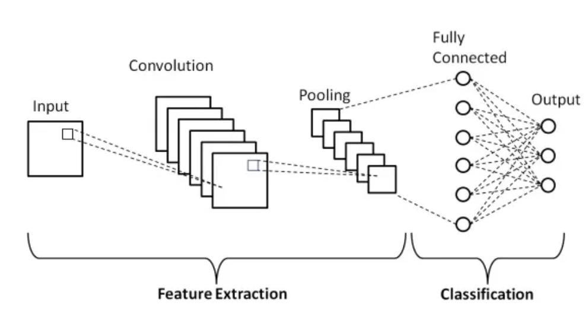
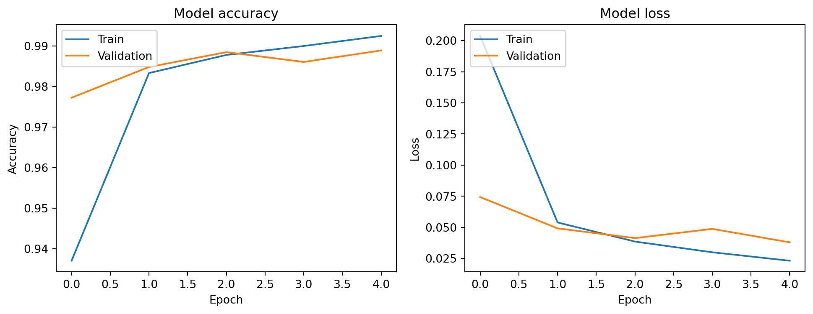

import tensorflow as tf
from tensorflow.keras import layers, models
from tensorflow.keras.datasets import mnist
from tensorflow.keras.utils import to_categorical4 Deep Learning for Visual Recognition
4.1 Basics of Convolutional Neural Networks (CNNs)
Convolutional Neural Networks (CNNs) are a class of deep learning models that are specifically designed to process data with a grid-like topology, such as images. Unlike general deep learning networks, CNNs are optimized to recognize patterns in spatial data through the use of specialized layers and operations, making them highly effective for tasks in visual recognition.
4.1.1 What is a CNN?
A Convolutional Neural Network (CNN) is a type of deep learning architecture that is particularly well-suited for image and visual data processing. It mimics the way humans perceive visual information, using hierarchical structures to progressively capture patterns and features at different scales. CNNs have a specialized structure that allows them to automatically and adaptively learn spatial hierarchies of features from data, which makes them exceptionally good at tasks such as image classification, object detection, and image segmentation.

Figure 1: Simple CNN architecture
4.1.2 Key Components of a CNN
Convolutional Layer: The convolutional layer is the core building block of a CNN. This layer applies a series of filters (also called kernels) to the input image. These filters are small in spatial dimensions but extend through the full depth of the input image (for example, a 3x3 or 5x5 filter for color images). The filters slide over the image and perform element-wise multiplication followed by summation to produce feature maps. These feature maps capture essential patterns in the image, such as edges, textures, and simple shapes.
Activation Function (ReLU): After the convolution operation, the output feature map is passed through a non-linear activation function, typically the Rectified Linear Unit (ReLU). The ReLU function helps introduce non-linearity into the model, allowing it to learn more complex patterns.
Pooling Layer: The pooling layer is used to down-sample the feature maps, reducing their spatial dimensions while retaining the most important information. The most common type of pooling is max pooling, where a sliding window extracts the maximum value from each region of the feature map. Pooling reduces the computational cost and helps prevent overfitting.
Fully Connected Layer: After several convolutional and pooling layers, the network typically ends with one or more fully connected layers. These layers are dense layers that connect every neuron to every neuron in the previous layer. The fully connected layers use the features extracted by the convolutional layers to make the final predictions, such as classifying an image into a specific category.
Softmax / Sigmoid Layer: In the final output layer, a softmax function (for multi-class classification) or sigmoid (for binary classification) is used to convert the network’s output into probabilities that sum to one, representing the likelihood of each class.
4.1.3 Difference Between CNNs and General Deep Learning Networks
While CNNs are a type of deep learning network, they are specifically designed for image and spatial data processing. The differences between CNNs and general deep learning networks, such as fully connected networks (also known as multi-layer perceptrons), primarily lie in their architecture and the operations they use.
| Feature | General Deep Learning Networks | CNNs |
|---|---|---|
| Architecture | Fully connected layers, each neuron connected to every neuron in previous and subsequent layers. Not well-suited for high-dimensional spatial data like images. | Hierarchical architecture with specialized layers (convolutional, pooling, fully connected). Captures local patterns and learns complex spatial hierarchies. |
| Parameter Sharing | Each neuron has its own set of weights, leading to a large number of parameters. Can result in overfitting and high computational costs. | Uses parameter sharing in convolutional layers, where the same filter is applied across the entire input image. Reduces the number of parameters significantly. |
| Local Receptive Field | Neurons have a global receptive field, considering all inputs from the previous layer. | Neurons in convolutional layers have a local receptive field, focusing on small patches of the input image. Captures low-level patterns and combines them in higher layers. |
| Data Efficiency | Requires a large number of parameters to process high-dimensional data, making them inefficient for tasks like image recognition. | More data-efficient due to convolutional layers and parameter sharing. Learns effective representations with fewer parameters, beneficial for large datasets. |
4.1.4 Why CNNs Are Effective for Visual Recognition
The key reason CNNs excel at visual recognition is their ability to automatically learn hierarchical features from raw image data. The convolutional layers capture simple patterns in the initial layers (such as edges and textures), and as we move deeper into the network, more complex features are captured (such as shapes and objects). This hierarchical feature learning is essential for understanding and classifying visual data effectively.
CNNs also have the ability to generalize well across images by leveraging translation invariance (the ability to recognize an object regardless of its position in the image), which is achieved through the use of shared weights and pooling operations. This makes CNNs robust to variations in input images, such as scaling, rotation, and translation.

Figure 2: Specific CNN Architecture for digit recognition
4.1.5 Simple Implementation of CNN Using Keras
In this section, we will implement a simple Convolutional Neural Network (CNN) using Keras on top of TensorFlow. This example will use the MNIST dataset, which consists of handwritten digit images.
4.1.5.1 Step 1: Import Libraries
First, we need to import the necessary libraries.
4.1.5.2 Step 2: Load and Preprocess the MNIST Dataset
The MNIST dataset is a collection of 60,000 training images and 10,000 testing images of handwritten digits (0-9). We need to load the dataset and preprocess it to fit the input shape of our CNN.
# Load the MNIST dataset
(train_images, train_labels), (test_images, test_labels) = mnist.load_data()
# Reshape the images to add a channel dimension (1 for grayscale)
train_images = train_images.reshape((60000, 28, 28, 1)).astype('float32') / 255
test_images = test_images.reshape((10000, 28, 28, 1)).astype('float32') / 255
# Convert the labels to one-hot encoding
train_labels = to_categorical(train_labels)
test_labels = to_categorical(test_labels)4.1.5.3 Step 3: Build the CNN Model
We will build a simple CNN model with three convolutional layers, each followed by a max-pooling layer. The output is then flattened and passed through two fully connected layers.
# Build the CNN model
model = models.Sequential()
model.add(layers.Conv2D(32, (3, 3), activation='relu', input_shape=(28, 28, 1)))
model.add(layers.MaxPooling2D((2, 2)))
model.add(layers.Conv2D(64, (3, 3), activation='relu'))
model.add(layers.MaxPooling2D((2, 2)))
model.add(layers.Conv2D(64, (3, 3), activation='relu'))
model.add(layers.Flatten())
model.add(layers.Dense(64, activation='relu'))
model.add(layers.Dense(10, activation='softmax'))C:\Users\SIJUKSWAMY\AppData\Local\Programs\Python\Python312\Lib\site-packages\keras\src\layers\convolutional\base_conv.py:107: UserWarning: Do not pass an `input_shape`/`input_dim` argument to a layer. When using Sequential models, prefer using an `Input(shape)` object as the first layer in the model instead.
super().__init__(activity_regularizer=activity_regularizer, **kwargs)
Explanation of model architecture
- Conv2D Layer: Applies convolutional filters to the input image to extract features.
- MaxPooling2D Layer: Reduces the spatial dimensions of the feature maps, keeping the most important information.
- Flatten Layer: Flattens the 2D feature maps into a 1D vector.
- Dense Layer: Fully connected layer that makes the final predictions.
4.1.5.4 Step 4: Compile the Model
We need to compile the model by specifying the optimizer, loss function, and evaluation metrics.
# Compile the model
model.compile(optimizer='adam',
loss='categorical_crossentropy',
metrics=['accuracy'])
Explanation of model compilation
- Optimizer:
adamoptimizer is used for training the model. - Loss Function: Categorical cross-entropy is used for multi-class classification.
- Metrics: Accuracy is used to evaluate the model’s performance.
4.1.5.5 Step 5: Train the Model
We will train the model for 5 epochs with a batch size of 64, using 20% of the training data for validation.
# Train the model
history=model.fit(train_images, train_labels, epochs=5, batch_size=64, validation_split=0.2)Epoch 1/5
1/750 ━━━━━━━━━━━━━━━━━━━━ 35:14 3s/step - accuracy: 0.0781 - loss: 2.3076 3/750 ━━━━━━━━━━━━━━━━━━━━ 21s 29ms/step - accuracy: 0.1441 - loss: 2.2937 6/750 ━━━━━━━━━━━━━━━━━━━━ 19s 27ms/step - accuracy: 0.1743 - loss: 2.2786 9/750 ━━━━━━━━━━━━━━━━━━━━ 18s 25ms/step - accuracy: 0.1935 - loss: 2.2592 12/750 ━━━━━━━━━━━━━━━━━━━━ 17s 24ms/step - accuracy: 0.2117 - loss: 2.2349 15/750 ━━━━━━━━━━━━━━━━━━━━ 17s 24ms/step - accuracy: 0.2311 - loss: 2.2055 18/750 ━━━━━━━━━━━━━━━━━━━━ 16s 23ms/step - accuracy: 0.2522 - loss: 2.1698 21/750 ━━━━━━━━━━━━━━━━━━━━ 17s 23ms/step - accuracy: 0.2741 - loss: 2.1286 23/750 ━━━━━━━━━━━━━━━━━━━━ 17s 24ms/step - accuracy: 0.2884 - loss: 2.0994 25/750 ━━━━━━━━━━━━━━━━━━━━ 17s 24ms/step - accuracy: 0.3025 - loss: 2.0690 27/750 ━━━━━━━━━━━━━━━━━━━━ 17s 24ms/step - accuracy: 0.3160 - loss: 2.0388 29/750 ━━━━━━━━━━━━━━━━━━━━ 17s 24ms/step - accuracy: 0.3288 - loss: 2.0088 32/750 ━━━━━━━━━━━━━━━━━━━━ 17s 25ms/step - accuracy: 0.3471 - loss: 1.9639 34/750 ━━━━━━━━━━━━━━━━━━━━ 17s 25ms/step - accuracy: 0.3585 - loss: 1.9345 36/750 ━━━━━━━━━━━━━━━━━━━━ 17s 25ms/step - accuracy: 0.3695 - loss: 1.9056 39/750 ━━━━━━━━━━━━━━━━━━━━ 17s 25ms/step - accuracy: 0.3851 - loss: 1.8635 42/750 ━━━━━━━━━━━━━━━━━━━━ 17s 25ms/step - accuracy: 0.4000 - loss: 1.8235 45/750 ━━━━━━━━━━━━━━━━━━━━ 17s 25ms/step - accuracy: 0.4140 - loss: 1.7851 47/750 ━━━━━━━━━━━━━━━━━━━━ 17s 25ms/step - accuracy: 0.4228 - loss: 1.7606 49/750 ━━━━━━━━━━━━━━━━━━━━ 17s 25ms/step - accuracy: 0.4313 - loss: 1.7368 51/750 ━━━━━━━━━━━━━━━━━━━━ 17s 25ms/step - accuracy: 0.4395 - loss: 1.7137 53/750 ━━━━━━━━━━━━━━━━━━━━ 17s 25ms/step - accuracy: 0.4474 - loss: 1.6916 55/750 ━━━━━━━━━━━━━━━━━━━━ 17s 26ms/step - accuracy: 0.4549 - loss: 1.6703 57/750 ━━━━━━━━━━━━━━━━━━━━ 17s 26ms/step - accuracy: 0.4622 - loss: 1.6497 59/750 ━━━━━━━━━━━━━━━━━━━━ 17s 26ms/step - accuracy: 0.4692 - loss: 1.6296 61/750 ━━━━━━━━━━━━━━━━━━━━ 18s 26ms/step - accuracy: 0.4760 - loss: 1.6101 63/750 ━━━━━━━━━━━━━━━━━━━━ 18s 26ms/step - accuracy: 0.4826 - loss: 1.5912 65/750 ━━━━━━━━━━━━━━━━━━━━ 18s 27ms/step - accuracy: 0.4890 - loss: 1.5729 67/750 ━━━━━━━━━━━━━━━━━━━━ 18s 27ms/step - accuracy: 0.4951 - loss: 1.5553 69/750 ━━━━━━━━━━━━━━━━━━━━ 18s 27ms/step - accuracy: 0.5010 - loss: 1.5381 71/750 ━━━━━━━━━━━━━━━━━━━━ 18s 27ms/step - accuracy: 0.5068 - loss: 1.5215 73/750 ━━━━━━━━━━━━━━━━━━━━ 18s 27ms/step - accuracy: 0.5123 - loss: 1.5053 75/750 ━━━━━━━━━━━━━━━━━━━━ 18s 27ms/step - accuracy: 0.5177 - loss: 1.4897 77/750 ━━━━━━━━━━━━━━━━━━━━ 17s 27ms/step - accuracy: 0.5229 - loss: 1.4744 79/750 ━━━━━━━━━━━━━━━━━━━━ 17s 27ms/step - accuracy: 0.5280 - loss: 1.4596 81/750 ━━━━━━━━━━━━━━━━━━━━ 17s 27ms/step - accuracy: 0.5329 - loss: 1.4452 83/750 ━━━━━━━━━━━━━━━━━━━━ 17s 27ms/step - accuracy: 0.5377 - loss: 1.4311 86/750 ━━━━━━━━━━━━━━━━━━━━ 17s 27ms/step - accuracy: 0.5447 - loss: 1.4107 89/750 ━━━━━━━━━━━━━━━━━━━━ 17s 26ms/step - accuracy: 0.5513 - loss: 1.3912 92/750 ━━━━━━━━━━━━━━━━━━━━ 17s 26ms/step - accuracy: 0.5577 - loss: 1.3724 94/750 ━━━━━━━━━━━━━━━━━━━━ 17s 26ms/step - accuracy: 0.5619 - loss: 1.3603 96/750 ━━━━━━━━━━━━━━━━━━━━ 17s 26ms/step - accuracy: 0.5659 - loss: 1.3484 98/750 ━━━━━━━━━━━━━━━━━━━━ 17s 26ms/step - accuracy: 0.5698 - loss: 1.3368100/750 ━━━━━━━━━━━━━━━━━━━━ 17s 26ms/step - accuracy: 0.5737 - loss: 1.3254102/750 ━━━━━━━━━━━━━━━━━━━━ 17s 26ms/step - accuracy: 0.5774 - loss: 1.3143105/750 ━━━━━━━━━━━━━━━━━━━━ 16s 26ms/step - accuracy: 0.5829 - loss: 1.2981108/750 ━━━━━━━━━━━━━━━━━━━━ 16s 26ms/step - accuracy: 0.5882 - loss: 1.2824110/750 ━━━━━━━━━━━━━━━━━━━━ 16s 26ms/step - accuracy: 0.5916 - loss: 1.2722111/750 ━━━━━━━━━━━━━━━━━━━━ 16s 27ms/step - accuracy: 0.5933 - loss: 1.2672113/750 ━━━━━━━━━━━━━━━━━━━━ 17s 27ms/step - accuracy: 0.5966 - loss: 1.2573115/750 ━━━━━━━━━━━━━━━━━━━━ 17s 27ms/step - accuracy: 0.5999 - loss: 1.2477117/750 ━━━━━━━━━━━━━━━━━━━━ 17s 27ms/step - accuracy: 0.6030 - loss: 1.2382119/750 ━━━━━━━━━━━━━━━━━━━━ 17s 27ms/step - accuracy: 0.6061 - loss: 1.2290121/750 ━━━━━━━━━━━━━━━━━━━━ 17s 27ms/step - accuracy: 0.6092 - loss: 1.2199123/750 ━━━━━━━━━━━━━━━━━━━━ 17s 27ms/step - accuracy: 0.6121 - loss: 1.2111125/750 ━━━━━━━━━━━━━━━━━━━━ 17s 27ms/step - accuracy: 0.6150 - loss: 1.2024127/750 ━━━━━━━━━━━━━━━━━━━━ 17s 27ms/step - accuracy: 0.6178 - loss: 1.1939129/750 ━━━━━━━━━━━━━━━━━━━━ 17s 27ms/step - accuracy: 0.6206 - loss: 1.1856131/750 ━━━━━━━━━━━━━━━━━━━━ 17s 28ms/step - accuracy: 0.6234 - loss: 1.1774133/750 ━━━━━━━━━━━━━━━━━━━━ 16s 28ms/step - accuracy: 0.6260 - loss: 1.1694135/750 ━━━━━━━━━━━━━━━━━━━━ 16s 28ms/step - accuracy: 0.6286 - loss: 1.1615137/750 ━━━━━━━━━━━━━━━━━━━━ 16s 28ms/step - accuracy: 0.6312 - loss: 1.1538139/750 ━━━━━━━━━━━━━━━━━━━━ 16s 27ms/step - accuracy: 0.6337 - loss: 1.1462141/750 ━━━━━━━━━━━━━━━━━━━━ 16s 27ms/step - accuracy: 0.6362 - loss: 1.1388143/750 ━━━━━━━━━━━━━━━━━━━━ 16s 27ms/step - accuracy: 0.6386 - loss: 1.1315145/750 ━━━━━━━━━━━━━━━━━━━━ 16s 28ms/step - accuracy: 0.6411 - loss: 1.1242147/750 ━━━━━━━━━━━━━━━━━━━━ 16s 28ms/step - accuracy: 0.6434 - loss: 1.1171149/750 ━━━━━━━━━━━━━━━━━━━━ 16s 28ms/step - accuracy: 0.6458 - loss: 1.1101151/750 ━━━━━━━━━━━━━━━━━━━━ 16s 28ms/step - accuracy: 0.6480 - loss: 1.1032153/750 ━━━━━━━━━━━━━━━━━━━━ 16s 28ms/step - accuracy: 0.6503 - loss: 1.0964155/750 ━━━━━━━━━━━━━━━━━━━━ 16s 28ms/step - accuracy: 0.6525 - loss: 1.0897157/750 ━━━━━━━━━━━━━━━━━━━━ 16s 28ms/step - accuracy: 0.6547 - loss: 1.0831160/750 ━━━━━━━━━━━━━━━━━━━━ 16s 28ms/step - accuracy: 0.6579 - loss: 1.0735162/750 ━━━━━━━━━━━━━━━━━━━━ 16s 28ms/step - accuracy: 0.6600 - loss: 1.0672164/750 ━━━━━━━━━━━━━━━━━━━━ 16s 28ms/step - accuracy: 0.6620 - loss: 1.0610166/750 ━━━━━━━━━━━━━━━━━━━━ 16s 28ms/step - accuracy: 0.6641 - loss: 1.0549168/750 ━━━━━━━━━━━━━━━━━━━━ 16s 28ms/step - accuracy: 0.6661 - loss: 1.0488170/750 ━━━━━━━━━━━━━━━━━━━━ 16s 28ms/step - accuracy: 0.6680 - loss: 1.0429172/750 ━━━━━━━━━━━━━━━━━━━━ 16s 28ms/step - accuracy: 0.6700 - loss: 1.0370174/750 ━━━━━━━━━━━━━━━━━━━━ 16s 28ms/step - accuracy: 0.6719 - loss: 1.0313177/750 ━━━━━━━━━━━━━━━━━━━━ 16s 28ms/step - accuracy: 0.6747 - loss: 1.0228180/750 ━━━━━━━━━━━━━━━━━━━━ 16s 28ms/step - accuracy: 0.6774 - loss: 1.0145182/750 ━━━━━━━━━━━━━━━━━━━━ 16s 28ms/step - accuracy: 0.6792 - loss: 1.0090184/750 ━━━━━━━━━━━━━━━━━━━━ 15s 28ms/step - accuracy: 0.6809 - loss: 1.0037187/750 ━━━━━━━━━━━━━━━━━━━━ 15s 28ms/step - accuracy: 0.6835 - loss: 0.9958189/750 ━━━━━━━━━━━━━━━━━━━━ 15s 28ms/step - accuracy: 0.6852 - loss: 0.9906192/750 ━━━━━━━━━━━━━━━━━━━━ 15s 28ms/step - accuracy: 0.6878 - loss: 0.9830195/750 ━━━━━━━━━━━━━━━━━━━━ 15s 28ms/step - accuracy: 0.6902 - loss: 0.9755198/750 ━━━━━━━━━━━━━━━━━━━━ 15s 28ms/step - accuracy: 0.6926 - loss: 0.9682201/750 ━━━━━━━━━━━━━━━━━━━━ 15s 28ms/step - accuracy: 0.6950 - loss: 0.9610204/750 ━━━━━━━━━━━━━━━━━━━━ 15s 28ms/step - accuracy: 0.6973 - loss: 0.9540207/750 ━━━━━━━━━━━━━━━━━━━━ 14s 28ms/step - accuracy: 0.6995 - loss: 0.9472209/750 ━━━━━━━━━━━━━━━━━━━━ 14s 28ms/step - accuracy: 0.7010 - loss: 0.9426212/750 ━━━━━━━━━━━━━━━━━━━━ 14s 27ms/step - accuracy: 0.7032 - loss: 0.9360215/750 ━━━━━━━━━━━━━━━━━━━━ 14s 27ms/step - accuracy: 0.7053 - loss: 0.9295218/750 ━━━━━━━━━━━━━━━━━━━━ 14s 27ms/step - accuracy: 0.7074 - loss: 0.9230221/750 ━━━━━━━━━━━━━━━━━━━━ 14s 27ms/step - accuracy: 0.7094 - loss: 0.9167224/750 ━━━━━━━━━━━━━━━━━━━━ 14s 27ms/step - accuracy: 0.7115 - loss: 0.9105226/750 ━━━━━━━━━━━━━━━━━━━━ 14s 27ms/step - accuracy: 0.7128 - loss: 0.9065228/750 ━━━━━━━━━━━━━━━━━━━━ 14s 27ms/step - accuracy: 0.7141 - loss: 0.9024230/750 ━━━━━━━━━━━━━━━━━━━━ 14s 27ms/step - accuracy: 0.7154 - loss: 0.8985232/750 ━━━━━━━━━━━━━━━━━━━━ 14s 27ms/step - accuracy: 0.7167 - loss: 0.8945234/750 ━━━━━━━━━━━━━━━━━━━━ 14s 27ms/step - accuracy: 0.7179 - loss: 0.8906236/750 ━━━━━━━━━━━━━━━━━━━━ 13s 27ms/step - accuracy: 0.7192 - loss: 0.8868239/750 ━━━━━━━━━━━━━━━━━━━━ 13s 27ms/step - accuracy: 0.7210 - loss: 0.8811241/750 ━━━━━━━━━━━━━━━━━━━━ 13s 27ms/step - accuracy: 0.7222 - loss: 0.8774244/750 ━━━━━━━━━━━━━━━━━━━━ 13s 27ms/step - accuracy: 0.7240 - loss: 0.8718247/750 ━━━━━━━━━━━━━━━━━━━━ 13s 27ms/step - accuracy: 0.7258 - loss: 0.8664250/750 ━━━━━━━━━━━━━━━━━━━━ 13s 27ms/step - accuracy: 0.7275 - loss: 0.8611253/750 ━━━━━━━━━━━━━━━━━━━━ 13s 27ms/step - accuracy: 0.7292 - loss: 0.8558256/750 ━━━━━━━━━━━━━━━━━━━━ 13s 27ms/step - accuracy: 0.7309 - loss: 0.8506259/750 ━━━━━━━━━━━━━━━━━━━━ 13s 27ms/step - accuracy: 0.7325 - loss: 0.8455262/750 ━━━━━━━━━━━━━━━━━━━━ 13s 27ms/step - accuracy: 0.7342 - loss: 0.8405265/750 ━━━━━━━━━━━━━━━━━━━━ 13s 27ms/step - accuracy: 0.7358 - loss: 0.8356267/750 ━━━━━━━━━━━━━━━━━━━━ 12s 27ms/step - accuracy: 0.7368 - loss: 0.8324269/750 ━━━━━━━━━━━━━━━━━━━━ 12s 27ms/step - accuracy: 0.7379 - loss: 0.8291271/750 ━━━━━━━━━━━━━━━━━━━━ 12s 27ms/step - accuracy: 0.7389 - loss: 0.8260273/750 ━━━━━━━━━━━━━━━━━━━━ 12s 27ms/step - accuracy: 0.7399 - loss: 0.8228276/750 ━━━━━━━━━━━━━━━━━━━━ 12s 27ms/step - accuracy: 0.7414 - loss: 0.8182278/750 ━━━━━━━━━━━━━━━━━━━━ 12s 27ms/step - accuracy: 0.7424 - loss: 0.8151280/750 ━━━━━━━━━━━━━━━━━━━━ 12s 27ms/step - accuracy: 0.7434 - loss: 0.8120282/750 ━━━━━━━━━━━━━━━━━━━━ 12s 27ms/step - accuracy: 0.7444 - loss: 0.8090284/750 ━━━━━━━━━━━━━━━━━━━━ 12s 27ms/step - accuracy: 0.7453 - loss: 0.8060286/750 ━━━━━━━━━━━━━━━━━━━━ 12s 27ms/step - accuracy: 0.7463 - loss: 0.8031287/750 ━━━━━━━━━━━━━━━━━━━━ 12s 27ms/step - accuracy: 0.7467 - loss: 0.8016288/750 ━━━━━━━━━━━━━━━━━━━━ 12s 27ms/step - accuracy: 0.7472 - loss: 0.8001290/750 ━━━━━━━━━━━━━━━━━━━━ 12s 27ms/step - accuracy: 0.7482 - loss: 0.7972292/750 ━━━━━━━━━━━━━━━━━━━━ 12s 27ms/step - accuracy: 0.7491 - loss: 0.7944294/750 ━━━━━━━━━━━━━━━━━━━━ 12s 27ms/step - accuracy: 0.7500 - loss: 0.7915296/750 ━━━━━━━━━━━━━━━━━━━━ 12s 27ms/step - accuracy: 0.7509 - loss: 0.7887298/750 ━━━━━━━━━━━━━━━━━━━━ 12s 28ms/step - accuracy: 0.7518 - loss: 0.7859300/750 ━━━━━━━━━━━━━━━━━━━━ 12s 28ms/step - accuracy: 0.7527 - loss: 0.7831302/750 ━━━━━━━━━━━━━━━━━━━━ 12s 28ms/step - accuracy: 0.7536 - loss: 0.7804304/750 ━━━━━━━━━━━━━━━━━━━━ 12s 28ms/step - accuracy: 0.7545 - loss: 0.7777306/750 ━━━━━━━━━━━━━━━━━━━━ 12s 28ms/step - accuracy: 0.7553 - loss: 0.7750308/750 ━━━━━━━━━━━━━━━━━━━━ 12s 28ms/step - accuracy: 0.7562 - loss: 0.7723310/750 ━━━━━━━━━━━━━━━━━━━━ 12s 28ms/step - accuracy: 0.7570 - loss: 0.7697312/750 ━━━━━━━━━━━━━━━━━━━━ 12s 28ms/step - accuracy: 0.7579 - loss: 0.7670314/750 ━━━━━━━━━━━━━━━━━━━━ 12s 28ms/step - accuracy: 0.7587 - loss: 0.7644316/750 ━━━━━━━━━━━━━━━━━━━━ 12s 28ms/step - accuracy: 0.7596 - loss: 0.7619318/750 ━━━━━━━━━━━━━━━━━━━━ 12s 28ms/step - accuracy: 0.7604 - loss: 0.7593321/750 ━━━━━━━━━━━━━━━━━━━━ 12s 28ms/step - accuracy: 0.7616 - loss: 0.7555323/750 ━━━━━━━━━━━━━━━━━━━━ 11s 28ms/step - accuracy: 0.7624 - loss: 0.7530325/750 ━━━━━━━━━━━━━━━━━━━━ 11s 28ms/step - accuracy: 0.7632 - loss: 0.7505327/750 ━━━━━━━━━━━━━━━━━━━━ 11s 28ms/step - accuracy: 0.7640 - loss: 0.7481329/750 ━━━━━━━━━━━━━━━━━━━━ 11s 28ms/step - accuracy: 0.7648 - loss: 0.7457331/750 ━━━━━━━━━━━━━━━━━━━━ 11s 28ms/step - accuracy: 0.7655 - loss: 0.7432333/750 ━━━━━━━━━━━━━━━━━━━━ 11s 28ms/step - accuracy: 0.7663 - loss: 0.7408336/750 ━━━━━━━━━━━━━━━━━━━━ 11s 28ms/step - accuracy: 0.7674 - loss: 0.7373339/750 ━━━━━━━━━━━━━━━━━━━━ 11s 28ms/step - accuracy: 0.7686 - loss: 0.7338341/750 ━━━━━━━━━━━━━━━━━━━━ 11s 28ms/step - accuracy: 0.7693 - loss: 0.7315343/750 ━━━━━━━━━━━━━━━━━━━━ 11s 28ms/step - accuracy: 0.7701 - loss: 0.7292345/750 ━━━━━━━━━━━━━━━━━━━━ 11s 28ms/step - accuracy: 0.7708 - loss: 0.7269347/750 ━━━━━━━━━━━━━━━━━━━━ 11s 28ms/step - accuracy: 0.7715 - loss: 0.7247349/750 ━━━━━━━━━━━━━━━━━━━━ 11s 28ms/step - accuracy: 0.7722 - loss: 0.7224351/750 ━━━━━━━━━━━━━━━━━━━━ 11s 28ms/step - accuracy: 0.7729 - loss: 0.7202353/750 ━━━━━━━━━━━━━━━━━━━━ 11s 28ms/step - accuracy: 0.7736 - loss: 0.7180355/750 ━━━━━━━━━━━━━━━━━━━━ 11s 28ms/step - accuracy: 0.7743 - loss: 0.7158357/750 ━━━━━━━━━━━━━━━━━━━━ 10s 28ms/step - accuracy: 0.7750 - loss: 0.7136359/750 ━━━━━━━━━━━━━━━━━━━━ 10s 28ms/step - accuracy: 0.7757 - loss: 0.7115360/750 ━━━━━━━━━━━━━━━━━━━━ 10s 28ms/step - accuracy: 0.7761 - loss: 0.7104362/750 ━━━━━━━━━━━━━━━━━━━━ 10s 28ms/step - accuracy: 0.7768 - loss: 0.7083364/750 ━━━━━━━━━━━━━━━━━━━━ 10s 28ms/step - accuracy: 0.7774 - loss: 0.7062366/750 ━━━━━━━━━━━━━━━━━━━━ 10s 28ms/step - accuracy: 0.7781 - loss: 0.7041368/750 ━━━━━━━━━━━━━━━━━━━━ 10s 28ms/step - accuracy: 0.7788 - loss: 0.7020371/750 ━━━━━━━━━━━━━━━━━━━━ 10s 28ms/step - accuracy: 0.7798 - loss: 0.6989373/750 ━━━━━━━━━━━━━━━━━━━━ 10s 28ms/step - accuracy: 0.7804 - loss: 0.6969375/750 ━━━━━━━━━━━━━━━━━━━━ 10s 28ms/step - accuracy: 0.7810 - loss: 0.6949377/750 ━━━━━━━━━━━━━━━━━━━━ 10s 28ms/step - accuracy: 0.7817 - loss: 0.6929379/750 ━━━━━━━━━━━━━━━━━━━━ 10s 28ms/step - accuracy: 0.7823 - loss: 0.6909381/750 ━━━━━━━━━━━━━━━━━━━━ 10s 28ms/step - accuracy: 0.7830 - loss: 0.6889383/750 ━━━━━━━━━━━━━━━━━━━━ 10s 28ms/step - accuracy: 0.7836 - loss: 0.6870385/750 ━━━━━━━━━━━━━━━━━━━━ 10s 28ms/step - accuracy: 0.7842 - loss: 0.6850387/750 ━━━━━━━━━━━━━━━━━━━━ 10s 28ms/step - accuracy: 0.7848 - loss: 0.6831389/750 ━━━━━━━━━━━━━━━━━━━━ 10s 28ms/step - accuracy: 0.7854 - loss: 0.6812391/750 ━━━━━━━━━━━━━━━━━━━━ 10s 28ms/step - accuracy: 0.7860 - loss: 0.6793393/750 ━━━━━━━━━━━━━━━━━━━━ 10s 28ms/step - accuracy: 0.7866 - loss: 0.6774395/750 ━━━━━━━━━━━━━━━━━━━━ 10s 28ms/step - accuracy: 0.7872 - loss: 0.6755398/750 ━━━━━━━━━━━━━━━━━━━━ 9s 28ms/step - accuracy: 0.7881 - loss: 0.6727 400/750 ━━━━━━━━━━━━━━━━━━━━ 9s 28ms/step - accuracy: 0.7887 - loss: 0.6709402/750 ━━━━━━━━━━━━━━━━━━━━ 9s 28ms/step - accuracy: 0.7893 - loss: 0.6691403/750 ━━━━━━━━━━━━━━━━━━━━ 9s 28ms/step - accuracy: 0.7896 - loss: 0.6682405/750 ━━━━━━━━━━━━━━━━━━━━ 9s 29ms/step - accuracy: 0.7902 - loss: 0.6663407/750 ━━━━━━━━━━━━━━━━━━━━ 9s 29ms/step - accuracy: 0.7907 - loss: 0.6645409/750 ━━━━━━━━━━━━━━━━━━━━ 9s 29ms/step - accuracy: 0.7913 - loss: 0.6628411/750 ━━━━━━━━━━━━━━━━━━━━ 9s 29ms/step - accuracy: 0.7919 - loss: 0.6610413/750 ━━━━━━━━━━━━━━━━━━━━ 9s 29ms/step - accuracy: 0.7924 - loss: 0.6592415/750 ━━━━━━━━━━━━━━━━━━━━ 9s 29ms/step - accuracy: 0.7930 - loss: 0.6575417/750 ━━━━━━━━━━━━━━━━━━━━ 9s 29ms/step - accuracy: 0.7936 - loss: 0.6558419/750 ━━━━━━━━━━━━━━━━━━━━ 9s 29ms/step - accuracy: 0.7941 - loss: 0.6541421/750 ━━━━━━━━━━━━━━━━━━━━ 9s 29ms/step - accuracy: 0.7946 - loss: 0.6524423/750 ━━━━━━━━━━━━━━━━━━━━ 9s 29ms/step - accuracy: 0.7952 - loss: 0.6507425/750 ━━━━━━━━━━━━━━━━━━━━ 9s 29ms/step - accuracy: 0.7957 - loss: 0.6490427/750 ━━━━━━━━━━━━━━━━━━━━ 9s 29ms/step - accuracy: 0.7963 - loss: 0.6473429/750 ━━━━━━━━━━━━━━━━━━━━ 9s 29ms/step - accuracy: 0.7968 - loss: 0.6457430/750 ━━━━━━━━━━━━━━━━━━━━ 9s 29ms/step - accuracy: 0.7970 - loss: 0.6448431/750 ━━━━━━━━━━━━━━━━━━━━ 9s 29ms/step - accuracy: 0.7973 - loss: 0.6440433/750 ━━━━━━━━━━━━━━━━━━━━ 9s 29ms/step - accuracy: 0.7978 - loss: 0.6424435/750 ━━━━━━━━━━━━━━━━━━━━ 9s 29ms/step - accuracy: 0.7983 - loss: 0.6407437/750 ━━━━━━━━━━━━━━━━━━━━ 9s 29ms/step - accuracy: 0.7989 - loss: 0.6391439/750 ━━━━━━━━━━━━━━━━━━━━ 9s 29ms/step - accuracy: 0.7994 - loss: 0.6375441/750 ━━━━━━━━━━━━━━━━━━━━ 9s 29ms/step - accuracy: 0.7999 - loss: 0.6359443/750 ━━━━━━━━━━━━━━━━━━━━ 9s 29ms/step - accuracy: 0.8004 - loss: 0.6344445/750 ━━━━━━━━━━━━━━━━━━━━ 9s 30ms/step - accuracy: 0.8009 - loss: 0.6328447/750 ━━━━━━━━━━━━━━━━━━━━ 8s 30ms/step - accuracy: 0.8014 - loss: 0.6312448/750 ━━━━━━━━━━━━━━━━━━━━ 8s 30ms/step - accuracy: 0.8016 - loss: 0.6304449/750 ━━━━━━━━━━━━━━━━━━━━ 8s 30ms/step - accuracy: 0.8019 - loss: 0.6297450/750 ━━━━━━━━━━━━━━━━━━━━ 8s 30ms/step - accuracy: 0.8021 - loss: 0.6289452/750 ━━━━━━━━━━━━━━━━━━━━ 8s 30ms/step - accuracy: 0.8026 - loss: 0.6274453/750 ━━━━━━━━━━━━━━━━━━━━ 8s 30ms/step - accuracy: 0.8029 - loss: 0.6266454/750 ━━━━━━━━━━━━━━━━━━━━ 8s 30ms/step - accuracy: 0.8031 - loss: 0.6258456/750 ━━━━━━━━━━━━━━━━━━━━ 8s 30ms/step - accuracy: 0.8036 - loss: 0.6243458/750 ━━━━━━━━━━━━━━━━━━━━ 8s 30ms/step - accuracy: 0.8041 - loss: 0.6228460/750 ━━━━━━━━━━━━━━━━━━━━ 8s 30ms/step - accuracy: 0.8045 - loss: 0.6213462/750 ━━━━━━━━━━━━━━━━━━━━ 8s 30ms/step - accuracy: 0.8050 - loss: 0.6198464/750 ━━━━━━━━━━━━━━━━━━━━ 8s 30ms/step - accuracy: 0.8055 - loss: 0.6184466/750 ━━━━━━━━━━━━━━━━━━━━ 8s 30ms/step - accuracy: 0.8060 - loss: 0.6169468/750 ━━━━━━━━━━━━━━━━━━━━ 8s 30ms/step - accuracy: 0.8064 - loss: 0.6154470/750 ━━━━━━━━━━━━━━━━━━━━ 8s 30ms/step - accuracy: 0.8069 - loss: 0.6140472/750 ━━━━━━━━━━━━━━━━━━━━ 8s 30ms/step - accuracy: 0.8073 - loss: 0.6125474/750 ━━━━━━━━━━━━━━━━━━━━ 8s 30ms/step - accuracy: 0.8078 - loss: 0.6111476/750 ━━━━━━━━━━━━━━━━━━━━ 8s 30ms/step - accuracy: 0.8083 - loss: 0.6097478/750 ━━━━━━━━━━━━━━━━━━━━ 8s 30ms/step - accuracy: 0.8087 - loss: 0.6083480/750 ━━━━━━━━━━━━━━━━━━━━ 8s 30ms/step - accuracy: 0.8092 - loss: 0.6069482/750 ━━━━━━━━━━━━━━━━━━━━ 8s 30ms/step - accuracy: 0.8096 - loss: 0.6055484/750 ━━━━━━━━━━━━━━━━━━━━ 8s 30ms/step - accuracy: 0.8100 - loss: 0.6041486/750 ━━━━━━━━━━━━━━━━━━━━ 8s 30ms/step - accuracy: 0.8105 - loss: 0.6027488/750 ━━━━━━━━━━━━━━━━━━━━ 7s 30ms/step - accuracy: 0.8109 - loss: 0.6013490/750 ━━━━━━━━━━━━━━━━━━━━ 7s 30ms/step - accuracy: 0.8114 - loss: 0.5999492/750 ━━━━━━━━━━━━━━━━━━━━ 7s 30ms/step - accuracy: 0.8118 - loss: 0.5986494/750 ━━━━━━━━━━━━━━━━━━━━ 7s 30ms/step - accuracy: 0.8122 - loss: 0.5972496/750 ━━━━━━━━━━━━━━━━━━━━ 7s 30ms/step - accuracy: 0.8126 - loss: 0.5959498/750 ━━━━━━━━━━━━━━━━━━━━ 7s 30ms/step - accuracy: 0.8131 - loss: 0.5946500/750 ━━━━━━━━━━━━━━━━━━━━ 7s 30ms/step - accuracy: 0.8135 - loss: 0.5932503/750 ━━━━━━━━━━━━━━━━━━━━ 7s 30ms/step - accuracy: 0.8141 - loss: 0.5913506/750 ━━━━━━━━━━━━━━━━━━━━ 7s 30ms/step - accuracy: 0.8147 - loss: 0.5893509/750 ━━━━━━━━━━━━━━━━━━━━ 7s 30ms/step - accuracy: 0.8154 - loss: 0.5874511/750 ━━━━━━━━━━━━━━━━━━━━ 7s 30ms/step - accuracy: 0.8158 - loss: 0.5861513/750 ━━━━━━━━━━━━━━━━━━━━ 7s 30ms/step - accuracy: 0.8162 - loss: 0.5848515/750 ━━━━━━━━━━━━━━━━━━━━ 7s 30ms/step - accuracy: 0.8166 - loss: 0.5836518/750 ━━━━━━━━━━━━━━━━━━━━ 7s 30ms/step - accuracy: 0.8172 - loss: 0.5817521/750 ━━━━━━━━━━━━━━━━━━━━ 6s 30ms/step - accuracy: 0.8178 - loss: 0.5798524/750 ━━━━━━━━━━━━━━━━━━━━ 6s 30ms/step - accuracy: 0.8184 - loss: 0.5780527/750 ━━━━━━━━━━━━━━━━━━━━ 6s 30ms/step - accuracy: 0.8190 - loss: 0.5761530/750 ━━━━━━━━━━━━━━━━━━━━ 6s 30ms/step - accuracy: 0.8195 - loss: 0.5743532/750 ━━━━━━━━━━━━━━━━━━━━ 6s 30ms/step - accuracy: 0.8199 - loss: 0.5731535/750 ━━━━━━━━━━━━━━━━━━━━ 6s 30ms/step - accuracy: 0.8205 - loss: 0.5713538/750 ━━━━━━━━━━━━━━━━━━━━ 6s 30ms/step - accuracy: 0.8211 - loss: 0.5695540/750 ━━━━━━━━━━━━━━━━━━━━ 6s 30ms/step - accuracy: 0.8214 - loss: 0.5683543/750 ━━━━━━━━━━━━━━━━━━━━ 6s 30ms/step - accuracy: 0.8220 - loss: 0.5666546/750 ━━━━━━━━━━━━━━━━━━━━ 6s 30ms/step - accuracy: 0.8226 - loss: 0.5648549/750 ━━━━━━━━━━━━━━━━━━━━ 6s 30ms/step - accuracy: 0.8231 - loss: 0.5631552/750 ━━━━━━━━━━━━━━━━━━━━ 5s 30ms/step - accuracy: 0.8237 - loss: 0.5614555/750 ━━━━━━━━━━━━━━━━━━━━ 5s 30ms/step - accuracy: 0.8242 - loss: 0.5597557/750 ━━━━━━━━━━━━━━━━━━━━ 5s 30ms/step - accuracy: 0.8246 - loss: 0.5585560/750 ━━━━━━━━━━━━━━━━━━━━ 5s 30ms/step - accuracy: 0.8251 - loss: 0.5569562/750 ━━━━━━━━━━━━━━━━━━━━ 5s 30ms/step - accuracy: 0.8254 - loss: 0.5558564/750 ━━━━━━━━━━━━━━━━━━━━ 5s 30ms/step - accuracy: 0.8258 - loss: 0.5546566/750 ━━━━━━━━━━━━━━━━━━━━ 5s 30ms/step - accuracy: 0.8261 - loss: 0.5535568/750 ━━━━━━━━━━━━━━━━━━━━ 5s 30ms/step - accuracy: 0.8265 - loss: 0.5525570/750 ━━━━━━━━━━━━━━━━━━━━ 5s 30ms/step - accuracy: 0.8268 - loss: 0.5514572/750 ━━━━━━━━━━━━━━━━━━━━ 5s 30ms/step - accuracy: 0.8272 - loss: 0.5503574/750 ━━━━━━━━━━━━━━━━━━━━ 5s 30ms/step - accuracy: 0.8275 - loss: 0.5492576/750 ━━━━━━━━━━━━━━━━━━━━ 5s 30ms/step - accuracy: 0.8279 - loss: 0.5481578/750 ━━━━━━━━━━━━━━━━━━━━ 5s 30ms/step - accuracy: 0.8282 - loss: 0.5471580/750 ━━━━━━━━━━━━━━━━━━━━ 5s 30ms/step - accuracy: 0.8286 - loss: 0.5460581/750 ━━━━━━━━━━━━━━━━━━━━ 5s 30ms/step - accuracy: 0.8287 - loss: 0.5455583/750 ━━━━━━━━━━━━━━━━━━━━ 5s 30ms/step - accuracy: 0.8291 - loss: 0.5444585/750 ━━━━━━━━━━━━━━━━━━━━ 4s 30ms/step - accuracy: 0.8294 - loss: 0.5434587/750 ━━━━━━━━━━━━━━━━━━━━ 4s 30ms/step - accuracy: 0.8297 - loss: 0.5423589/750 ━━━━━━━━━━━━━━━━━━━━ 4s 30ms/step - accuracy: 0.8300 - loss: 0.5413591/750 ━━━━━━━━━━━━━━━━━━━━ 4s 30ms/step - accuracy: 0.8304 - loss: 0.5403593/750 ━━━━━━━━━━━━━━━━━━━━ 4s 30ms/step - accuracy: 0.8307 - loss: 0.5393595/750 ━━━━━━━━━━━━━━━━━━━━ 4s 30ms/step - accuracy: 0.8310 - loss: 0.5382597/750 ━━━━━━━━━━━━━━━━━━━━ 4s 30ms/step - accuracy: 0.8313 - loss: 0.5372599/750 ━━━━━━━━━━━━━━━━━━━━ 4s 30ms/step - accuracy: 0.8317 - loss: 0.5362601/750 ━━━━━━━━━━━━━━━━━━━━ 4s 30ms/step - accuracy: 0.8320 - loss: 0.5352603/750 ━━━━━━━━━━━━━━━━━━━━ 4s 30ms/step - accuracy: 0.8323 - loss: 0.5342605/750 ━━━━━━━━━━━━━━━━━━━━ 4s 30ms/step - accuracy: 0.8326 - loss: 0.5332607/750 ━━━━━━━━━━━━━━━━━━━━ 4s 30ms/step - accuracy: 0.8329 - loss: 0.5322609/750 ━━━━━━━━━━━━━━━━━━━━ 4s 30ms/step - accuracy: 0.8332 - loss: 0.5312611/750 ━━━━━━━━━━━━━━━━━━━━ 4s 30ms/step - accuracy: 0.8336 - loss: 0.5303613/750 ━━━━━━━━━━━━━━━━━━━━ 4s 30ms/step - accuracy: 0.8339 - loss: 0.5293615/750 ━━━━━━━━━━━━━━━━━━━━ 4s 30ms/step - accuracy: 0.8342 - loss: 0.5283617/750 ━━━━━━━━━━━━━━━━━━━━ 4s 30ms/step - accuracy: 0.8345 - loss: 0.5274619/750 ━━━━━━━━━━━━━━━━━━━━ 3s 30ms/step - accuracy: 0.8348 - loss: 0.5264621/750 ━━━━━━━━━━━━━━━━━━━━ 3s 30ms/step - accuracy: 0.8351 - loss: 0.5254623/750 ━━━━━━━━━━━━━━━━━━━━ 3s 30ms/step - accuracy: 0.8354 - loss: 0.5245626/750 ━━━━━━━━━━━━━━━━━━━━ 3s 30ms/step - accuracy: 0.8358 - loss: 0.5231628/750 ━━━━━━━━━━━━━━━━━━━━ 3s 30ms/step - accuracy: 0.8361 - loss: 0.5221631/750 ━━━━━━━━━━━━━━━━━━━━ 3s 30ms/step - accuracy: 0.8366 - loss: 0.5207634/750 ━━━━━━━━━━━━━━━━━━━━ 3s 30ms/step - accuracy: 0.8370 - loss: 0.5194636/750 ━━━━━━━━━━━━━━━━━━━━ 3s 30ms/step - accuracy: 0.8373 - loss: 0.5184638/750 ━━━━━━━━━━━━━━━━━━━━ 3s 30ms/step - accuracy: 0.8376 - loss: 0.5175640/750 ━━━━━━━━━━━━━━━━━━━━ 3s 30ms/step - accuracy: 0.8379 - loss: 0.5166642/750 ━━━━━━━━━━━━━━━━━━━━ 3s 30ms/step - accuracy: 0.8382 - loss: 0.5157644/750 ━━━━━━━━━━━━━━━━━━━━ 3s 30ms/step - accuracy: 0.8385 - loss: 0.5148646/750 ━━━━━━━━━━━━━━━━━━━━ 3s 30ms/step - accuracy: 0.8388 - loss: 0.5139648/750 ━━━━━━━━━━━━━━━━━━━━ 3s 30ms/step - accuracy: 0.8390 - loss: 0.5130650/750 ━━━━━━━━━━━━━━━━━━━━ 3s 30ms/step - accuracy: 0.8393 - loss: 0.5121652/750 ━━━━━━━━━━━━━━━━━━━━ 2s 30ms/step - accuracy: 0.8396 - loss: 0.5112653/750 ━━━━━━━━━━━━━━━━━━━━ 2s 30ms/step - accuracy: 0.8398 - loss: 0.5108654/750 ━━━━━━━━━━━━━━━━━━━━ 2s 30ms/step - accuracy: 0.8399 - loss: 0.5103655/750 ━━━━━━━━━━━━━━━━━━━━ 2s 30ms/step - accuracy: 0.8400 - loss: 0.5099657/750 ━━━━━━━━━━━━━━━━━━━━ 2s 30ms/step - accuracy: 0.8403 - loss: 0.5090659/750 ━━━━━━━━━━━━━━━━━━━━ 2s 30ms/step - accuracy: 0.8406 - loss: 0.5081661/750 ━━━━━━━━━━━━━━━━━━━━ 2s 30ms/step - accuracy: 0.8409 - loss: 0.5073663/750 ━━━━━━━━━━━━━━━━━━━━ 2s 30ms/step - accuracy: 0.8411 - loss: 0.5064665/750 ━━━━━━━━━━━━━━━━━━━━ 2s 30ms/step - accuracy: 0.8414 - loss: 0.5056667/750 ━━━━━━━━━━━━━━━━━━━━ 2s 30ms/step - accuracy: 0.8417 - loss: 0.5047669/750 ━━━━━━━━━━━━━━━━━━━━ 2s 30ms/step - accuracy: 0.8419 - loss: 0.5038671/750 ━━━━━━━━━━━━━━━━━━━━ 2s 30ms/step - accuracy: 0.8422 - loss: 0.5030673/750 ━━━━━━━━━━━━━━━━━━━━ 2s 30ms/step - accuracy: 0.8425 - loss: 0.5022675/750 ━━━━━━━━━━━━━━━━━━━━ 2s 30ms/step - accuracy: 0.8428 - loss: 0.5013677/750 ━━━━━━━━━━━━━━━━━━━━ 2s 30ms/step - accuracy: 0.8430 - loss: 0.5005679/750 ━━━━━━━━━━━━━━━━━━━━ 2s 30ms/step - accuracy: 0.8433 - loss: 0.4996681/750 ━━━━━━━━━━━━━━━━━━━━ 2s 30ms/step - accuracy: 0.8435 - loss: 0.4988683/750 ━━━━━━━━━━━━━━━━━━━━ 2s 30ms/step - accuracy: 0.8438 - loss: 0.4980685/750 ━━━━━━━━━━━━━━━━━━━━ 1s 30ms/step - accuracy: 0.8441 - loss: 0.4972687/750 ━━━━━━━━━━━━━━━━━━━━ 1s 30ms/step - accuracy: 0.8443 - loss: 0.4963688/750 ━━━━━━━━━━━━━━━━━━━━ 1s 30ms/step - accuracy: 0.8445 - loss: 0.4959689/750 ━━━━━━━━━━━━━━━━━━━━ 1s 30ms/step - accuracy: 0.8446 - loss: 0.4955691/750 ━━━━━━━━━━━━━━━━━━━━ 1s 31ms/step - accuracy: 0.8448 - loss: 0.4947693/750 ━━━━━━━━━━━━━━━━━━━━ 1s 31ms/step - accuracy: 0.8451 - loss: 0.4939695/750 ━━━━━━━━━━━━━━━━━━━━ 1s 31ms/step - accuracy: 0.8454 - loss: 0.4931697/750 ━━━━━━━━━━━━━━━━━━━━ 1s 31ms/step - accuracy: 0.8456 - loss: 0.4923699/750 ━━━━━━━━━━━━━━━━━━━━ 1s 31ms/step - accuracy: 0.8459 - loss: 0.4915701/750 ━━━━━━━━━━━━━━━━━━━━ 1s 31ms/step - accuracy: 0.8461 - loss: 0.4907703/750 ━━━━━━━━━━━━━━━━━━━━ 1s 31ms/step - accuracy: 0.8464 - loss: 0.4899704/750 ━━━━━━━━━━━━━━━━━━━━ 1s 31ms/step - accuracy: 0.8465 - loss: 0.4895705/750 ━━━━━━━━━━━━━━━━━━━━ 1s 31ms/step - accuracy: 0.8466 - loss: 0.4891706/750 ━━━━━━━━━━━━━━━━━━━━ 1s 31ms/step - accuracy: 0.8467 - loss: 0.4887707/750 ━━━━━━━━━━━━━━━━━━━━ 1s 31ms/step - accuracy: 0.8469 - loss: 0.4884708/750 ━━━━━━━━━━━━━━━━━━━━ 1s 31ms/step - accuracy: 0.8470 - loss: 0.4880709/750 ━━━━━━━━━━━━━━━━━━━━ 1s 31ms/step - accuracy: 0.8471 - loss: 0.4876711/750 ━━━━━━━━━━━━━━━━━━━━ 1s 31ms/step - accuracy: 0.8474 - loss: 0.4868713/750 ━━━━━━━━━━━━━━━━━━━━ 1s 31ms/step - accuracy: 0.8476 - loss: 0.4860715/750 ━━━━━━━━━━━━━━━━━━━━ 1s 31ms/step - accuracy: 0.8478 - loss: 0.4853717/750 ━━━━━━━━━━━━━━━━━━━━ 1s 31ms/step - accuracy: 0.8481 - loss: 0.4845719/750 ━━━━━━━━━━━━━━━━━━━━ 0s 31ms/step - accuracy: 0.8483 - loss: 0.4837721/750 ━━━━━━━━━━━━━━━━━━━━ 0s 31ms/step - accuracy: 0.8486 - loss: 0.4830723/750 ━━━━━━━━━━━━━━━━━━━━ 0s 31ms/step - accuracy: 0.8488 - loss: 0.4822725/750 ━━━━━━━━━━━━━━━━━━━━ 0s 31ms/step - accuracy: 0.8491 - loss: 0.4815727/750 ━━━━━━━━━━━━━━━━━━━━ 0s 31ms/step - accuracy: 0.8493 - loss: 0.4807728/750 ━━━━━━━━━━━━━━━━━━━━ 0s 31ms/step - accuracy: 0.8494 - loss: 0.4803730/750 ━━━━━━━━━━━━━━━━━━━━ 0s 31ms/step - accuracy: 0.8496 - loss: 0.4796732/750 ━━━━━━━━━━━━━━━━━━━━ 0s 31ms/step - accuracy: 0.8499 - loss: 0.4788734/750 ━━━━━━━━━━━━━━━━━━━━ 0s 31ms/step - accuracy: 0.8501 - loss: 0.4781736/750 ━━━━━━━━━━━━━━━━━━━━ 0s 31ms/step - accuracy: 0.8503 - loss: 0.4774738/750 ━━━━━━━━━━━━━━━━━━━━ 0s 31ms/step - accuracy: 0.8506 - loss: 0.4766740/750 ━━━━━━━━━━━━━━━━━━━━ 0s 31ms/step - accuracy: 0.8508 - loss: 0.4759742/750 ━━━━━━━━━━━━━━━━━━━━ 0s 31ms/step - accuracy: 0.8510 - loss: 0.4752744/750 ━━━━━━━━━━━━━━━━━━━━ 0s 31ms/step - accuracy: 0.8513 - loss: 0.4744745/750 ━━━━━━━━━━━━━━━━━━━━ 0s 31ms/step - accuracy: 0.8514 - loss: 0.4741746/750 ━━━━━━━━━━━━━━━━━━━━ 0s 32ms/step - accuracy: 0.8515 - loss: 0.4737747/750 ━━━━━━━━━━━━━━━━━━━━ 0s 32ms/step - accuracy: 0.8516 - loss: 0.4734749/750 ━━━━━━━━━━━━━━━━━━━━ 0s 32ms/step - accuracy: 0.8518 - loss: 0.4726750/750 ━━━━━━━━━━━━━━━━━━━━ 29s 35ms/step - accuracy: 0.8521 - loss: 0.4719 - val_accuracy: 0.9772 - val_loss: 0.0744
Epoch 2/5
1/750 ━━━━━━━━━━━━━━━━━━━━ 1:25 114ms/step - accuracy: 0.9688 - loss: 0.0692 3/750 ━━━━━━━━━━━━━━━━━━━━ 22s 30ms/step - accuracy: 0.9792 - loss: 0.0566 5/750 ━━━━━━━━━━━━━━━━━━━━ 21s 29ms/step - accuracy: 0.9820 - loss: 0.0543 7/750 ━━━━━━━━━━━━━━━━━━━━ 22s 30ms/step - accuracy: 0.9827 - loss: 0.0529 9/750 ━━━━━━━━━━━━━━━━━━━━ 21s 29ms/step - accuracy: 0.9829 - loss: 0.0542 11/750 ━━━━━━━━━━━━━━━━━━━━ 21s 29ms/step - accuracy: 0.9829 - loss: 0.0552 13/750 ━━━━━━━━━━━━━━━━━━━━ 21s 29ms/step - accuracy: 0.9825 - loss: 0.0563 15/750 ━━━━━━━━━━━━━━━━━━━━ 20s 28ms/step - accuracy: 0.9819 - loss: 0.0584 18/750 ━━━━━━━━━━━━━━━━━━━━ 19s 27ms/step - accuracy: 0.9812 - loss: 0.0600 21/750 ━━━━━━━━━━━━━━━━━━━━ 19s 27ms/step - accuracy: 0.9808 - loss: 0.0610 24/750 ━━━━━━━━━━━━━━━━━━━━ 19s 26ms/step - accuracy: 0.9803 - loss: 0.0624 26/750 ━━━━━━━━━━━━━━━━━━━━ 19s 26ms/step - accuracy: 0.9800 - loss: 0.0631 29/750 ━━━━━━━━━━━━━━━━━━━━ 18s 26ms/step - accuracy: 0.9799 - loss: 0.0637 32/750 ━━━━━━━━━━━━━━━━━━━━ 18s 26ms/step - accuracy: 0.9800 - loss: 0.0638 35/750 ━━━━━━━━━━━━━━━━━━━━ 18s 26ms/step - accuracy: 0.9800 - loss: 0.0639 37/750 ━━━━━━━━━━━━━━━━━━━━ 18s 26ms/step - accuracy: 0.9800 - loss: 0.0639 39/750 ━━━━━━━━━━━━━━━━━━━━ 18s 26ms/step - accuracy: 0.9800 - loss: 0.0639 41/750 ━━━━━━━━━━━━━━━━━━━━ 18s 27ms/step - accuracy: 0.9800 - loss: 0.0640 43/750 ━━━━━━━━━━━━━━━━━━━━ 19s 27ms/step - accuracy: 0.9799 - loss: 0.0641 45/750 ━━━━━━━━━━━━━━━━━━━━ 19s 28ms/step - accuracy: 0.9799 - loss: 0.0641 47/750 ━━━━━━━━━━━━━━━━━━━━ 19s 28ms/step - accuracy: 0.9799 - loss: 0.0640 49/750 ━━━━━━━━━━━━━━━━━━━━ 19s 28ms/step - accuracy: 0.9799 - loss: 0.0640 52/750 ━━━━━━━━━━━━━━━━━━━━ 19s 28ms/step - accuracy: 0.9799 - loss: 0.0640 55/750 ━━━━━━━━━━━━━━━━━━━━ 19s 28ms/step - accuracy: 0.9799 - loss: 0.0638 58/750 ━━━━━━━━━━━━━━━━━━━━ 19s 27ms/step - accuracy: 0.9800 - loss: 0.0636 60/750 ━━━━━━━━━━━━━━━━━━━━ 19s 28ms/step - accuracy: 0.9800 - loss: 0.0636 62/750 ━━━━━━━━━━━━━━━━━━━━ 19s 28ms/step - accuracy: 0.9800 - loss: 0.0635 64/750 ━━━━━━━━━━━━━━━━━━━━ 19s 29ms/step - accuracy: 0.9800 - loss: 0.0635 66/750 ━━━━━━━━━━━━━━━━━━━━ 19s 29ms/step - accuracy: 0.9800 - loss: 0.0634 68/750 ━━━━━━━━━━━━━━━━━━━━ 19s 29ms/step - accuracy: 0.9800 - loss: 0.0633 70/750 ━━━━━━━━━━━━━━━━━━━━ 19s 29ms/step - accuracy: 0.9801 - loss: 0.0632 72/750 ━━━━━━━━━━━━━━━━━━━━ 19s 29ms/step - accuracy: 0.9801 - loss: 0.0631 74/750 ━━━━━━━━━━━━━━━━━━━━ 19s 29ms/step - accuracy: 0.9801 - loss: 0.0630 76/750 ━━━━━━━━━━━━━━━━━━━━ 19s 29ms/step - accuracy: 0.9802 - loss: 0.0629 78/750 ━━━━━━━━━━━━━━━━━━━━ 20s 30ms/step - accuracy: 0.9802 - loss: 0.0627 79/750 ━━━━━━━━━━━━━━━━━━━━ 20s 30ms/step - accuracy: 0.9802 - loss: 0.0627 81/750 ━━━━━━━━━━━━━━━━━━━━ 20s 31ms/step - accuracy: 0.9802 - loss: 0.0626 82/750 ━━━━━━━━━━━━━━━━━━━━ 20s 31ms/step - accuracy: 0.9803 - loss: 0.0625 83/750 ━━━━━━━━━━━━━━━━━━━━ 20s 31ms/step - accuracy: 0.9803 - loss: 0.0624 84/750 ━━━━━━━━━━━━━━━━━━━━ 20s 32ms/step - accuracy: 0.9803 - loss: 0.0624 86/750 ━━━━━━━━━━━━━━━━━━━━ 21s 32ms/step - accuracy: 0.9803 - loss: 0.0623 88/750 ━━━━━━━━━━━━━━━━━━━━ 21s 32ms/step - accuracy: 0.9803 - loss: 0.0622 90/750 ━━━━━━━━━━━━━━━━━━━━ 20s 32ms/step - accuracy: 0.9804 - loss: 0.0621 92/750 ━━━━━━━━━━━━━━━━━━━━ 20s 32ms/step - accuracy: 0.9804 - loss: 0.0620 94/750 ━━━━━━━━━━━━━━━━━━━━ 20s 32ms/step - accuracy: 0.9804 - loss: 0.0619 96/750 ━━━━━━━━━━━━━━━━━━━━ 20s 32ms/step - accuracy: 0.9804 - loss: 0.0619 98/750 ━━━━━━━━━━━━━━━━━━━━ 21s 32ms/step - accuracy: 0.9804 - loss: 0.0619100/750 ━━━━━━━━━━━━━━━━━━━━ 21s 32ms/step - accuracy: 0.9804 - loss: 0.0618102/750 ━━━━━━━━━━━━━━━━━━━━ 21s 33ms/step - accuracy: 0.9804 - loss: 0.0618103/750 ━━━━━━━━━━━━━━━━━━━━ 21s 34ms/step - accuracy: 0.9804 - loss: 0.0617105/750 ━━━━━━━━━━━━━━━━━━━━ 21s 34ms/step - accuracy: 0.9804 - loss: 0.0617107/750 ━━━━━━━━━━━━━━━━━━━━ 22s 34ms/step - accuracy: 0.9804 - loss: 0.0616108/750 ━━━━━━━━━━━━━━━━━━━━ 22s 34ms/step - accuracy: 0.9804 - loss: 0.0616110/750 ━━━━━━━━━━━━━━━━━━━━ 21s 34ms/step - accuracy: 0.9804 - loss: 0.0616112/750 ━━━━━━━━━━━━━━━━━━━━ 21s 34ms/step - accuracy: 0.9804 - loss: 0.0615114/750 ━━━━━━━━━━━━━━━━━━━━ 21s 34ms/step - accuracy: 0.9804 - loss: 0.0615116/750 ━━━━━━━━━━━━━━━━━━━━ 21s 34ms/step - accuracy: 0.9804 - loss: 0.0614118/750 ━━━━━━━━━━━━━━━━━━━━ 21s 34ms/step - accuracy: 0.9804 - loss: 0.0614120/750 ━━━━━━━━━━━━━━━━━━━━ 21s 34ms/step - accuracy: 0.9804 - loss: 0.0613122/750 ━━━━━━━━━━━━━━━━━━━━ 21s 34ms/step - accuracy: 0.9804 - loss: 0.0613124/750 ━━━━━━━━━━━━━━━━━━━━ 21s 34ms/step - accuracy: 0.9804 - loss: 0.0612126/750 ━━━━━━━━━━━━━━━━━━━━ 21s 34ms/step - accuracy: 0.9804 - loss: 0.0612128/750 ━━━━━━━━━━━━━━━━━━━━ 21s 34ms/step - accuracy: 0.9805 - loss: 0.0611131/750 ━━━━━━━━━━━━━━━━━━━━ 20s 34ms/step - accuracy: 0.9805 - loss: 0.0611134/750 ━━━━━━━━━━━━━━━━━━━━ 20s 33ms/step - accuracy: 0.9805 - loss: 0.0610137/750 ━━━━━━━━━━━━━━━━━━━━ 20s 33ms/step - accuracy: 0.9805 - loss: 0.0610140/750 ━━━━━━━━━━━━━━━━━━━━ 20s 33ms/step - accuracy: 0.9805 - loss: 0.0610143/750 ━━━━━━━━━━━━━━━━━━━━ 19s 33ms/step - accuracy: 0.9805 - loss: 0.0609146/750 ━━━━━━━━━━━━━━━━━━━━ 19s 33ms/step - accuracy: 0.9805 - loss: 0.0609149/750 ━━━━━━━━━━━━━━━━━━━━ 19s 32ms/step - accuracy: 0.9805 - loss: 0.0608151/750 ━━━━━━━━━━━━━━━━━━━━ 19s 32ms/step - accuracy: 0.9805 - loss: 0.0608153/750 ━━━━━━━━━━━━━━━━━━━━ 19s 32ms/step - accuracy: 0.9805 - loss: 0.0608155/750 ━━━━━━━━━━━━━━━━━━━━ 19s 32ms/step - accuracy: 0.9805 - loss: 0.0607157/750 ━━━━━━━━━━━━━━━━━━━━ 19s 32ms/step - accuracy: 0.9805 - loss: 0.0607159/750 ━━━━━━━━━━━━━━━━━━━━ 19s 33ms/step - accuracy: 0.9806 - loss: 0.0607161/750 ━━━━━━━━━━━━━━━━━━━━ 19s 33ms/step - accuracy: 0.9806 - loss: 0.0606163/750 ━━━━━━━━━━━━━━━━━━━━ 19s 33ms/step - accuracy: 0.9806 - loss: 0.0606165/750 ━━━━━━━━━━━━━━━━━━━━ 18s 32ms/step - accuracy: 0.9806 - loss: 0.0606167/750 ━━━━━━━━━━━━━━━━━━━━ 18s 32ms/step - accuracy: 0.9806 - loss: 0.0606169/750 ━━━━━━━━━━━━━━━━━━━━ 18s 32ms/step - accuracy: 0.9806 - loss: 0.0605172/750 ━━━━━━━━━━━━━━━━━━━━ 18s 32ms/step - accuracy: 0.9806 - loss: 0.0605175/750 ━━━━━━━━━━━━━━━━━━━━ 18s 32ms/step - accuracy: 0.9806 - loss: 0.0604178/750 ━━━━━━━━━━━━━━━━━━━━ 18s 32ms/step - accuracy: 0.9806 - loss: 0.0604180/750 ━━━━━━━━━━━━━━━━━━━━ 18s 32ms/step - accuracy: 0.9806 - loss: 0.0604182/750 ━━━━━━━━━━━━━━━━━━━━ 18s 32ms/step - accuracy: 0.9806 - loss: 0.0603184/750 ━━━━━━━━━━━━━━━━━━━━ 18s 32ms/step - accuracy: 0.9806 - loss: 0.0603186/750 ━━━━━━━━━━━━━━━━━━━━ 17s 32ms/step - accuracy: 0.9806 - loss: 0.0603188/750 ━━━━━━━━━━━━━━━━━━━━ 17s 32ms/step - accuracy: 0.9807 - loss: 0.0603190/750 ━━━━━━━━━━━━━━━━━━━━ 17s 32ms/step - accuracy: 0.9807 - loss: 0.0602192/750 ━━━━━━━━━━━━━━━━━━━━ 17s 32ms/step - accuracy: 0.9807 - loss: 0.0602194/750 ━━━━━━━━━━━━━━━━━━━━ 17s 32ms/step - accuracy: 0.9807 - loss: 0.0602196/750 ━━━━━━━━━━━━━━━━━━━━ 17s 32ms/step - accuracy: 0.9807 - loss: 0.0602198/750 ━━━━━━━━━━━━━━━━━━━━ 17s 32ms/step - accuracy: 0.9807 - loss: 0.0602200/750 ━━━━━━━━━━━━━━━━━━━━ 17s 32ms/step - accuracy: 0.9807 - loss: 0.0601202/750 ━━━━━━━━━━━━━━━━━━━━ 17s 32ms/step - accuracy: 0.9807 - loss: 0.0601203/750 ━━━━━━━━━━━━━━━━━━━━ 17s 32ms/step - accuracy: 0.9807 - loss: 0.0601205/750 ━━━━━━━━━━━━━━━━━━━━ 17s 32ms/step - accuracy: 0.9807 - loss: 0.0600207/750 ━━━━━━━━━━━━━━━━━━━━ 17s 32ms/step - accuracy: 0.9807 - loss: 0.0600209/750 ━━━━━━━━━━━━━━━━━━━━ 17s 32ms/step - accuracy: 0.9808 - loss: 0.0600211/750 ━━━━━━━━━━━━━━━━━━━━ 17s 32ms/step - accuracy: 0.9808 - loss: 0.0600213/750 ━━━━━━━━━━━━━━━━━━━━ 17s 32ms/step - accuracy: 0.9808 - loss: 0.0599215/750 ━━━━━━━━━━━━━━━━━━━━ 17s 32ms/step - accuracy: 0.9808 - loss: 0.0599217/750 ━━━━━━━━━━━━━━━━━━━━ 16s 32ms/step - accuracy: 0.9808 - loss: 0.0599219/750 ━━━━━━━━━━━━━━━━━━━━ 16s 32ms/step - accuracy: 0.9808 - loss: 0.0599221/750 ━━━━━━━━━━━━━━━━━━━━ 16s 32ms/step - accuracy: 0.9808 - loss: 0.0598223/750 ━━━━━━━━━━━━━━━━━━━━ 16s 32ms/step - accuracy: 0.9808 - loss: 0.0598225/750 ━━━━━━━━━━━━━━━━━━━━ 16s 32ms/step - accuracy: 0.9808 - loss: 0.0598226/750 ━━━━━━━━━━━━━━━━━━━━ 16s 32ms/step - accuracy: 0.9808 - loss: 0.0598228/750 ━━━━━━━━━━━━━━━━━━━━ 16s 32ms/step - accuracy: 0.9808 - loss: 0.0597230/750 ━━━━━━━━━━━━━━━━━━━━ 16s 32ms/step - accuracy: 0.9808 - loss: 0.0597232/750 ━━━━━━━━━━━━━━━━━━━━ 16s 32ms/step - accuracy: 0.9809 - loss: 0.0597234/750 ━━━━━━━━━━━━━━━━━━━━ 16s 32ms/step - accuracy: 0.9809 - loss: 0.0596236/750 ━━━━━━━━━━━━━━━━━━━━ 16s 32ms/step - accuracy: 0.9809 - loss: 0.0596238/750 ━━━━━━━━━━━━━━━━━━━━ 16s 32ms/step - accuracy: 0.9809 - loss: 0.0596240/750 ━━━━━━━━━━━━━━━━━━━━ 16s 32ms/step - accuracy: 0.9809 - loss: 0.0595242/750 ━━━━━━━━━━━━━━━━━━━━ 16s 32ms/step - accuracy: 0.9809 - loss: 0.0595244/750 ━━━━━━━━━━━━━━━━━━━━ 16s 32ms/step - accuracy: 0.9809 - loss: 0.0595247/750 ━━━━━━━━━━━━━━━━━━━━ 16s 32ms/step - accuracy: 0.9809 - loss: 0.0595250/750 ━━━━━━━━━━━━━━━━━━━━ 15s 32ms/step - accuracy: 0.9809 - loss: 0.0594253/750 ━━━━━━━━━━━━━━━━━━━━ 15s 32ms/step - accuracy: 0.9809 - loss: 0.0594256/750 ━━━━━━━━━━━━━━━━━━━━ 15s 32ms/step - accuracy: 0.9810 - loss: 0.0594258/750 ━━━━━━━━━━━━━━━━━━━━ 15s 32ms/step - accuracy: 0.9810 - loss: 0.0594261/750 ━━━━━━━━━━━━━━━━━━━━ 15s 32ms/step - accuracy: 0.9810 - loss: 0.0593264/750 ━━━━━━━━━━━━━━━━━━━━ 15s 32ms/step - accuracy: 0.9810 - loss: 0.0593267/750 ━━━━━━━━━━━━━━━━━━━━ 15s 31ms/step - accuracy: 0.9810 - loss: 0.0593269/750 ━━━━━━━━━━━━━━━━━━━━ 15s 31ms/step - accuracy: 0.9810 - loss: 0.0593271/750 ━━━━━━━━━━━━━━━━━━━━ 15s 31ms/step - accuracy: 0.9810 - loss: 0.0593273/750 ━━━━━━━━━━━━━━━━━━━━ 15s 32ms/step - accuracy: 0.9810 - loss: 0.0592275/750 ━━━━━━━━━━━━━━━━━━━━ 14s 32ms/step - accuracy: 0.9810 - loss: 0.0592276/750 ━━━━━━━━━━━━━━━━━━━━ 14s 32ms/step - accuracy: 0.9810 - loss: 0.0592278/750 ━━━━━━━━━━━━━━━━━━━━ 14s 32ms/step - accuracy: 0.9810 - loss: 0.0592280/750 ━━━━━━━━━━━━━━━━━━━━ 14s 32ms/step - accuracy: 0.9810 - loss: 0.0592282/750 ━━━━━━━━━━━━━━━━━━━━ 14s 32ms/step - accuracy: 0.9810 - loss: 0.0592284/750 ━━━━━━━━━━━━━━━━━━━━ 14s 32ms/step - accuracy: 0.9810 - loss: 0.0591286/750 ━━━━━━━━━━━━━━━━━━━━ 14s 32ms/step - accuracy: 0.9810 - loss: 0.0591289/750 ━━━━━━━━━━━━━━━━━━━━ 14s 32ms/step - accuracy: 0.9811 - loss: 0.0591292/750 ━━━━━━━━━━━━━━━━━━━━ 14s 32ms/step - accuracy: 0.9811 - loss: 0.0591295/750 ━━━━━━━━━━━━━━━━━━━━ 14s 31ms/step - accuracy: 0.9811 - loss: 0.0590297/750 ━━━━━━━━━━━━━━━━━━━━ 14s 31ms/step - accuracy: 0.9811 - loss: 0.0590300/750 ━━━━━━━━━━━━━━━━━━━━ 14s 31ms/step - accuracy: 0.9811 - loss: 0.0590303/750 ━━━━━━━━━━━━━━━━━━━━ 13s 31ms/step - accuracy: 0.9811 - loss: 0.0590306/750 ━━━━━━━━━━━━━━━━━━━━ 13s 31ms/step - accuracy: 0.9811 - loss: 0.0590309/750 ━━━━━━━━━━━━━━━━━━━━ 13s 31ms/step - accuracy: 0.9811 - loss: 0.0590312/750 ━━━━━━━━━━━━━━━━━━━━ 13s 31ms/step - accuracy: 0.9811 - loss: 0.0589315/750 ━━━━━━━━━━━━━━━━━━━━ 13s 31ms/step - accuracy: 0.9811 - loss: 0.0589318/750 ━━━━━━━━━━━━━━━━━━━━ 13s 31ms/step - accuracy: 0.9812 - loss: 0.0589321/750 ━━━━━━━━━━━━━━━━━━━━ 13s 31ms/step - accuracy: 0.9812 - loss: 0.0589323/750 ━━━━━━━━━━━━━━━━━━━━ 13s 31ms/step - accuracy: 0.9812 - loss: 0.0589325/750 ━━━━━━━━━━━━━━━━━━━━ 13s 31ms/step - accuracy: 0.9812 - loss: 0.0589328/750 ━━━━━━━━━━━━━━━━━━━━ 12s 31ms/step - accuracy: 0.9812 - loss: 0.0589331/750 ━━━━━━━━━━━━━━━━━━━━ 12s 31ms/step - accuracy: 0.9812 - loss: 0.0588333/750 ━━━━━━━━━━━━━━━━━━━━ 12s 31ms/step - accuracy: 0.9812 - loss: 0.0588334/750 ━━━━━━━━━━━━━━━━━━━━ 12s 31ms/step - accuracy: 0.9812 - loss: 0.0588335/750 ━━━━━━━━━━━━━━━━━━━━ 12s 31ms/step - accuracy: 0.9812 - loss: 0.0588337/750 ━━━━━━━━━━━━━━━━━━━━ 12s 31ms/step - accuracy: 0.9812 - loss: 0.0588338/750 ━━━━━━━━━━━━━━━━━━━━ 12s 31ms/step - accuracy: 0.9812 - loss: 0.0588339/750 ━━━━━━━━━━━━━━━━━━━━ 12s 31ms/step - accuracy: 0.9812 - loss: 0.0588341/750 ━━━━━━━━━━━━━━━━━━━━ 12s 31ms/step - accuracy: 0.9812 - loss: 0.0588343/750 ━━━━━━━━━━━━━━━━━━━━ 12s 31ms/step - accuracy: 0.9812 - loss: 0.0588345/750 ━━━━━━━━━━━━━━━━━━━━ 12s 31ms/step - accuracy: 0.9812 - loss: 0.0588347/750 ━━━━━━━━━━━━━━━━━━━━ 12s 31ms/step - accuracy: 0.9812 - loss: 0.0588349/750 ━━━━━━━━━━━━━━━━━━━━ 12s 31ms/step - accuracy: 0.9812 - loss: 0.0588350/750 ━━━━━━━━━━━━━━━━━━━━ 12s 32ms/step - accuracy: 0.9812 - loss: 0.0588352/750 ━━━━━━━━━━━━━━━━━━━━ 12s 32ms/step - accuracy: 0.9812 - loss: 0.0588353/750 ━━━━━━━━━━━━━━━━━━━━ 12s 32ms/step - accuracy: 0.9812 - loss: 0.0588355/750 ━━━━━━━━━━━━━━━━━━━━ 12s 32ms/step - accuracy: 0.9812 - loss: 0.0588357/750 ━━━━━━━━━━━━━━━━━━━━ 12s 32ms/step - accuracy: 0.9812 - loss: 0.0588359/750 ━━━━━━━━━━━━━━━━━━━━ 12s 32ms/step - accuracy: 0.9812 - loss: 0.0588361/750 ━━━━━━━━━━━━━━━━━━━━ 12s 32ms/step - accuracy: 0.9812 - loss: 0.0588363/750 ━━━━━━━━━━━━━━━━━━━━ 12s 32ms/step - accuracy: 0.9812 - loss: 0.0588365/750 ━━━━━━━━━━━━━━━━━━━━ 12s 32ms/step - accuracy: 0.9812 - loss: 0.0588367/750 ━━━━━━━━━━━━━━━━━━━━ 12s 32ms/step - accuracy: 0.9812 - loss: 0.0588369/750 ━━━━━━━━━━━━━━━━━━━━ 12s 32ms/step - accuracy: 0.9812 - loss: 0.0588371/750 ━━━━━━━━━━━━━━━━━━━━ 12s 32ms/step - accuracy: 0.9812 - loss: 0.0587373/750 ━━━━━━━━━━━━━━━━━━━━ 11s 32ms/step - accuracy: 0.9812 - loss: 0.0587375/750 ━━━━━━━━━━━━━━━━━━━━ 11s 32ms/step - accuracy: 0.9812 - loss: 0.0587377/750 ━━━━━━━━━━━━━━━━━━━━ 11s 32ms/step - accuracy: 0.9812 - loss: 0.0587379/750 ━━━━━━━━━━━━━━━━━━━━ 11s 32ms/step - accuracy: 0.9812 - loss: 0.0587380/750 ━━━━━━━━━━━━━━━━━━━━ 11s 32ms/step - accuracy: 0.9812 - loss: 0.0587381/750 ━━━━━━━━━━━━━━━━━━━━ 11s 32ms/step - accuracy: 0.9812 - loss: 0.0587383/750 ━━━━━━━━━━━━━━━━━━━━ 11s 32ms/step - accuracy: 0.9812 - loss: 0.0587385/750 ━━━━━━━━━━━━━━━━━━━━ 11s 32ms/step - accuracy: 0.9813 - loss: 0.0587387/750 ━━━━━━━━━━━━━━━━━━━━ 11s 32ms/step - accuracy: 0.9813 - loss: 0.0587389/750 ━━━━━━━━━━━━━━━━━━━━ 11s 32ms/step - accuracy: 0.9813 - loss: 0.0587391/750 ━━━━━━━━━━━━━━━━━━━━ 11s 32ms/step - accuracy: 0.9813 - loss: 0.0587393/750 ━━━━━━━━━━━━━━━━━━━━ 11s 32ms/step - accuracy: 0.9813 - loss: 0.0587395/750 ━━━━━━━━━━━━━━━━━━━━ 11s 32ms/step - accuracy: 0.9813 - loss: 0.0586397/750 ━━━━━━━━━━━━━━━━━━━━ 11s 32ms/step - accuracy: 0.9813 - loss: 0.0586399/750 ━━━━━━━━━━━━━━━━━━━━ 11s 32ms/step - accuracy: 0.9813 - loss: 0.0586401/750 ━━━━━━━━━━━━━━━━━━━━ 11s 32ms/step - accuracy: 0.9813 - loss: 0.0586402/750 ━━━━━━━━━━━━━━━━━━━━ 11s 32ms/step - accuracy: 0.9813 - loss: 0.0586404/750 ━━━━━━━━━━━━━━━━━━━━ 11s 32ms/step - accuracy: 0.9813 - loss: 0.0586406/750 ━━━━━━━━━━━━━━━━━━━━ 11s 32ms/step - accuracy: 0.9813 - loss: 0.0586408/750 ━━━━━━━━━━━━━━━━━━━━ 11s 32ms/step - accuracy: 0.9813 - loss: 0.0586410/750 ━━━━━━━━━━━━━━━━━━━━ 10s 32ms/step - accuracy: 0.9813 - loss: 0.0586412/750 ━━━━━━━━━━━━━━━━━━━━ 10s 32ms/step - accuracy: 0.9813 - loss: 0.0586414/750 ━━━━━━━━━━━━━━━━━━━━ 10s 32ms/step - accuracy: 0.9813 - loss: 0.0586417/750 ━━━━━━━━━━━━━━━━━━━━ 10s 32ms/step - accuracy: 0.9813 - loss: 0.0586419/750 ━━━━━━━━━━━━━━━━━━━━ 10s 32ms/step - accuracy: 0.9813 - loss: 0.0586422/750 ━━━━━━━━━━━━━━━━━━━━ 10s 32ms/step - accuracy: 0.9813 - loss: 0.0586425/750 ━━━━━━━━━━━━━━━━━━━━ 10s 32ms/step - accuracy: 0.9813 - loss: 0.0586428/750 ━━━━━━━━━━━━━━━━━━━━ 10s 32ms/step - accuracy: 0.9813 - loss: 0.0586431/750 ━━━━━━━━━━━━━━━━━━━━ 10s 32ms/step - accuracy: 0.9813 - loss: 0.0585434/750 ━━━━━━━━━━━━━━━━━━━━ 10s 32ms/step - accuracy: 0.9813 - loss: 0.0585437/750 ━━━━━━━━━━━━━━━━━━━━ 9s 32ms/step - accuracy: 0.9813 - loss: 0.0585 440/750 ━━━━━━━━━━━━━━━━━━━━ 9s 32ms/step - accuracy: 0.9813 - loss: 0.0585443/750 ━━━━━━━━━━━━━━━━━━━━ 9s 32ms/step - accuracy: 0.9813 - loss: 0.0585446/750 ━━━━━━━━━━━━━━━━━━━━ 9s 32ms/step - accuracy: 0.9813 - loss: 0.0585449/750 ━━━━━━━━━━━━━━━━━━━━ 9s 31ms/step - accuracy: 0.9813 - loss: 0.0585452/750 ━━━━━━━━━━━━━━━━━━━━ 9s 31ms/step - accuracy: 0.9813 - loss: 0.0585455/750 ━━━━━━━━━━━━━━━━━━━━ 9s 31ms/step - accuracy: 0.9813 - loss: 0.0585457/750 ━━━━━━━━━━━━━━━━━━━━ 9s 31ms/step - accuracy: 0.9813 - loss: 0.0585459/750 ━━━━━━━━━━━━━━━━━━━━ 9s 31ms/step - accuracy: 0.9813 - loss: 0.0585461/750 ━━━━━━━━━━━━━━━━━━━━ 9s 31ms/step - accuracy: 0.9813 - loss: 0.0585463/750 ━━━━━━━━━━━━━━━━━━━━ 9s 31ms/step - accuracy: 0.9813 - loss: 0.0585466/750 ━━━━━━━━━━━━━━━━━━━━ 8s 31ms/step - accuracy: 0.9813 - loss: 0.0585468/750 ━━━━━━━━━━━━━━━━━━━━ 8s 31ms/step - accuracy: 0.9813 - loss: 0.0585470/750 ━━━━━━━━━━━━━━━━━━━━ 8s 31ms/step - accuracy: 0.9813 - loss: 0.0584472/750 ━━━━━━━━━━━━━━━━━━━━ 8s 31ms/step - accuracy: 0.9813 - loss: 0.0584474/750 ━━━━━━━━━━━━━━━━━━━━ 8s 31ms/step - accuracy: 0.9813 - loss: 0.0584476/750 ━━━━━━━━━━━━━━━━━━━━ 8s 31ms/step - accuracy: 0.9813 - loss: 0.0584478/750 ━━━━━━━━━━━━━━━━━━━━ 8s 31ms/step - accuracy: 0.9814 - loss: 0.0584481/750 ━━━━━━━━━━━━━━━━━━━━ 8s 31ms/step - accuracy: 0.9814 - loss: 0.0584483/750 ━━━━━━━━━━━━━━━━━━━━ 8s 31ms/step - accuracy: 0.9814 - loss: 0.0584485/750 ━━━━━━━━━━━━━━━━━━━━ 8s 31ms/step - accuracy: 0.9814 - loss: 0.0584487/750 ━━━━━━━━━━━━━━━━━━━━ 8s 31ms/step - accuracy: 0.9814 - loss: 0.0584489/750 ━━━━━━━━━━━━━━━━━━━━ 8s 31ms/step - accuracy: 0.9814 - loss: 0.0584491/750 ━━━━━━━━━━━━━━━━━━━━ 8s 31ms/step - accuracy: 0.9814 - loss: 0.0584493/750 ━━━━━━━━━━━━━━━━━━━━ 7s 31ms/step - accuracy: 0.9814 - loss: 0.0584495/750 ━━━━━━━━━━━━━━━━━━━━ 7s 31ms/step - accuracy: 0.9814 - loss: 0.0584498/750 ━━━━━━━━━━━━━━━━━━━━ 7s 31ms/step - accuracy: 0.9814 - loss: 0.0583501/750 ━━━━━━━━━━━━━━━━━━━━ 7s 31ms/step - accuracy: 0.9814 - loss: 0.0583504/750 ━━━━━━━━━━━━━━━━━━━━ 7s 31ms/step - accuracy: 0.9814 - loss: 0.0583506/750 ━━━━━━━━━━━━━━━━━━━━ 7s 31ms/step - accuracy: 0.9814 - loss: 0.0583509/750 ━━━━━━━━━━━━━━━━━━━━ 7s 31ms/step - accuracy: 0.9814 - loss: 0.0583511/750 ━━━━━━━━━━━━━━━━━━━━ 7s 31ms/step - accuracy: 0.9814 - loss: 0.0583513/750 ━━━━━━━━━━━━━━━━━━━━ 7s 31ms/step - accuracy: 0.9814 - loss: 0.0583515/750 ━━━━━━━━━━━━━━━━━━━━ 7s 31ms/step - accuracy: 0.9814 - loss: 0.0583516/750 ━━━━━━━━━━━━━━━━━━━━ 7s 31ms/step - accuracy: 0.9814 - loss: 0.0583518/750 ━━━━━━━━━━━━━━━━━━━━ 7s 31ms/step - accuracy: 0.9814 - loss: 0.0583520/750 ━━━━━━━━━━━━━━━━━━━━ 7s 31ms/step - accuracy: 0.9814 - loss: 0.0583522/750 ━━━━━━━━━━━━━━━━━━━━ 7s 31ms/step - accuracy: 0.9814 - loss: 0.0583524/750 ━━━━━━━━━━━━━━━━━━━━ 7s 31ms/step - accuracy: 0.9814 - loss: 0.0582527/750 ━━━━━━━━━━━━━━━━━━━━ 6s 31ms/step - accuracy: 0.9814 - loss: 0.0582529/750 ━━━━━━━━━━━━━━━━━━━━ 6s 31ms/step - accuracy: 0.9814 - loss: 0.0582532/750 ━━━━━━━━━━━━━━━━━━━━ 6s 31ms/step - accuracy: 0.9814 - loss: 0.0582534/750 ━━━━━━━━━━━━━━━━━━━━ 6s 31ms/step - accuracy: 0.9815 - loss: 0.0582537/750 ━━━━━━━━━━━━━━━━━━━━ 6s 31ms/step - accuracy: 0.9815 - loss: 0.0582540/750 ━━━━━━━━━━━━━━━━━━━━ 6s 31ms/step - accuracy: 0.9815 - loss: 0.0582543/750 ━━━━━━━━━━━━━━━━━━━━ 6s 31ms/step - accuracy: 0.9815 - loss: 0.0582546/750 ━━━━━━━━━━━━━━━━━━━━ 6s 31ms/step - accuracy: 0.9815 - loss: 0.0581549/750 ━━━━━━━━━━━━━━━━━━━━ 6s 31ms/step - accuracy: 0.9815 - loss: 0.0581551/750 ━━━━━━━━━━━━━━━━━━━━ 6s 31ms/step - accuracy: 0.9815 - loss: 0.0581554/750 ━━━━━━━━━━━━━━━━━━━━ 5s 31ms/step - accuracy: 0.9815 - loss: 0.0581557/750 ━━━━━━━━━━━━━━━━━━━━ 5s 31ms/step - accuracy: 0.9815 - loss: 0.0581560/750 ━━━━━━━━━━━━━━━━━━━━ 5s 31ms/step - accuracy: 0.9815 - loss: 0.0581562/750 ━━━━━━━━━━━━━━━━━━━━ 5s 31ms/step - accuracy: 0.9815 - loss: 0.0581564/750 ━━━━━━━━━━━━━━━━━━━━ 5s 31ms/step - accuracy: 0.9815 - loss: 0.0580566/750 ━━━━━━━━━━━━━━━━━━━━ 5s 31ms/step - accuracy: 0.9815 - loss: 0.0580568/750 ━━━━━━━━━━━━━━━━━━━━ 5s 31ms/step - accuracy: 0.9815 - loss: 0.0580570/750 ━━━━━━━━━━━━━━━━━━━━ 5s 31ms/step - accuracy: 0.9815 - loss: 0.0580572/750 ━━━━━━━━━━━━━━━━━━━━ 5s 31ms/step - accuracy: 0.9816 - loss: 0.0580574/750 ━━━━━━━━━━━━━━━━━━━━ 5s 31ms/step - accuracy: 0.9816 - loss: 0.0580576/750 ━━━━━━━━━━━━━━━━━━━━ 5s 31ms/step - accuracy: 0.9816 - loss: 0.0580578/750 ━━━━━━━━━━━━━━━━━━━━ 5s 31ms/step - accuracy: 0.9816 - loss: 0.0580580/750 ━━━━━━━━━━━━━━━━━━━━ 5s 31ms/step - accuracy: 0.9816 - loss: 0.0579582/750 ━━━━━━━━━━━━━━━━━━━━ 5s 31ms/step - accuracy: 0.9816 - loss: 0.0579584/750 ━━━━━━━━━━━━━━━━━━━━ 5s 30ms/step - accuracy: 0.9816 - loss: 0.0579586/750 ━━━━━━━━━━━━━━━━━━━━ 4s 30ms/step - accuracy: 0.9816 - loss: 0.0579588/750 ━━━━━━━━━━━━━━━━━━━━ 4s 30ms/step - accuracy: 0.9816 - loss: 0.0579590/750 ━━━━━━━━━━━━━━━━━━━━ 4s 30ms/step - accuracy: 0.9816 - loss: 0.0579592/750 ━━━━━━━━━━━━━━━━━━━━ 4s 30ms/step - accuracy: 0.9816 - loss: 0.0579594/750 ━━━━━━━━━━━━━━━━━━━━ 4s 30ms/step - accuracy: 0.9816 - loss: 0.0579596/750 ━━━━━━━━━━━━━━━━━━━━ 4s 30ms/step - accuracy: 0.9816 - loss: 0.0579598/750 ━━━━━━━━━━━━━━━━━━━━ 4s 30ms/step - accuracy: 0.9816 - loss: 0.0579600/750 ━━━━━━━━━━━━━━━━━━━━ 4s 30ms/step - accuracy: 0.9816 - loss: 0.0578602/750 ━━━━━━━━━━━━━━━━━━━━ 4s 30ms/step - accuracy: 0.9816 - loss: 0.0578604/750 ━━━━━━━━━━━━━━━━━━━━ 4s 30ms/step - accuracy: 0.9816 - loss: 0.0578606/750 ━━━━━━━━━━━━━━━━━━━━ 4s 30ms/step - accuracy: 0.9816 - loss: 0.0578608/750 ━━━━━━━━━━━━━━━━━━━━ 4s 30ms/step - accuracy: 0.9816 - loss: 0.0578610/750 ━━━━━━━━━━━━━━━━━━━━ 4s 30ms/step - accuracy: 0.9816 - loss: 0.0578612/750 ━━━━━━━━━━━━━━━━━━━━ 4s 30ms/step - accuracy: 0.9816 - loss: 0.0578615/750 ━━━━━━━━━━━━━━━━━━━━ 4s 30ms/step - accuracy: 0.9817 - loss: 0.0578617/750 ━━━━━━━━━━━━━━━━━━━━ 4s 30ms/step - accuracy: 0.9817 - loss: 0.0578619/750 ━━━━━━━━━━━━━━━━━━━━ 3s 30ms/step - accuracy: 0.9817 - loss: 0.0578621/750 ━━━━━━━━━━━━━━━━━━━━ 3s 30ms/step - accuracy: 0.9817 - loss: 0.0577623/750 ━━━━━━━━━━━━━━━━━━━━ 3s 30ms/step - accuracy: 0.9817 - loss: 0.0577625/750 ━━━━━━━━━━━━━━━━━━━━ 3s 30ms/step - accuracy: 0.9817 - loss: 0.0577627/750 ━━━━━━━━━━━━━━━━━━━━ 3s 30ms/step - accuracy: 0.9817 - loss: 0.0577629/750 ━━━━━━━━━━━━━━━━━━━━ 3s 30ms/step - accuracy: 0.9817 - loss: 0.0577631/750 ━━━━━━━━━━━━━━━━━━━━ 3s 30ms/step - accuracy: 0.9817 - loss: 0.0577633/750 ━━━━━━━━━━━━━━━━━━━━ 3s 30ms/step - accuracy: 0.9817 - loss: 0.0577635/750 ━━━━━━━━━━━━━━━━━━━━ 3s 30ms/step - accuracy: 0.9817 - loss: 0.0577637/750 ━━━━━━━━━━━━━━━━━━━━ 3s 30ms/step - accuracy: 0.9817 - loss: 0.0577639/750 ━━━━━━━━━━━━━━━━━━━━ 3s 30ms/step - accuracy: 0.9817 - loss: 0.0577641/750 ━━━━━━━━━━━━━━━━━━━━ 3s 30ms/step - accuracy: 0.9817 - loss: 0.0577643/750 ━━━━━━━━━━━━━━━━━━━━ 3s 30ms/step - accuracy: 0.9817 - loss: 0.0576645/750 ━━━━━━━━━━━━━━━━━━━━ 3s 30ms/step - accuracy: 0.9817 - loss: 0.0576647/750 ━━━━━━━━━━━━━━━━━━━━ 3s 30ms/step - accuracy: 0.9817 - loss: 0.0576649/750 ━━━━━━━━━━━━━━━━━━━━ 3s 30ms/step - accuracy: 0.9817 - loss: 0.0576651/750 ━━━━━━━━━━━━━━━━━━━━ 3s 30ms/step - accuracy: 0.9817 - loss: 0.0576653/750 ━━━━━━━━━━━━━━━━━━━━ 2s 30ms/step - accuracy: 0.9817 - loss: 0.0576655/750 ━━━━━━━━━━━━━━━━━━━━ 2s 30ms/step - accuracy: 0.9817 - loss: 0.0576658/750 ━━━━━━━━━━━━━━━━━━━━ 2s 30ms/step - accuracy: 0.9817 - loss: 0.0576660/750 ━━━━━━━━━━━━━━━━━━━━ 2s 30ms/step - accuracy: 0.9818 - loss: 0.0576663/750 ━━━━━━━━━━━━━━━━━━━━ 2s 30ms/step - accuracy: 0.9818 - loss: 0.0576665/750 ━━━━━━━━━━━━━━━━━━━━ 2s 30ms/step - accuracy: 0.9818 - loss: 0.0576667/750 ━━━━━━━━━━━━━━━━━━━━ 2s 30ms/step - accuracy: 0.9818 - loss: 0.0576670/750 ━━━━━━━━━━━━━━━━━━━━ 2s 30ms/step - accuracy: 0.9818 - loss: 0.0575672/750 ━━━━━━━━━━━━━━━━━━━━ 2s 30ms/step - accuracy: 0.9818 - loss: 0.0575674/750 ━━━━━━━━━━━━━━━━━━━━ 2s 30ms/step - accuracy: 0.9818 - loss: 0.0575676/750 ━━━━━━━━━━━━━━━━━━━━ 2s 30ms/step - accuracy: 0.9818 - loss: 0.0575678/750 ━━━━━━━━━━━━━━━━━━━━ 2s 30ms/step - accuracy: 0.9818 - loss: 0.0575680/750 ━━━━━━━━━━━━━━━━━━━━ 2s 30ms/step - accuracy: 0.9818 - loss: 0.0575682/750 ━━━━━━━━━━━━━━━━━━━━ 2s 30ms/step - accuracy: 0.9818 - loss: 0.0575684/750 ━━━━━━━━━━━━━━━━━━━━ 1s 30ms/step - accuracy: 0.9818 - loss: 0.0575686/750 ━━━━━━━━━━━━━━━━━━━━ 1s 30ms/step - accuracy: 0.9818 - loss: 0.0575688/750 ━━━━━━━━━━━━━━━━━━━━ 1s 30ms/step - accuracy: 0.9818 - loss: 0.0575690/750 ━━━━━━━━━━━━━━━━━━━━ 1s 30ms/step - accuracy: 0.9818 - loss: 0.0574691/750 ━━━━━━━━━━━━━━━━━━━━ 1s 30ms/step - accuracy: 0.9818 - loss: 0.0574693/750 ━━━━━━━━━━━━━━━━━━━━ 1s 30ms/step - accuracy: 0.9818 - loss: 0.0574694/750 ━━━━━━━━━━━━━━━━━━━━ 1s 30ms/step - accuracy: 0.9818 - loss: 0.0574695/750 ━━━━━━━━━━━━━━━━━━━━ 1s 30ms/step - accuracy: 0.9818 - loss: 0.0574696/750 ━━━━━━━━━━━━━━━━━━━━ 1s 30ms/step - accuracy: 0.9818 - loss: 0.0574697/750 ━━━━━━━━━━━━━━━━━━━━ 1s 30ms/step - accuracy: 0.9818 - loss: 0.0574699/750 ━━━━━━━━━━━━━━━━━━━━ 1s 30ms/step - accuracy: 0.9818 - loss: 0.0574701/750 ━━━━━━━━━━━━━━━━━━━━ 1s 31ms/step - accuracy: 0.9818 - loss: 0.0574703/750 ━━━━━━━━━━━━━━━━━━━━ 1s 31ms/step - accuracy: 0.9818 - loss: 0.0574705/750 ━━━━━━━━━━━━━━━━━━━━ 1s 31ms/step - accuracy: 0.9818 - loss: 0.0574707/750 ━━━━━━━━━━━━━━━━━━━━ 1s 31ms/step - accuracy: 0.9818 - loss: 0.0574709/750 ━━━━━━━━━━━━━━━━━━━━ 1s 31ms/step - accuracy: 0.9819 - loss: 0.0574711/750 ━━━━━━━━━━━━━━━━━━━━ 1s 31ms/step - accuracy: 0.9819 - loss: 0.0573712/750 ━━━━━━━━━━━━━━━━━━━━ 1s 31ms/step - accuracy: 0.9819 - loss: 0.0573713/750 ━━━━━━━━━━━━━━━━━━━━ 1s 31ms/step - accuracy: 0.9819 - loss: 0.0573715/750 ━━━━━━━━━━━━━━━━━━━━ 1s 31ms/step - accuracy: 0.9819 - loss: 0.0573717/750 ━━━━━━━━━━━━━━━━━━━━ 1s 31ms/step - accuracy: 0.9819 - loss: 0.0573719/750 ━━━━━━━━━━━━━━━━━━━━ 0s 31ms/step - accuracy: 0.9819 - loss: 0.0573722/750 ━━━━━━━━━━━━━━━━━━━━ 0s 31ms/step - accuracy: 0.9819 - loss: 0.0573724/750 ━━━━━━━━━━━━━━━━━━━━ 0s 31ms/step - accuracy: 0.9819 - loss: 0.0573726/750 ━━━━━━━━━━━━━━━━━━━━ 0s 31ms/step - accuracy: 0.9819 - loss: 0.0573728/750 ━━━━━━━━━━━━━━━━━━━━ 0s 31ms/step - accuracy: 0.9819 - loss: 0.0573729/750 ━━━━━━━━━━━━━━━━━━━━ 0s 31ms/step - accuracy: 0.9819 - loss: 0.0573731/750 ━━━━━━━━━━━━━━━━━━━━ 0s 31ms/step - accuracy: 0.9819 - loss: 0.0572733/750 ━━━━━━━━━━━━━━━━━━━━ 0s 31ms/step - accuracy: 0.9819 - loss: 0.0572735/750 ━━━━━━━━━━━━━━━━━━━━ 0s 31ms/step - accuracy: 0.9819 - loss: 0.0572737/750 ━━━━━━━━━━━━━━━━━━━━ 0s 31ms/step - accuracy: 0.9819 - loss: 0.0572739/750 ━━━━━━━━━━━━━━━━━━━━ 0s 31ms/step - accuracy: 0.9819 - loss: 0.0572741/750 ━━━━━━━━━━━━━━━━━━━━ 0s 31ms/step - accuracy: 0.9819 - loss: 0.0572743/750 ━━━━━━━━━━━━━━━━━━━━ 0s 31ms/step - accuracy: 0.9819 - loss: 0.0572745/750 ━━━━━━━━━━━━━━━━━━━━ 0s 31ms/step - accuracy: 0.9819 - loss: 0.0572747/750 ━━━━━━━━━━━━━━━━━━━━ 0s 31ms/step - accuracy: 0.9819 - loss: 0.0572749/750 ━━━━━━━━━━━━━━━━━━━━ 0s 31ms/step - accuracy: 0.9819 - loss: 0.0572750/750 ━━━━━━━━━━━━━━━━━━━━ 25s 33ms/step - accuracy: 0.9819 - loss: 0.0572 - val_accuracy: 0.9848 - val_loss: 0.0492
Epoch 3/5
1/750 ━━━━━━━━━━━━━━━━━━━━ 39s 53ms/step - accuracy: 1.0000 - loss: 0.0108 4/750 ━━━━━━━━━━━━━━━━━━━━ 16s 23ms/step - accuracy: 0.9967 - loss: 0.0188 7/750 ━━━━━━━━━━━━━━━━━━━━ 16s 23ms/step - accuracy: 0.9952 - loss: 0.0252 9/750 ━━━━━━━━━━━━━━━━━━━━ 17s 23ms/step - accuracy: 0.9940 - loss: 0.0283 11/750 ━━━━━━━━━━━━━━━━━━━━ 17s 24ms/step - accuracy: 0.9935 - loss: 0.0301 14/750 ━━━━━━━━━━━━━━━━━━━━ 17s 24ms/step - accuracy: 0.9933 - loss: 0.0308 16/750 ━━━━━━━━━━━━━━━━━━━━ 17s 24ms/step - accuracy: 0.9933 - loss: 0.0308 18/750 ━━━━━━━━━━━━━━━━━━━━ 17s 24ms/step - accuracy: 0.9932 - loss: 0.0308 20/750 ━━━━━━━━━━━━━━━━━━━━ 18s 25ms/step - accuracy: 0.9933 - loss: 0.0306 22/750 ━━━━━━━━━━━━━━━━━━━━ 19s 26ms/step - accuracy: 0.9933 - loss: 0.0303 24/750 ━━━━━━━━━━━━━━━━━━━━ 19s 27ms/step - accuracy: 0.9934 - loss: 0.0300 26/750 ━━━━━━━━━━━━━━━━━━━━ 20s 28ms/step - accuracy: 0.9934 - loss: 0.0303 28/750 ━━━━━━━━━━━━━━━━━━━━ 20s 29ms/step - accuracy: 0.9933 - loss: 0.0307 30/750 ━━━━━━━━━━━━━━━━━━━━ 21s 30ms/step - accuracy: 0.9930 - loss: 0.0313 32/750 ━━━━━━━━━━━━━━━━━━━━ 22s 31ms/step - accuracy: 0.9927 - loss: 0.0318 34/750 ━━━━━━━━━━━━━━━━━━━━ 22s 31ms/step - accuracy: 0.9925 - loss: 0.0324 36/750 ━━━━━━━━━━━━━━━━━━━━ 22s 32ms/step - accuracy: 0.9922 - loss: 0.0329 38/750 ━━━━━━━━━━━━━━━━━━━━ 23s 33ms/step - accuracy: 0.9920 - loss: 0.0333 40/750 ━━━━━━━━━━━━━━━━━━━━ 23s 34ms/step - accuracy: 0.9918 - loss: 0.0336 41/750 ━━━━━━━━━━━━━━━━━━━━ 24s 34ms/step - accuracy: 0.9917 - loss: 0.0338 42/750 ━━━━━━━━━━━━━━━━━━━━ 24s 35ms/step - accuracy: 0.9917 - loss: 0.0339 44/750 ━━━━━━━━━━━━━━━━━━━━ 25s 36ms/step - accuracy: 0.9916 - loss: 0.0341 46/750 ━━━━━━━━━━━━━━━━━━━━ 25s 36ms/step - accuracy: 0.9915 - loss: 0.0342 47/750 ━━━━━━━━━━━━━━━━━━━━ 25s 36ms/step - accuracy: 0.9915 - loss: 0.0342 49/750 ━━━━━━━━━━━━━━━━━━━━ 25s 37ms/step - accuracy: 0.9914 - loss: 0.0344 51/750 ━━━━━━━━━━━━━━━━━━━━ 25s 37ms/step - accuracy: 0.9913 - loss: 0.0345 53/750 ━━━━━━━━━━━━━━━━━━━━ 25s 36ms/step - accuracy: 0.9912 - loss: 0.0346 55/750 ━━━━━━━━━━━━━━━━━━━━ 25s 36ms/step - accuracy: 0.9911 - loss: 0.0347 57/750 ━━━━━━━━━━━━━━━━━━━━ 25s 37ms/step - accuracy: 0.9911 - loss: 0.0349 59/750 ━━━━━━━━━━━━━━━━━━━━ 25s 37ms/step - accuracy: 0.9910 - loss: 0.0350 61/750 ━━━━━━━━━━━━━━━━━━━━ 25s 37ms/step - accuracy: 0.9909 - loss: 0.0351 63/750 ━━━━━━━━━━━━━━━━━━━━ 25s 38ms/step - accuracy: 0.9909 - loss: 0.0352 65/750 ━━━━━━━━━━━━━━━━━━━━ 25s 38ms/step - accuracy: 0.9908 - loss: 0.0353 67/750 ━━━━━━━━━━━━━━━━━━━━ 25s 38ms/step - accuracy: 0.9908 - loss: 0.0354 69/750 ━━━━━━━━━━━━━━━━━━━━ 25s 38ms/step - accuracy: 0.9907 - loss: 0.0355 71/750 ━━━━━━━━━━━━━━━━━━━━ 25s 37ms/step - accuracy: 0.9907 - loss: 0.0355 73/750 ━━━━━━━━━━━━━━━━━━━━ 25s 37ms/step - accuracy: 0.9907 - loss: 0.0356 75/750 ━━━━━━━━━━━━━━━━━━━━ 25s 37ms/step - accuracy: 0.9906 - loss: 0.0356 77/750 ━━━━━━━━━━━━━━━━━━━━ 25s 37ms/step - accuracy: 0.9906 - loss: 0.0357 79/750 ━━━━━━━━━━━━━━━━━━━━ 24s 37ms/step - accuracy: 0.9905 - loss: 0.0358 81/750 ━━━━━━━━━━━━━━━━━━━━ 24s 37ms/step - accuracy: 0.9905 - loss: 0.0359 82/750 ━━━━━━━━━━━━━━━━━━━━ 25s 37ms/step - accuracy: 0.9905 - loss: 0.0359 84/750 ━━━━━━━━━━━━━━━━━━━━ 24s 37ms/step - accuracy: 0.9904 - loss: 0.0360 86/750 ━━━━━━━━━━━━━━━━━━━━ 24s 37ms/step - accuracy: 0.9904 - loss: 0.0361 88/750 ━━━━━━━━━━━━━━━━━━━━ 24s 37ms/step - accuracy: 0.9904 - loss: 0.0361 90/750 ━━━━━━━━━━━━━━━━━━━━ 24s 37ms/step - accuracy: 0.9904 - loss: 0.0361 93/750 ━━━━━━━━━━━━━━━━━━━━ 23s 37ms/step - accuracy: 0.9904 - loss: 0.0362 95/750 ━━━━━━━━━━━━━━━━━━━━ 23s 36ms/step - accuracy: 0.9903 - loss: 0.0362 97/750 ━━━━━━━━━━━━━━━━━━━━ 23s 36ms/step - accuracy: 0.9903 - loss: 0.0363 99/750 ━━━━━━━━━━━━━━━━━━━━ 23s 36ms/step - accuracy: 0.9903 - loss: 0.0363101/750 ━━━━━━━━━━━━━━━━━━━━ 23s 36ms/step - accuracy: 0.9903 - loss: 0.0363103/750 ━━━━━━━━━━━━━━━━━━━━ 23s 36ms/step - accuracy: 0.9903 - loss: 0.0363105/750 ━━━━━━━━━━━━━━━━━━━━ 23s 37ms/step - accuracy: 0.9903 - loss: 0.0363107/750 ━━━━━━━━━━━━━━━━━━━━ 23s 37ms/step - accuracy: 0.9903 - loss: 0.0363109/750 ━━━━━━━━━━━━━━━━━━━━ 23s 37ms/step - accuracy: 0.9902 - loss: 0.0363111/750 ━━━━━━━━━━━━━━━━━━━━ 23s 37ms/step - accuracy: 0.9902 - loss: 0.0363113/750 ━━━━━━━━━━━━━━━━━━━━ 23s 37ms/step - accuracy: 0.9902 - loss: 0.0363115/750 ━━━━━━━━━━━━━━━━━━━━ 23s 37ms/step - accuracy: 0.9902 - loss: 0.0364117/750 ━━━━━━━━━━━━━━━━━━━━ 23s 37ms/step - accuracy: 0.9901 - loss: 0.0364119/750 ━━━━━━━━━━━━━━━━━━━━ 23s 37ms/step - accuracy: 0.9901 - loss: 0.0364121/750 ━━━━━━━━━━━━━━━━━━━━ 23s 37ms/step - accuracy: 0.9901 - loss: 0.0365123/750 ━━━━━━━━━━━━━━━━━━━━ 22s 37ms/step - accuracy: 0.9900 - loss: 0.0365125/750 ━━━━━━━━━━━━━━━━━━━━ 22s 36ms/step - accuracy: 0.9900 - loss: 0.0366127/750 ━━━━━━━━━━━━━━━━━━━━ 22s 36ms/step - accuracy: 0.9900 - loss: 0.0367129/750 ━━━━━━━━━━━━━━━━━━━━ 22s 36ms/step - accuracy: 0.9899 - loss: 0.0367131/750 ━━━━━━━━━━━━━━━━━━━━ 22s 36ms/step - accuracy: 0.9899 - loss: 0.0368133/750 ━━━━━━━━━━━━━━━━━━━━ 22s 36ms/step - accuracy: 0.9899 - loss: 0.0368135/750 ━━━━━━━━━━━━━━━━━━━━ 22s 36ms/step - accuracy: 0.9898 - loss: 0.0368137/750 ━━━━━━━━━━━━━━━━━━━━ 22s 36ms/step - accuracy: 0.9898 - loss: 0.0369139/750 ━━━━━━━━━━━━━━━━━━━━ 21s 36ms/step - accuracy: 0.9898 - loss: 0.0369140/750 ━━━━━━━━━━━━━━━━━━━━ 22s 36ms/step - accuracy: 0.9898 - loss: 0.0370141/750 ━━━━━━━━━━━━━━━━━━━━ 22s 37ms/step - accuracy: 0.9898 - loss: 0.0370143/750 ━━━━━━━━━━━━━━━━━━━━ 22s 37ms/step - accuracy: 0.9897 - loss: 0.0370145/750 ━━━━━━━━━━━━━━━━━━━━ 22s 37ms/step - accuracy: 0.9897 - loss: 0.0371147/750 ━━━━━━━━━━━━━━━━━━━━ 22s 37ms/step - accuracy: 0.9897 - loss: 0.0371149/750 ━━━━━━━━━━━━━━━━━━━━ 22s 37ms/step - accuracy: 0.9897 - loss: 0.0371151/750 ━━━━━━━━━━━━━━━━━━━━ 22s 37ms/step - accuracy: 0.9896 - loss: 0.0372153/750 ━━━━━━━━━━━━━━━━━━━━ 21s 37ms/step - accuracy: 0.9896 - loss: 0.0373155/750 ━━━━━━━━━━━━━━━━━━━━ 21s 37ms/step - accuracy: 0.9896 - loss: 0.0373158/750 ━━━━━━━━━━━━━━━━━━━━ 21s 36ms/step - accuracy: 0.9896 - loss: 0.0374160/750 ━━━━━━━━━━━━━━━━━━━━ 21s 36ms/step - accuracy: 0.9895 - loss: 0.0374162/750 ━━━━━━━━━━━━━━━━━━━━ 21s 36ms/step - accuracy: 0.9895 - loss: 0.0375165/750 ━━━━━━━━━━━━━━━━━━━━ 20s 36ms/step - accuracy: 0.9895 - loss: 0.0375168/750 ━━━━━━━━━━━━━━━━━━━━ 20s 36ms/step - accuracy: 0.9894 - loss: 0.0376170/750 ━━━━━━━━━━━━━━━━━━━━ 20s 36ms/step - accuracy: 0.9894 - loss: 0.0376173/750 ━━━━━━━━━━━━━━━━━━━━ 20s 35ms/step - accuracy: 0.9894 - loss: 0.0377176/750 ━━━━━━━━━━━━━━━━━━━━ 20s 35ms/step - accuracy: 0.9893 - loss: 0.0377179/750 ━━━━━━━━━━━━━━━━━━━━ 19s 35ms/step - accuracy: 0.9893 - loss: 0.0378181/750 ━━━━━━━━━━━━━━━━━━━━ 19s 35ms/step - accuracy: 0.9893 - loss: 0.0378184/750 ━━━━━━━━━━━━━━━━━━━━ 19s 35ms/step - accuracy: 0.9893 - loss: 0.0378186/750 ━━━━━━━━━━━━━━━━━━━━ 19s 35ms/step - accuracy: 0.9892 - loss: 0.0378189/750 ━━━━━━━━━━━━━━━━━━━━ 19s 34ms/step - accuracy: 0.9892 - loss: 0.0379192/750 ━━━━━━━━━━━━━━━━━━━━ 19s 34ms/step - accuracy: 0.9892 - loss: 0.0379195/750 ━━━━━━━━━━━━━━━━━━━━ 18s 34ms/step - accuracy: 0.9892 - loss: 0.0379198/750 ━━━━━━━━━━━━━━━━━━━━ 18s 34ms/step - accuracy: 0.9892 - loss: 0.0379200/750 ━━━━━━━━━━━━━━━━━━━━ 18s 34ms/step - accuracy: 0.9892 - loss: 0.0379202/750 ━━━━━━━━━━━━━━━━━━━━ 18s 34ms/step - accuracy: 0.9892 - loss: 0.0379205/750 ━━━━━━━━━━━━━━━━━━━━ 18s 34ms/step - accuracy: 0.9891 - loss: 0.0379207/750 ━━━━━━━━━━━━━━━━━━━━ 18s 34ms/step - accuracy: 0.9891 - loss: 0.0379210/750 ━━━━━━━━━━━━━━━━━━━━ 18s 33ms/step - accuracy: 0.9891 - loss: 0.0379212/750 ━━━━━━━━━━━━━━━━━━━━ 17s 33ms/step - accuracy: 0.9891 - loss: 0.0379215/750 ━━━━━━━━━━━━━━━━━━━━ 17s 33ms/step - accuracy: 0.9891 - loss: 0.0379218/750 ━━━━━━━━━━━━━━━━━━━━ 17s 33ms/step - accuracy: 0.9891 - loss: 0.0379221/750 ━━━━━━━━━━━━━━━━━━━━ 17s 33ms/step - accuracy: 0.9891 - loss: 0.0379223/750 ━━━━━━━━━━━━━━━━━━━━ 17s 33ms/step - accuracy: 0.9891 - loss: 0.0379225/750 ━━━━━━━━━━━━━━━━━━━━ 17s 33ms/step - accuracy: 0.9891 - loss: 0.0379227/750 ━━━━━━━━━━━━━━━━━━━━ 17s 33ms/step - accuracy: 0.9891 - loss: 0.0379229/750 ━━━━━━━━━━━━━━━━━━━━ 17s 33ms/step - accuracy: 0.9891 - loss: 0.0379231/750 ━━━━━━━━━━━━━━━━━━━━ 17s 33ms/step - accuracy: 0.9891 - loss: 0.0379233/750 ━━━━━━━━━━━━━━━━━━━━ 16s 33ms/step - accuracy: 0.9891 - loss: 0.0379235/750 ━━━━━━━━━━━━━━━━━━━━ 16s 33ms/step - accuracy: 0.9891 - loss: 0.0379238/750 ━━━━━━━━━━━━━━━━━━━━ 16s 33ms/step - accuracy: 0.9891 - loss: 0.0379240/750 ━━━━━━━━━━━━━━━━━━━━ 16s 33ms/step - accuracy: 0.9891 - loss: 0.0379242/750 ━━━━━━━━━━━━━━━━━━━━ 16s 33ms/step - accuracy: 0.9891 - loss: 0.0379244/750 ━━━━━━━━━━━━━━━━━━━━ 16s 33ms/step - accuracy: 0.9891 - loss: 0.0379246/750 ━━━━━━━━━━━━━━━━━━━━ 16s 33ms/step - accuracy: 0.9891 - loss: 0.0379248/750 ━━━━━━━━━━━━━━━━━━━━ 16s 33ms/step - accuracy: 0.9891 - loss: 0.0379250/750 ━━━━━━━━━━━━━━━━━━━━ 16s 33ms/step - accuracy: 0.9890 - loss: 0.0379252/750 ━━━━━━━━━━━━━━━━━━━━ 16s 33ms/step - accuracy: 0.9890 - loss: 0.0379254/750 ━━━━━━━━━━━━━━━━━━━━ 16s 32ms/step - accuracy: 0.9890 - loss: 0.0379256/750 ━━━━━━━━━━━━━━━━━━━━ 16s 33ms/step - accuracy: 0.9890 - loss: 0.0379259/750 ━━━━━━━━━━━━━━━━━━━━ 15s 32ms/step - accuracy: 0.9890 - loss: 0.0380262/750 ━━━━━━━━━━━━━━━━━━━━ 15s 32ms/step - accuracy: 0.9890 - loss: 0.0380264/750 ━━━━━━━━━━━━━━━━━━━━ 15s 32ms/step - accuracy: 0.9890 - loss: 0.0380266/750 ━━━━━━━━━━━━━━━━━━━━ 15s 32ms/step - accuracy: 0.9890 - loss: 0.0380269/750 ━━━━━━━━━━━━━━━━━━━━ 15s 32ms/step - accuracy: 0.9890 - loss: 0.0380271/750 ━━━━━━━━━━━━━━━━━━━━ 15s 32ms/step - accuracy: 0.9890 - loss: 0.0380273/750 ━━━━━━━━━━━━━━━━━━━━ 15s 32ms/step - accuracy: 0.9889 - loss: 0.0380275/750 ━━━━━━━━━━━━━━━━━━━━ 15s 32ms/step - accuracy: 0.9889 - loss: 0.0380277/750 ━━━━━━━━━━━━━━━━━━━━ 15s 32ms/step - accuracy: 0.9889 - loss: 0.0381280/750 ━━━━━━━━━━━━━━━━━━━━ 15s 32ms/step - accuracy: 0.9889 - loss: 0.0381282/750 ━━━━━━━━━━━━━━━━━━━━ 15s 32ms/step - accuracy: 0.9889 - loss: 0.0381285/750 ━━━━━━━━━━━━━━━━━━━━ 14s 32ms/step - accuracy: 0.9889 - loss: 0.0381288/750 ━━━━━━━━━━━━━━━━━━━━ 14s 32ms/step - accuracy: 0.9889 - loss: 0.0381291/750 ━━━━━━━━━━━━━━━━━━━━ 14s 32ms/step - accuracy: 0.9889 - loss: 0.0382294/750 ━━━━━━━━━━━━━━━━━━━━ 14s 32ms/step - accuracy: 0.9888 - loss: 0.0382296/750 ━━━━━━━━━━━━━━━━━━━━ 14s 32ms/step - accuracy: 0.9888 - loss: 0.0382299/750 ━━━━━━━━━━━━━━━━━━━━ 14s 32ms/step - accuracy: 0.9888 - loss: 0.0382302/750 ━━━━━━━━━━━━━━━━━━━━ 14s 32ms/step - accuracy: 0.9888 - loss: 0.0382304/750 ━━━━━━━━━━━━━━━━━━━━ 14s 32ms/step - accuracy: 0.9888 - loss: 0.0383307/750 ━━━━━━━━━━━━━━━━━━━━ 13s 32ms/step - accuracy: 0.9888 - loss: 0.0383310/750 ━━━━━━━━━━━━━━━━━━━━ 13s 31ms/step - accuracy: 0.9888 - loss: 0.0383312/750 ━━━━━━━━━━━━━━━━━━━━ 13s 31ms/step - accuracy: 0.9888 - loss: 0.0383315/750 ━━━━━━━━━━━━━━━━━━━━ 13s 31ms/step - accuracy: 0.9888 - loss: 0.0383318/750 ━━━━━━━━━━━━━━━━━━━━ 13s 31ms/step - accuracy: 0.9888 - loss: 0.0383321/750 ━━━━━━━━━━━━━━━━━━━━ 13s 31ms/step - accuracy: 0.9887 - loss: 0.0383324/750 ━━━━━━━━━━━━━━━━━━━━ 13s 31ms/step - accuracy: 0.9887 - loss: 0.0384327/750 ━━━━━━━━━━━━━━━━━━━━ 13s 31ms/step - accuracy: 0.9887 - loss: 0.0384330/750 ━━━━━━━━━━━━━━━━━━━━ 12s 31ms/step - accuracy: 0.9887 - loss: 0.0384333/750 ━━━━━━━━━━━━━━━━━━━━ 12s 31ms/step - accuracy: 0.9887 - loss: 0.0384335/750 ━━━━━━━━━━━━━━━━━━━━ 12s 31ms/step - accuracy: 0.9887 - loss: 0.0384338/750 ━━━━━━━━━━━━━━━━━━━━ 12s 31ms/step - accuracy: 0.9887 - loss: 0.0384341/750 ━━━━━━━━━━━━━━━━━━━━ 12s 31ms/step - accuracy: 0.9887 - loss: 0.0384343/750 ━━━━━━━━━━━━━━━━━━━━ 12s 31ms/step - accuracy: 0.9887 - loss: 0.0385346/750 ━━━━━━━━━━━━━━━━━━━━ 12s 31ms/step - accuracy: 0.9886 - loss: 0.0385349/750 ━━━━━━━━━━━━━━━━━━━━ 12s 31ms/step - accuracy: 0.9886 - loss: 0.0385352/750 ━━━━━━━━━━━━━━━━━━━━ 12s 30ms/step - accuracy: 0.9886 - loss: 0.0385355/750 ━━━━━━━━━━━━━━━━━━━━ 12s 30ms/step - accuracy: 0.9886 - loss: 0.0385357/750 ━━━━━━━━━━━━━━━━━━━━ 11s 30ms/step - accuracy: 0.9886 - loss: 0.0385359/750 ━━━━━━━━━━━━━━━━━━━━ 11s 30ms/step - accuracy: 0.9886 - loss: 0.0385361/750 ━━━━━━━━━━━━━━━━━━━━ 11s 30ms/step - accuracy: 0.9886 - loss: 0.0385363/750 ━━━━━━━━━━━━━━━━━━━━ 11s 30ms/step - accuracy: 0.9886 - loss: 0.0386366/750 ━━━━━━━━━━━━━━━━━━━━ 11s 30ms/step - accuracy: 0.9886 - loss: 0.0386368/750 ━━━━━━━━━━━━━━━━━━━━ 11s 30ms/step - accuracy: 0.9886 - loss: 0.0386370/750 ━━━━━━━━━━━━━━━━━━━━ 11s 30ms/step - accuracy: 0.9886 - loss: 0.0386373/750 ━━━━━━━━━━━━━━━━━━━━ 11s 30ms/step - accuracy: 0.9886 - loss: 0.0386375/750 ━━━━━━━━━━━━━━━━━━━━ 11s 30ms/step - accuracy: 0.9885 - loss: 0.0386377/750 ━━━━━━━━━━━━━━━━━━━━ 11s 30ms/step - accuracy: 0.9885 - loss: 0.0386379/750 ━━━━━━━━━━━━━━━━━━━━ 11s 30ms/step - accuracy: 0.9885 - loss: 0.0386382/750 ━━━━━━━━━━━━━━━━━━━━ 11s 30ms/step - accuracy: 0.9885 - loss: 0.0386384/750 ━━━━━━━━━━━━━━━━━━━━ 11s 30ms/step - accuracy: 0.9885 - loss: 0.0386387/750 ━━━━━━━━━━━━━━━━━━━━ 10s 30ms/step - accuracy: 0.9885 - loss: 0.0386390/750 ━━━━━━━━━━━━━━━━━━━━ 10s 30ms/step - accuracy: 0.9885 - loss: 0.0386393/750 ━━━━━━━━━━━━━━━━━━━━ 10s 30ms/step - accuracy: 0.9885 - loss: 0.0386396/750 ━━━━━━━━━━━━━━━━━━━━ 10s 30ms/step - accuracy: 0.9885 - loss: 0.0386398/750 ━━━━━━━━━━━━━━━━━━━━ 10s 30ms/step - accuracy: 0.9885 - loss: 0.0387401/750 ━━━━━━━━━━━━━━━━━━━━ 10s 30ms/step - accuracy: 0.9885 - loss: 0.0387404/750 ━━━━━━━━━━━━━━━━━━━━ 10s 30ms/step - accuracy: 0.9885 - loss: 0.0387406/750 ━━━━━━━━━━━━━━━━━━━━ 10s 30ms/step - accuracy: 0.9885 - loss: 0.0387409/750 ━━━━━━━━━━━━━━━━━━━━ 10s 30ms/step - accuracy: 0.9885 - loss: 0.0387411/750 ━━━━━━━━━━━━━━━━━━━━ 10s 30ms/step - accuracy: 0.9884 - loss: 0.0387413/750 ━━━━━━━━━━━━━━━━━━━━ 10s 30ms/step - accuracy: 0.9884 - loss: 0.0387415/750 ━━━━━━━━━━━━━━━━━━━━ 10s 30ms/step - accuracy: 0.9884 - loss: 0.0387417/750 ━━━━━━━━━━━━━━━━━━━━ 9s 30ms/step - accuracy: 0.9884 - loss: 0.0387 419/750 ━━━━━━━━━━━━━━━━━━━━ 9s 30ms/step - accuracy: 0.9884 - loss: 0.0387421/750 ━━━━━━━━━━━━━━━━━━━━ 9s 30ms/step - accuracy: 0.9884 - loss: 0.0387423/750 ━━━━━━━━━━━━━━━━━━━━ 9s 30ms/step - accuracy: 0.9884 - loss: 0.0387424/750 ━━━━━━━━━━━━━━━━━━━━ 9s 30ms/step - accuracy: 0.9884 - loss: 0.0387426/750 ━━━━━━━━━━━━━━━━━━━━ 9s 30ms/step - accuracy: 0.9884 - loss: 0.0387428/750 ━━━━━━━━━━━━━━━━━━━━ 9s 30ms/step - accuracy: 0.9884 - loss: 0.0387430/750 ━━━━━━━━━━━━━━━━━━━━ 9s 30ms/step - accuracy: 0.9884 - loss: 0.0387432/750 ━━━━━━━━━━━━━━━━━━━━ 9s 30ms/step - accuracy: 0.9884 - loss: 0.0387435/750 ━━━━━━━━━━━━━━━━━━━━ 9s 30ms/step - accuracy: 0.9884 - loss: 0.0387437/750 ━━━━━━━━━━━━━━━━━━━━ 9s 30ms/step - accuracy: 0.9884 - loss: 0.0387439/750 ━━━━━━━━━━━━━━━━━━━━ 9s 30ms/step - accuracy: 0.9884 - loss: 0.0387441/750 ━━━━━━━━━━━━━━━━━━━━ 9s 30ms/step - accuracy: 0.9884 - loss: 0.0387444/750 ━━━━━━━━━━━━━━━━━━━━ 9s 30ms/step - accuracy: 0.9884 - loss: 0.0387447/750 ━━━━━━━━━━━━━━━━━━━━ 9s 30ms/step - accuracy: 0.9884 - loss: 0.0386450/750 ━━━━━━━━━━━━━━━━━━━━ 8s 30ms/step - accuracy: 0.9884 - loss: 0.0386452/750 ━━━━━━━━━━━━━━━━━━━━ 8s 30ms/step - accuracy: 0.9884 - loss: 0.0386455/750 ━━━━━━━━━━━━━━━━━━━━ 8s 30ms/step - accuracy: 0.9884 - loss: 0.0386458/750 ━━━━━━━━━━━━━━━━━━━━ 8s 30ms/step - accuracy: 0.9884 - loss: 0.0386461/750 ━━━━━━━━━━━━━━━━━━━━ 8s 30ms/step - accuracy: 0.9884 - loss: 0.0386463/750 ━━━━━━━━━━━━━━━━━━━━ 8s 30ms/step - accuracy: 0.9884 - loss: 0.0386465/750 ━━━━━━━━━━━━━━━━━━━━ 8s 30ms/step - accuracy: 0.9884 - loss: 0.0386467/750 ━━━━━━━━━━━━━━━━━━━━ 8s 30ms/step - accuracy: 0.9884 - loss: 0.0386469/750 ━━━━━━━━━━━━━━━━━━━━ 8s 30ms/step - accuracy: 0.9884 - loss: 0.0386472/750 ━━━━━━━━━━━━━━━━━━━━ 8s 30ms/step - accuracy: 0.9884 - loss: 0.0386474/750 ━━━━━━━━━━━━━━━━━━━━ 8s 30ms/step - accuracy: 0.9884 - loss: 0.0386476/750 ━━━━━━━━━━━━━━━━━━━━ 8s 30ms/step - accuracy: 0.9884 - loss: 0.0386478/750 ━━━━━━━━━━━━━━━━━━━━ 8s 30ms/step - accuracy: 0.9884 - loss: 0.0386480/750 ━━━━━━━━━━━━━━━━━━━━ 7s 30ms/step - accuracy: 0.9884 - loss: 0.0386482/750 ━━━━━━━━━━━━━━━━━━━━ 7s 30ms/step - accuracy: 0.9884 - loss: 0.0386484/750 ━━━━━━━━━━━━━━━━━━━━ 7s 30ms/step - accuracy: 0.9884 - loss: 0.0386486/750 ━━━━━━━━━━━━━━━━━━━━ 7s 30ms/step - accuracy: 0.9884 - loss: 0.0386488/750 ━━━━━━━━━━━━━━━━━━━━ 7s 30ms/step - accuracy: 0.9884 - loss: 0.0386490/750 ━━━━━━━━━━━━━━━━━━━━ 7s 30ms/step - accuracy: 0.9884 - loss: 0.0386493/750 ━━━━━━━━━━━━━━━━━━━━ 7s 29ms/step - accuracy: 0.9884 - loss: 0.0386496/750 ━━━━━━━━━━━━━━━━━━━━ 7s 29ms/step - accuracy: 0.9884 - loss: 0.0386498/750 ━━━━━━━━━━━━━━━━━━━━ 7s 29ms/step - accuracy: 0.9884 - loss: 0.0386501/750 ━━━━━━━━━━━━━━━━━━━━ 7s 29ms/step - accuracy: 0.9884 - loss: 0.0386503/750 ━━━━━━━━━━━━━━━━━━━━ 7s 29ms/step - accuracy: 0.9884 - loss: 0.0386506/750 ━━━━━━━━━━━━━━━━━━━━ 7s 29ms/step - accuracy: 0.9884 - loss: 0.0386509/750 ━━━━━━━━━━━━━━━━━━━━ 7s 29ms/step - accuracy: 0.9884 - loss: 0.0386511/750 ━━━━━━━━━━━━━━━━━━━━ 7s 29ms/step - accuracy: 0.9884 - loss: 0.0386513/750 ━━━━━━━━━━━━━━━━━━━━ 6s 29ms/step - accuracy: 0.9884 - loss: 0.0386516/750 ━━━━━━━━━━━━━━━━━━━━ 6s 29ms/step - accuracy: 0.9884 - loss: 0.0386519/750 ━━━━━━━━━━━━━━━━━━━━ 6s 29ms/step - accuracy: 0.9884 - loss: 0.0386522/750 ━━━━━━━━━━━━━━━━━━━━ 6s 29ms/step - accuracy: 0.9884 - loss: 0.0386523/750 ━━━━━━━━━━━━━━━━━━━━ 6s 29ms/step - accuracy: 0.9884 - loss: 0.0386525/750 ━━━━━━━━━━━━━━━━━━━━ 6s 29ms/step - accuracy: 0.9884 - loss: 0.0386527/750 ━━━━━━━━━━━━━━━━━━━━ 6s 29ms/step - accuracy: 0.9884 - loss: 0.0386530/750 ━━━━━━━━━━━━━━━━━━━━ 6s 29ms/step - accuracy: 0.9884 - loss: 0.0386533/750 ━━━━━━━━━━━━━━━━━━━━ 6s 29ms/step - accuracy: 0.9884 - loss: 0.0386536/750 ━━━━━━━━━━━━━━━━━━━━ 6s 29ms/step - accuracy: 0.9883 - loss: 0.0386539/750 ━━━━━━━━━━━━━━━━━━━━ 6s 29ms/step - accuracy: 0.9883 - loss: 0.0386542/750 ━━━━━━━━━━━━━━━━━━━━ 6s 29ms/step - accuracy: 0.9883 - loss: 0.0386545/750 ━━━━━━━━━━━━━━━━━━━━ 5s 29ms/step - accuracy: 0.9883 - loss: 0.0386548/750 ━━━━━━━━━━━━━━━━━━━━ 5s 29ms/step - accuracy: 0.9883 - loss: 0.0386550/750 ━━━━━━━━━━━━━━━━━━━━ 5s 29ms/step - accuracy: 0.9883 - loss: 0.0386552/750 ━━━━━━━━━━━━━━━━━━━━ 5s 29ms/step - accuracy: 0.9883 - loss: 0.0386555/750 ━━━━━━━━━━━━━━━━━━━━ 5s 29ms/step - accuracy: 0.9883 - loss: 0.0386558/750 ━━━━━━━━━━━━━━━━━━━━ 5s 29ms/step - accuracy: 0.9883 - loss: 0.0386561/750 ━━━━━━━━━━━━━━━━━━━━ 5s 29ms/step - accuracy: 0.9883 - loss: 0.0386563/750 ━━━━━━━━━━━━━━━━━━━━ 5s 29ms/step - accuracy: 0.9883 - loss: 0.0386565/750 ━━━━━━━━━━━━━━━━━━━━ 5s 29ms/step - accuracy: 0.9883 - loss: 0.0386568/750 ━━━━━━━━━━━━━━━━━━━━ 5s 29ms/step - accuracy: 0.9883 - loss: 0.0386571/750 ━━━━━━━━━━━━━━━━━━━━ 5s 29ms/step - accuracy: 0.9883 - loss: 0.0386573/750 ━━━━━━━━━━━━━━━━━━━━ 5s 29ms/step - accuracy: 0.9883 - loss: 0.0386575/750 ━━━━━━━━━━━━━━━━━━━━ 5s 29ms/step - accuracy: 0.9883 - loss: 0.0386577/750 ━━━━━━━━━━━━━━━━━━━━ 4s 29ms/step - accuracy: 0.9883 - loss: 0.0386579/750 ━━━━━━━━━━━━━━━━━━━━ 4s 29ms/step - accuracy: 0.9883 - loss: 0.0386581/750 ━━━━━━━━━━━━━━━━━━━━ 4s 29ms/step - accuracy: 0.9883 - loss: 0.0386583/750 ━━━━━━━━━━━━━━━━━━━━ 4s 29ms/step - accuracy: 0.9883 - loss: 0.0386585/750 ━━━━━━━━━━━━━━━━━━━━ 4s 29ms/step - accuracy: 0.9883 - loss: 0.0386587/750 ━━━━━━━━━━━━━━━━━━━━ 4s 29ms/step - accuracy: 0.9883 - loss: 0.0386589/750 ━━━━━━━━━━━━━━━━━━━━ 4s 29ms/step - accuracy: 0.9883 - loss: 0.0386591/750 ━━━━━━━━━━━━━━━━━━━━ 4s 29ms/step - accuracy: 0.9883 - loss: 0.0386593/750 ━━━━━━━━━━━━━━━━━━━━ 4s 29ms/step - accuracy: 0.9883 - loss: 0.0386595/750 ━━━━━━━━━━━━━━━━━━━━ 4s 29ms/step - accuracy: 0.9883 - loss: 0.0386598/750 ━━━━━━━━━━━━━━━━━━━━ 4s 29ms/step - accuracy: 0.9883 - loss: 0.0386600/750 ━━━━━━━━━━━━━━━━━━━━ 4s 29ms/step - accuracy: 0.9883 - loss: 0.0386602/750 ━━━━━━━━━━━━━━━━━━━━ 4s 29ms/step - accuracy: 0.9883 - loss: 0.0386604/750 ━━━━━━━━━━━━━━━━━━━━ 4s 29ms/step - accuracy: 0.9883 - loss: 0.0386606/750 ━━━━━━━━━━━━━━━━━━━━ 4s 29ms/step - accuracy: 0.9883 - loss: 0.0386608/750 ━━━━━━━━━━━━━━━━━━━━ 4s 29ms/step - accuracy: 0.9883 - loss: 0.0386610/750 ━━━━━━━━━━━━━━━━━━━━ 4s 29ms/step - accuracy: 0.9883 - loss: 0.0386612/750 ━━━━━━━━━━━━━━━━━━━━ 3s 29ms/step - accuracy: 0.9883 - loss: 0.0386614/750 ━━━━━━━━━━━━━━━━━━━━ 3s 29ms/step - accuracy: 0.9883 - loss: 0.0386616/750 ━━━━━━━━━━━━━━━━━━━━ 3s 29ms/step - accuracy: 0.9883 - loss: 0.0386618/750 ━━━━━━━━━━━━━━━━━━━━ 3s 29ms/step - accuracy: 0.9883 - loss: 0.0386621/750 ━━━━━━━━━━━━━━━━━━━━ 3s 29ms/step - accuracy: 0.9883 - loss: 0.0386624/750 ━━━━━━━━━━━━━━━━━━━━ 3s 29ms/step - accuracy: 0.9883 - loss: 0.0386626/750 ━━━━━━━━━━━━━━━━━━━━ 3s 29ms/step - accuracy: 0.9883 - loss: 0.0386629/750 ━━━━━━━━━━━━━━━━━━━━ 3s 29ms/step - accuracy: 0.9883 - loss: 0.0386632/750 ━━━━━━━━━━━━━━━━━━━━ 3s 29ms/step - accuracy: 0.9883 - loss: 0.0386634/750 ━━━━━━━━━━━━━━━━━━━━ 3s 29ms/step - accuracy: 0.9883 - loss: 0.0386637/750 ━━━━━━━━━━━━━━━━━━━━ 3s 29ms/step - accuracy: 0.9883 - loss: 0.0386640/750 ━━━━━━━━━━━━━━━━━━━━ 3s 29ms/step - accuracy: 0.9883 - loss: 0.0386642/750 ━━━━━━━━━━━━━━━━━━━━ 3s 29ms/step - accuracy: 0.9883 - loss: 0.0386644/750 ━━━━━━━━━━━━━━━━━━━━ 3s 29ms/step - accuracy: 0.9883 - loss: 0.0386647/750 ━━━━━━━━━━━━━━━━━━━━ 2s 29ms/step - accuracy: 0.9883 - loss: 0.0386650/750 ━━━━━━━━━━━━━━━━━━━━ 2s 29ms/step - accuracy: 0.9883 - loss: 0.0386653/750 ━━━━━━━━━━━━━━━━━━━━ 2s 29ms/step - accuracy: 0.9882 - loss: 0.0386655/750 ━━━━━━━━━━━━━━━━━━━━ 2s 29ms/step - accuracy: 0.9882 - loss: 0.0386658/750 ━━━━━━━━━━━━━━━━━━━━ 2s 29ms/step - accuracy: 0.9882 - loss: 0.0386660/750 ━━━━━━━━━━━━━━━━━━━━ 2s 29ms/step - accuracy: 0.9882 - loss: 0.0386663/750 ━━━━━━━━━━━━━━━━━━━━ 2s 29ms/step - accuracy: 0.9882 - loss: 0.0386665/750 ━━━━━━━━━━━━━━━━━━━━ 2s 29ms/step - accuracy: 0.9882 - loss: 0.0386668/750 ━━━━━━━━━━━━━━━━━━━━ 2s 29ms/step - accuracy: 0.9882 - loss: 0.0386671/750 ━━━━━━━━━━━━━━━━━━━━ 2s 29ms/step - accuracy: 0.9882 - loss: 0.0386673/750 ━━━━━━━━━━━━━━━━━━━━ 2s 29ms/step - accuracy: 0.9882 - loss: 0.0386675/750 ━━━━━━━━━━━━━━━━━━━━ 2s 29ms/step - accuracy: 0.9882 - loss: 0.0386677/750 ━━━━━━━━━━━━━━━━━━━━ 2s 29ms/step - accuracy: 0.9882 - loss: 0.0386679/750 ━━━━━━━━━━━━━━━━━━━━ 2s 29ms/step - accuracy: 0.9882 - loss: 0.0386681/750 ━━━━━━━━━━━━━━━━━━━━ 1s 29ms/step - accuracy: 0.9882 - loss: 0.0386684/750 ━━━━━━━━━━━━━━━━━━━━ 1s 29ms/step - accuracy: 0.9882 - loss: 0.0386687/750 ━━━━━━━━━━━━━━━━━━━━ 1s 29ms/step - accuracy: 0.9882 - loss: 0.0387690/750 ━━━━━━━━━━━━━━━━━━━━ 1s 29ms/step - accuracy: 0.9882 - loss: 0.0387693/750 ━━━━━━━━━━━━━━━━━━━━ 1s 29ms/step - accuracy: 0.9882 - loss: 0.0387695/750 ━━━━━━━━━━━━━━━━━━━━ 1s 29ms/step - accuracy: 0.9882 - loss: 0.0387697/750 ━━━━━━━━━━━━━━━━━━━━ 1s 29ms/step - accuracy: 0.9882 - loss: 0.0387700/750 ━━━━━━━━━━━━━━━━━━━━ 1s 29ms/step - accuracy: 0.9882 - loss: 0.0387702/750 ━━━━━━━━━━━━━━━━━━━━ 1s 29ms/step - accuracy: 0.9882 - loss: 0.0387704/750 ━━━━━━━━━━━━━━━━━━━━ 1s 29ms/step - accuracy: 0.9882 - loss: 0.0387707/750 ━━━━━━━━━━━━━━━━━━━━ 1s 29ms/step - accuracy: 0.9882 - loss: 0.0387709/750 ━━━━━━━━━━━━━━━━━━━━ 1s 29ms/step - accuracy: 0.9882 - loss: 0.0387712/750 ━━━━━━━━━━━━━━━━━━━━ 1s 29ms/step - accuracy: 0.9882 - loss: 0.0387715/750 ━━━━━━━━━━━━━━━━━━━━ 0s 28ms/step - accuracy: 0.9882 - loss: 0.0387718/750 ━━━━━━━━━━━━━━━━━━━━ 0s 28ms/step - accuracy: 0.9882 - loss: 0.0387720/750 ━━━━━━━━━━━━━━━━━━━━ 0s 28ms/step - accuracy: 0.9882 - loss: 0.0387723/750 ━━━━━━━━━━━━━━━━━━━━ 0s 28ms/step - accuracy: 0.9882 - loss: 0.0387725/750 ━━━━━━━━━━━━━━━━━━━━ 0s 28ms/step - accuracy: 0.9882 - loss: 0.0387727/750 ━━━━━━━━━━━━━━━━━━━━ 0s 28ms/step - accuracy: 0.9882 - loss: 0.0387729/750 ━━━━━━━━━━━━━━━━━━━━ 0s 28ms/step - accuracy: 0.9882 - loss: 0.0387732/750 ━━━━━━━━━━━━━━━━━━━━ 0s 28ms/step - accuracy: 0.9882 - loss: 0.0387734/750 ━━━━━━━━━━━━━━━━━━━━ 0s 28ms/step - accuracy: 0.9882 - loss: 0.0387737/750 ━━━━━━━━━━━━━━━━━━━━ 0s 28ms/step - accuracy: 0.9882 - loss: 0.0387739/750 ━━━━━━━━━━━━━━━━━━━━ 0s 28ms/step - accuracy: 0.9882 - loss: 0.0387742/750 ━━━━━━━━━━━━━━━━━━━━ 0s 28ms/step - accuracy: 0.9882 - loss: 0.0387745/750 ━━━━━━━━━━━━━━━━━━━━ 0s 28ms/step - accuracy: 0.9882 - loss: 0.0387747/750 ━━━━━━━━━━━━━━━━━━━━ 0s 28ms/step - accuracy: 0.9882 - loss: 0.0387750/750 ━━━━━━━━━━━━━━━━━━━━ 0s 28ms/step - accuracy: 0.9882 - loss: 0.0387750/750 ━━━━━━━━━━━━━━━━━━━━ 23s 31ms/step - accuracy: 0.9882 - loss: 0.0387 - val_accuracy: 0.9885 - val_loss: 0.0414
Epoch 4/5
1/750 ━━━━━━━━━━━━━━━━━━━━ 46s 62ms/step - accuracy: 1.0000 - loss: 0.0066 3/750 ━━━━━━━━━━━━━━━━━━━━ 23s 32ms/step - accuracy: 1.0000 - loss: 0.0050 5/750 ━━━━━━━━━━━━━━━━━━━━ 21s 29ms/step - accuracy: 0.9980 - loss: 0.0145 8/750 ━━━━━━━━━━━━━━━━━━━━ 20s 27ms/step - accuracy: 0.9970 - loss: 0.0174 11/750 ━━━━━━━━━━━━━━━━━━━━ 19s 26ms/step - accuracy: 0.9963 - loss: 0.0192 14/750 ━━━━━━━━━━━━━━━━━━━━ 18s 25ms/step - accuracy: 0.9958 - loss: 0.0201 17/750 ━━━━━━━━━━━━━━━━━━━━ 18s 25ms/step - accuracy: 0.9952 - loss: 0.0209 20/750 ━━━━━━━━━━━━━━━━━━━━ 18s 25ms/step - accuracy: 0.9949 - loss: 0.0212 23/750 ━━━━━━━━━━━━━━━━━━━━ 18s 25ms/step - accuracy: 0.9945 - loss: 0.0214 25/750 ━━━━━━━━━━━━━━━━━━━━ 18s 25ms/step - accuracy: 0.9943 - loss: 0.0215 27/750 ━━━━━━━━━━━━━━━━━━━━ 18s 26ms/step - accuracy: 0.9940 - loss: 0.0216 29/750 ━━━━━━━━━━━━━━━━━━━━ 18s 26ms/step - accuracy: 0.9938 - loss: 0.0217 32/750 ━━━━━━━━━━━━━━━━━━━━ 18s 26ms/step - accuracy: 0.9936 - loss: 0.0216 35/750 ━━━━━━━━━━━━━━━━━━━━ 18s 26ms/step - accuracy: 0.9934 - loss: 0.0217 37/750 ━━━━━━━━━━━━━━━━━━━━ 18s 27ms/step - accuracy: 0.9933 - loss: 0.0219 40/750 ━━━━━━━━━━━━━━━━━━━━ 18s 26ms/step - accuracy: 0.9931 - loss: 0.0221 42/750 ━━━━━━━━━━━━━━━━━━━━ 18s 26ms/step - accuracy: 0.9930 - loss: 0.0222 44/750 ━━━━━━━━━━━━━━━━━━━━ 18s 26ms/step - accuracy: 0.9929 - loss: 0.0223 46/750 ━━━━━━━━━━━━━━━━━━━━ 18s 27ms/step - accuracy: 0.9928 - loss: 0.0224 49/750 ━━━━━━━━━━━━━━━━━━━━ 18s 27ms/step - accuracy: 0.9927 - loss: 0.0225 52/750 ━━━━━━━━━━━━━━━━━━━━ 18s 26ms/step - accuracy: 0.9925 - loss: 0.0226 55/750 ━━━━━━━━━━━━━━━━━━━━ 18s 26ms/step - accuracy: 0.9924 - loss: 0.0227 58/750 ━━━━━━━━━━━━━━━━━━━━ 18s 26ms/step - accuracy: 0.9924 - loss: 0.0228 60/750 ━━━━━━━━━━━━━━━━━━━━ 18s 26ms/step - accuracy: 0.9923 - loss: 0.0228 62/750 ━━━━━━━━━━━━━━━━━━━━ 18s 26ms/step - accuracy: 0.9922 - loss: 0.0229 65/750 ━━━━━━━━━━━━━━━━━━━━ 18s 26ms/step - accuracy: 0.9922 - loss: 0.0230 67/750 ━━━━━━━━━━━━━━━━━━━━ 18s 26ms/step - accuracy: 0.9921 - loss: 0.0230 70/750 ━━━━━━━━━━━━━━━━━━━━ 17s 26ms/step - accuracy: 0.9921 - loss: 0.0231 73/750 ━━━━━━━━━━━━━━━━━━━━ 17s 26ms/step - accuracy: 0.9920 - loss: 0.0231 75/750 ━━━━━━━━━━━━━━━━━━━━ 17s 26ms/step - accuracy: 0.9920 - loss: 0.0232 77/750 ━━━━━━━━━━━━━━━━━━━━ 17s 26ms/step - accuracy: 0.9920 - loss: 0.0232 79/750 ━━━━━━━━━━━━━━━━━━━━ 17s 26ms/step - accuracy: 0.9920 - loss: 0.0232 81/750 ━━━━━━━━━━━━━━━━━━━━ 17s 27ms/step - accuracy: 0.9920 - loss: 0.0233 83/750 ━━━━━━━━━━━━━━━━━━━━ 17s 27ms/step - accuracy: 0.9919 - loss: 0.0233 85/750 ━━━━━━━━━━━━━━━━━━━━ 17s 27ms/step - accuracy: 0.9919 - loss: 0.0233 87/750 ━━━━━━━━━━━━━━━━━━━━ 17s 27ms/step - accuracy: 0.9919 - loss: 0.0233 89/750 ━━━━━━━━━━━━━━━━━━━━ 17s 27ms/step - accuracy: 0.9919 - loss: 0.0234 91/750 ━━━━━━━━━━━━━━━━━━━━ 17s 27ms/step - accuracy: 0.9919 - loss: 0.0234 93/750 ━━━━━━━━━━━━━━━━━━━━ 17s 27ms/step - accuracy: 0.9919 - loss: 0.0234 96/750 ━━━━━━━━━━━━━━━━━━━━ 17s 27ms/step - accuracy: 0.9919 - loss: 0.0234 98/750 ━━━━━━━━━━━━━━━━━━━━ 17s 27ms/step - accuracy: 0.9919 - loss: 0.0235101/750 ━━━━━━━━━━━━━━━━━━━━ 17s 27ms/step - accuracy: 0.9920 - loss: 0.0235104/750 ━━━━━━━━━━━━━━━━━━━━ 17s 27ms/step - accuracy: 0.9920 - loss: 0.0235106/750 ━━━━━━━━━━━━━━━━━━━━ 17s 27ms/step - accuracy: 0.9920 - loss: 0.0235109/750 ━━━━━━━━━━━━━━━━━━━━ 17s 27ms/step - accuracy: 0.9920 - loss: 0.0235112/750 ━━━━━━━━━━━━━━━━━━━━ 17s 27ms/step - accuracy: 0.9919 - loss: 0.0236114/750 ━━━━━━━━━━━━━━━━━━━━ 16s 27ms/step - accuracy: 0.9919 - loss: 0.0236116/750 ━━━━━━━━━━━━━━━━━━━━ 16s 27ms/step - accuracy: 0.9919 - loss: 0.0236118/750 ━━━━━━━━━━━━━━━━━━━━ 16s 27ms/step - accuracy: 0.9919 - loss: 0.0236121/750 ━━━━━━━━━━━━━━━━━━━━ 16s 27ms/step - accuracy: 0.9919 - loss: 0.0237124/750 ━━━━━━━━━━━━━━━━━━━━ 16s 27ms/step - accuracy: 0.9919 - loss: 0.0237126/750 ━━━━━━━━━━━━━━━━━━━━ 16s 27ms/step - accuracy: 0.9919 - loss: 0.0237128/750 ━━━━━━━━━━━━━━━━━━━━ 16s 27ms/step - accuracy: 0.9919 - loss: 0.0237130/750 ━━━━━━━━━━━━━━━━━━━━ 16s 27ms/step - accuracy: 0.9919 - loss: 0.0237133/750 ━━━━━━━━━━━━━━━━━━━━ 16s 27ms/step - accuracy: 0.9919 - loss: 0.0237135/750 ━━━━━━━━━━━━━━━━━━━━ 16s 27ms/step - accuracy: 0.9919 - loss: 0.0237137/750 ━━━━━━━━━━━━━━━━━━━━ 16s 27ms/step - accuracy: 0.9919 - loss: 0.0237139/750 ━━━━━━━━━━━━━━━━━━━━ 16s 27ms/step - accuracy: 0.9919 - loss: 0.0237141/750 ━━━━━━━━━━━━━━━━━━━━ 16s 27ms/step - accuracy: 0.9919 - loss: 0.0237144/750 ━━━━━━━━━━━━━━━━━━━━ 16s 27ms/step - accuracy: 0.9918 - loss: 0.0237146/750 ━━━━━━━━━━━━━━━━━━━━ 16s 27ms/step - accuracy: 0.9918 - loss: 0.0237148/750 ━━━━━━━━━━━━━━━━━━━━ 16s 27ms/step - accuracy: 0.9918 - loss: 0.0238151/750 ━━━━━━━━━━━━━━━━━━━━ 16s 27ms/step - accuracy: 0.9918 - loss: 0.0238153/750 ━━━━━━━━━━━━━━━━━━━━ 15s 27ms/step - accuracy: 0.9918 - loss: 0.0238155/750 ━━━━━━━━━━━━━━━━━━━━ 15s 27ms/step - accuracy: 0.9918 - loss: 0.0238157/750 ━━━━━━━━━━━━━━━━━━━━ 15s 27ms/step - accuracy: 0.9918 - loss: 0.0238159/750 ━━━━━━━━━━━━━━━━━━━━ 15s 27ms/step - accuracy: 0.9918 - loss: 0.0237161/750 ━━━━━━━━━━━━━━━━━━━━ 15s 27ms/step - accuracy: 0.9918 - loss: 0.0237163/750 ━━━━━━━━━━━━━━━━━━━━ 15s 27ms/step - accuracy: 0.9918 - loss: 0.0237165/750 ━━━━━━━━━━━━━━━━━━━━ 15s 27ms/step - accuracy: 0.9918 - loss: 0.0237167/750 ━━━━━━━━━━━━━━━━━━━━ 15s 27ms/step - accuracy: 0.9918 - loss: 0.0237169/750 ━━━━━━━━━━━━━━━━━━━━ 15s 27ms/step - accuracy: 0.9918 - loss: 0.0237171/750 ━━━━━━━━━━━━━━━━━━━━ 15s 27ms/step - accuracy: 0.9918 - loss: 0.0237173/750 ━━━━━━━━━━━━━━━━━━━━ 15s 28ms/step - accuracy: 0.9918 - loss: 0.0237175/750 ━━━━━━━━━━━━━━━━━━━━ 15s 28ms/step - accuracy: 0.9918 - loss: 0.0237177/750 ━━━━━━━━━━━━━━━━━━━━ 15s 28ms/step - accuracy: 0.9918 - loss: 0.0237179/750 ━━━━━━━━━━━━━━━━━━━━ 15s 28ms/step - accuracy: 0.9918 - loss: 0.0237181/750 ━━━━━━━━━━━━━━━━━━━━ 15s 28ms/step - accuracy: 0.9918 - loss: 0.0237183/750 ━━━━━━━━━━━━━━━━━━━━ 15s 28ms/step - accuracy: 0.9918 - loss: 0.0237185/750 ━━━━━━━━━━━━━━━━━━━━ 15s 28ms/step - accuracy: 0.9918 - loss: 0.0237187/750 ━━━━━━━━━━━━━━━━━━━━ 15s 28ms/step - accuracy: 0.9918 - loss: 0.0237189/750 ━━━━━━━━━━━━━━━━━━━━ 15s 28ms/step - accuracy: 0.9918 - loss: 0.0237191/750 ━━━━━━━━━━━━━━━━━━━━ 15s 28ms/step - accuracy: 0.9918 - loss: 0.0237193/750 ━━━━━━━━━━━━━━━━━━━━ 15s 28ms/step - accuracy: 0.9918 - loss: 0.0237195/750 ━━━━━━━━━━━━━━━━━━━━ 15s 28ms/step - accuracy: 0.9918 - loss: 0.0237197/750 ━━━━━━━━━━━━━━━━━━━━ 15s 28ms/step - accuracy: 0.9918 - loss: 0.0237200/750 ━━━━━━━━━━━━━━━━━━━━ 15s 28ms/step - accuracy: 0.9918 - loss: 0.0237203/750 ━━━━━━━━━━━━━━━━━━━━ 15s 28ms/step - accuracy: 0.9918 - loss: 0.0237205/750 ━━━━━━━━━━━━━━━━━━━━ 15s 28ms/step - accuracy: 0.9918 - loss: 0.0237207/750 ━━━━━━━━━━━━━━━━━━━━ 15s 28ms/step - accuracy: 0.9918 - loss: 0.0237209/750 ━━━━━━━━━━━━━━━━━━━━ 15s 28ms/step - accuracy: 0.9918 - loss: 0.0237211/750 ━━━━━━━━━━━━━━━━━━━━ 15s 28ms/step - accuracy: 0.9918 - loss: 0.0237213/750 ━━━━━━━━━━━━━━━━━━━━ 15s 28ms/step - accuracy: 0.9918 - loss: 0.0237215/750 ━━━━━━━━━━━━━━━━━━━━ 14s 28ms/step - accuracy: 0.9918 - loss: 0.0237217/750 ━━━━━━━━━━━━━━━━━━━━ 14s 28ms/step - accuracy: 0.9918 - loss: 0.0237219/750 ━━━━━━━━━━━━━━━━━━━━ 14s 28ms/step - accuracy: 0.9918 - loss: 0.0237222/750 ━━━━━━━━━━━━━━━━━━━━ 14s 28ms/step - accuracy: 0.9918 - loss: 0.0238224/750 ━━━━━━━━━━━━━━━━━━━━ 14s 28ms/step - accuracy: 0.9918 - loss: 0.0238226/750 ━━━━━━━━━━━━━━━━━━━━ 14s 28ms/step - accuracy: 0.9918 - loss: 0.0238229/750 ━━━━━━━━━━━━━━━━━━━━ 14s 28ms/step - accuracy: 0.9918 - loss: 0.0238231/750 ━━━━━━━━━━━━━━━━━━━━ 14s 28ms/step - accuracy: 0.9918 - loss: 0.0238234/750 ━━━━━━━━━━━━━━━━━━━━ 14s 28ms/step - accuracy: 0.9918 - loss: 0.0239237/750 ━━━━━━━━━━━━━━━━━━━━ 14s 28ms/step - accuracy: 0.9918 - loss: 0.0239239/750 ━━━━━━━━━━━━━━━━━━━━ 14s 28ms/step - accuracy: 0.9918 - loss: 0.0239242/750 ━━━━━━━━━━━━━━━━━━━━ 14s 28ms/step - accuracy: 0.9918 - loss: 0.0239245/750 ━━━━━━━━━━━━━━━━━━━━ 13s 28ms/step - accuracy: 0.9918 - loss: 0.0240247/750 ━━━━━━━━━━━━━━━━━━━━ 13s 28ms/step - accuracy: 0.9918 - loss: 0.0240249/750 ━━━━━━━━━━━━━━━━━━━━ 13s 28ms/step - accuracy: 0.9918 - loss: 0.0240252/750 ━━━━━━━━━━━━━━━━━━━━ 13s 28ms/step - accuracy: 0.9918 - loss: 0.0240255/750 ━━━━━━━━━━━━━━━━━━━━ 13s 28ms/step - accuracy: 0.9918 - loss: 0.0241258/750 ━━━━━━━━━━━━━━━━━━━━ 13s 28ms/step - accuracy: 0.9918 - loss: 0.0241260/750 ━━━━━━━━━━━━━━━━━━━━ 13s 28ms/step - accuracy: 0.9918 - loss: 0.0241262/750 ━━━━━━━━━━━━━━━━━━━━ 13s 28ms/step - accuracy: 0.9918 - loss: 0.0241264/750 ━━━━━━━━━━━━━━━━━━━━ 13s 28ms/step - accuracy: 0.9918 - loss: 0.0242266/750 ━━━━━━━━━━━━━━━━━━━━ 13s 28ms/step - accuracy: 0.9918 - loss: 0.0242268/750 ━━━━━━━━━━━━━━━━━━━━ 13s 27ms/step - accuracy: 0.9918 - loss: 0.0242270/750 ━━━━━━━━━━━━━━━━━━━━ 13s 28ms/step - accuracy: 0.9918 - loss: 0.0242272/750 ━━━━━━━━━━━━━━━━━━━━ 13s 28ms/step - accuracy: 0.9918 - loss: 0.0242274/750 ━━━━━━━━━━━━━━━━━━━━ 13s 28ms/step - accuracy: 0.9918 - loss: 0.0243276/750 ━━━━━━━━━━━━━━━━━━━━ 13s 28ms/step - accuracy: 0.9918 - loss: 0.0243278/750 ━━━━━━━━━━━━━━━━━━━━ 13s 28ms/step - accuracy: 0.9917 - loss: 0.0243280/750 ━━━━━━━━━━━━━━━━━━━━ 13s 28ms/step - accuracy: 0.9917 - loss: 0.0243283/750 ━━━━━━━━━━━━━━━━━━━━ 12s 28ms/step - accuracy: 0.9917 - loss: 0.0243285/750 ━━━━━━━━━━━━━━━━━━━━ 12s 28ms/step - accuracy: 0.9917 - loss: 0.0244287/750 ━━━━━━━━━━━━━━━━━━━━ 12s 28ms/step - accuracy: 0.9917 - loss: 0.0244289/750 ━━━━━━━━━━━━━━━━━━━━ 12s 28ms/step - accuracy: 0.9917 - loss: 0.0244291/750 ━━━━━━━━━━━━━━━━━━━━ 12s 28ms/step - accuracy: 0.9917 - loss: 0.0244293/750 ━━━━━━━━━━━━━━━━━━━━ 12s 28ms/step - accuracy: 0.9917 - loss: 0.0244295/750 ━━━━━━━━━━━━━━━━━━━━ 12s 28ms/step - accuracy: 0.9917 - loss: 0.0244297/750 ━━━━━━━━━━━━━━━━━━━━ 12s 28ms/step - accuracy: 0.9917 - loss: 0.0245299/750 ━━━━━━━━━━━━━━━━━━━━ 12s 28ms/step - accuracy: 0.9917 - loss: 0.0245301/750 ━━━━━━━━━━━━━━━━━━━━ 12s 28ms/step - accuracy: 0.9917 - loss: 0.0245303/750 ━━━━━━━━━━━━━━━━━━━━ 12s 28ms/step - accuracy: 0.9917 - loss: 0.0245305/750 ━━━━━━━━━━━━━━━━━━━━ 12s 28ms/step - accuracy: 0.9917 - loss: 0.0245307/750 ━━━━━━━━━━━━━━━━━━━━ 12s 28ms/step - accuracy: 0.9917 - loss: 0.0245309/750 ━━━━━━━━━━━━━━━━━━━━ 12s 28ms/step - accuracy: 0.9917 - loss: 0.0246311/750 ━━━━━━━━━━━━━━━━━━━━ 12s 28ms/step - accuracy: 0.9917 - loss: 0.0246313/750 ━━━━━━━━━━━━━━━━━━━━ 12s 28ms/step - accuracy: 0.9917 - loss: 0.0246315/750 ━━━━━━━━━━━━━━━━━━━━ 12s 28ms/step - accuracy: 0.9917 - loss: 0.0246317/750 ━━━━━━━━━━━━━━━━━━━━ 11s 28ms/step - accuracy: 0.9917 - loss: 0.0247320/750 ━━━━━━━━━━━━━━━━━━━━ 11s 28ms/step - accuracy: 0.9917 - loss: 0.0247323/750 ━━━━━━━━━━━━━━━━━━━━ 11s 28ms/step - accuracy: 0.9917 - loss: 0.0247325/750 ━━━━━━━━━━━━━━━━━━━━ 11s 28ms/step - accuracy: 0.9917 - loss: 0.0247327/750 ━━━━━━━━━━━━━━━━━━━━ 11s 28ms/step - accuracy: 0.9917 - loss: 0.0248329/750 ━━━━━━━━━━━━━━━━━━━━ 11s 28ms/step - accuracy: 0.9917 - loss: 0.0248332/750 ━━━━━━━━━━━━━━━━━━━━ 11s 28ms/step - accuracy: 0.9916 - loss: 0.0248335/750 ━━━━━━━━━━━━━━━━━━━━ 11s 28ms/step - accuracy: 0.9916 - loss: 0.0248337/750 ━━━━━━━━━━━━━━━━━━━━ 11s 28ms/step - accuracy: 0.9916 - loss: 0.0248339/750 ━━━━━━━━━━━━━━━━━━━━ 11s 28ms/step - accuracy: 0.9916 - loss: 0.0249341/750 ━━━━━━━━━━━━━━━━━━━━ 11s 28ms/step - accuracy: 0.9916 - loss: 0.0249343/750 ━━━━━━━━━━━━━━━━━━━━ 11s 28ms/step - accuracy: 0.9916 - loss: 0.0249345/750 ━━━━━━━━━━━━━━━━━━━━ 11s 28ms/step - accuracy: 0.9916 - loss: 0.0249347/750 ━━━━━━━━━━━━━━━━━━━━ 11s 28ms/step - accuracy: 0.9916 - loss: 0.0249349/750 ━━━━━━━━━━━━━━━━━━━━ 11s 28ms/step - accuracy: 0.9916 - loss: 0.0249351/750 ━━━━━━━━━━━━━━━━━━━━ 11s 28ms/step - accuracy: 0.9916 - loss: 0.0250353/750 ━━━━━━━━━━━━━━━━━━━━ 10s 28ms/step - accuracy: 0.9916 - loss: 0.0250355/750 ━━━━━━━━━━━━━━━━━━━━ 10s 28ms/step - accuracy: 0.9916 - loss: 0.0250357/750 ━━━━━━━━━━━━━━━━━━━━ 10s 28ms/step - accuracy: 0.9916 - loss: 0.0250359/750 ━━━━━━━━━━━━━━━━━━━━ 10s 28ms/step - accuracy: 0.9916 - loss: 0.0250361/750 ━━━━━━━━━━━━━━━━━━━━ 10s 28ms/step - accuracy: 0.9916 - loss: 0.0250363/750 ━━━━━━━━━━━━━━━━━━━━ 10s 28ms/step - accuracy: 0.9916 - loss: 0.0251365/750 ━━━━━━━━━━━━━━━━━━━━ 10s 28ms/step - accuracy: 0.9916 - loss: 0.0251367/750 ━━━━━━━━━━━━━━━━━━━━ 10s 28ms/step - accuracy: 0.9916 - loss: 0.0251369/750 ━━━━━━━━━━━━━━━━━━━━ 10s 28ms/step - accuracy: 0.9916 - loss: 0.0251371/750 ━━━━━━━━━━━━━━━━━━━━ 10s 28ms/step - accuracy: 0.9916 - loss: 0.0251373/750 ━━━━━━━━━━━━━━━━━━━━ 10s 28ms/step - accuracy: 0.9916 - loss: 0.0251375/750 ━━━━━━━━━━━━━━━━━━━━ 10s 28ms/step - accuracy: 0.9916 - loss: 0.0251377/750 ━━━━━━━━━━━━━━━━━━━━ 10s 28ms/step - accuracy: 0.9916 - loss: 0.0252379/750 ━━━━━━━━━━━━━━━━━━━━ 10s 28ms/step - accuracy: 0.9916 - loss: 0.0252381/750 ━━━━━━━━━━━━━━━━━━━━ 10s 28ms/step - accuracy: 0.9916 - loss: 0.0252383/750 ━━━━━━━━━━━━━━━━━━━━ 10s 28ms/step - accuracy: 0.9916 - loss: 0.0252385/750 ━━━━━━━━━━━━━━━━━━━━ 10s 28ms/step - accuracy: 0.9916 - loss: 0.0252387/750 ━━━━━━━━━━━━━━━━━━━━ 10s 28ms/step - accuracy: 0.9916 - loss: 0.0252390/750 ━━━━━━━━━━━━━━━━━━━━ 9s 28ms/step - accuracy: 0.9916 - loss: 0.0252 392/750 ━━━━━━━━━━━━━━━━━━━━ 9s 28ms/step - accuracy: 0.9916 - loss: 0.0252394/750 ━━━━━━━━━━━━━━━━━━━━ 9s 28ms/step - accuracy: 0.9916 - loss: 0.0252396/750 ━━━━━━━━━━━━━━━━━━━━ 9s 28ms/step - accuracy: 0.9916 - loss: 0.0253398/750 ━━━━━━━━━━━━━━━━━━━━ 9s 28ms/step - accuracy: 0.9916 - loss: 0.0253400/750 ━━━━━━━━━━━━━━━━━━━━ 9s 28ms/step - accuracy: 0.9916 - loss: 0.0253402/750 ━━━━━━━━━━━━━━━━━━━━ 9s 28ms/step - accuracy: 0.9916 - loss: 0.0253404/750 ━━━━━━━━━━━━━━━━━━━━ 9s 28ms/step - accuracy: 0.9916 - loss: 0.0253406/750 ━━━━━━━━━━━━━━━━━━━━ 9s 28ms/step - accuracy: 0.9916 - loss: 0.0253408/750 ━━━━━━━━━━━━━━━━━━━━ 9s 28ms/step - accuracy: 0.9916 - loss: 0.0253411/750 ━━━━━━━━━━━━━━━━━━━━ 9s 28ms/step - accuracy: 0.9915 - loss: 0.0253414/750 ━━━━━━━━━━━━━━━━━━━━ 9s 28ms/step - accuracy: 0.9915 - loss: 0.0254417/750 ━━━━━━━━━━━━━━━━━━━━ 9s 27ms/step - accuracy: 0.9915 - loss: 0.0254420/750 ━━━━━━━━━━━━━━━━━━━━ 9s 27ms/step - accuracy: 0.9915 - loss: 0.0254423/750 ━━━━━━━━━━━━━━━━━━━━ 8s 27ms/step - accuracy: 0.9915 - loss: 0.0254426/750 ━━━━━━━━━━━━━━━━━━━━ 8s 27ms/step - accuracy: 0.9915 - loss: 0.0255429/750 ━━━━━━━━━━━━━━━━━━━━ 8s 27ms/step - accuracy: 0.9915 - loss: 0.0255432/750 ━━━━━━━━━━━━━━━━━━━━ 8s 27ms/step - accuracy: 0.9915 - loss: 0.0255435/750 ━━━━━━━━━━━━━━━━━━━━ 8s 27ms/step - accuracy: 0.9915 - loss: 0.0255438/750 ━━━━━━━━━━━━━━━━━━━━ 8s 27ms/step - accuracy: 0.9915 - loss: 0.0255440/750 ━━━━━━━━━━━━━━━━━━━━ 8s 27ms/step - accuracy: 0.9915 - loss: 0.0256442/750 ━━━━━━━━━━━━━━━━━━━━ 8s 27ms/step - accuracy: 0.9915 - loss: 0.0256444/750 ━━━━━━━━━━━━━━━━━━━━ 8s 27ms/step - accuracy: 0.9915 - loss: 0.0256447/750 ━━━━━━━━━━━━━━━━━━━━ 8s 27ms/step - accuracy: 0.9915 - loss: 0.0256449/750 ━━━━━━━━━━━━━━━━━━━━ 8s 27ms/step - accuracy: 0.9915 - loss: 0.0256452/750 ━━━━━━━━━━━━━━━━━━━━ 8s 27ms/step - accuracy: 0.9915 - loss: 0.0256454/750 ━━━━━━━━━━━━━━━━━━━━ 8s 27ms/step - accuracy: 0.9915 - loss: 0.0256456/750 ━━━━━━━━━━━━━━━━━━━━ 8s 27ms/step - accuracy: 0.9915 - loss: 0.0257459/750 ━━━━━━━━━━━━━━━━━━━━ 7s 27ms/step - accuracy: 0.9915 - loss: 0.0257462/750 ━━━━━━━━━━━━━━━━━━━━ 7s 27ms/step - accuracy: 0.9915 - loss: 0.0257464/750 ━━━━━━━━━━━━━━━━━━━━ 7s 27ms/step - accuracy: 0.9915 - loss: 0.0257466/750 ━━━━━━━━━━━━━━━━━━━━ 7s 27ms/step - accuracy: 0.9915 - loss: 0.0257468/750 ━━━━━━━━━━━━━━━━━━━━ 7s 27ms/step - accuracy: 0.9915 - loss: 0.0257471/750 ━━━━━━━━━━━━━━━━━━━━ 7s 27ms/step - accuracy: 0.9915 - loss: 0.0257473/750 ━━━━━━━━━━━━━━━━━━━━ 7s 27ms/step - accuracy: 0.9915 - loss: 0.0257475/750 ━━━━━━━━━━━━━━━━━━━━ 7s 27ms/step - accuracy: 0.9915 - loss: 0.0258477/750 ━━━━━━━━━━━━━━━━━━━━ 7s 27ms/step - accuracy: 0.9915 - loss: 0.0258479/750 ━━━━━━━━━━━━━━━━━━━━ 7s 27ms/step - accuracy: 0.9915 - loss: 0.0258481/750 ━━━━━━━━━━━━━━━━━━━━ 7s 27ms/step - accuracy: 0.9914 - loss: 0.0258484/750 ━━━━━━━━━━━━━━━━━━━━ 7s 27ms/step - accuracy: 0.9914 - loss: 0.0258486/750 ━━━━━━━━━━━━━━━━━━━━ 7s 27ms/step - accuracy: 0.9914 - loss: 0.0258488/750 ━━━━━━━━━━━━━━━━━━━━ 7s 27ms/step - accuracy: 0.9914 - loss: 0.0258490/750 ━━━━━━━━━━━━━━━━━━━━ 7s 27ms/step - accuracy: 0.9914 - loss: 0.0258492/750 ━━━━━━━━━━━━━━━━━━━━ 7s 27ms/step - accuracy: 0.9914 - loss: 0.0258494/750 ━━━━━━━━━━━━━━━━━━━━ 7s 27ms/step - accuracy: 0.9914 - loss: 0.0259496/750 ━━━━━━━━━━━━━━━━━━━━ 6s 27ms/step - accuracy: 0.9914 - loss: 0.0259498/750 ━━━━━━━━━━━━━━━━━━━━ 6s 27ms/step - accuracy: 0.9914 - loss: 0.0259500/750 ━━━━━━━━━━━━━━━━━━━━ 6s 27ms/step - accuracy: 0.9914 - loss: 0.0259502/750 ━━━━━━━━━━━━━━━━━━━━ 6s 27ms/step - accuracy: 0.9914 - loss: 0.0259504/750 ━━━━━━━━━━━━━━━━━━━━ 6s 27ms/step - accuracy: 0.9914 - loss: 0.0259506/750 ━━━━━━━━━━━━━━━━━━━━ 6s 27ms/step - accuracy: 0.9914 - loss: 0.0259507/750 ━━━━━━━━━━━━━━━━━━━━ 6s 27ms/step - accuracy: 0.9914 - loss: 0.0259509/750 ━━━━━━━━━━━━━━━━━━━━ 6s 27ms/step - accuracy: 0.9914 - loss: 0.0259511/750 ━━━━━━━━━━━━━━━━━━━━ 6s 27ms/step - accuracy: 0.9914 - loss: 0.0260513/750 ━━━━━━━━━━━━━━━━━━━━ 6s 27ms/step - accuracy: 0.9914 - loss: 0.0260514/750 ━━━━━━━━━━━━━━━━━━━━ 6s 28ms/step - accuracy: 0.9914 - loss: 0.0260516/750 ━━━━━━━━━━━━━━━━━━━━ 6s 27ms/step - accuracy: 0.9914 - loss: 0.0260518/750 ━━━━━━━━━━━━━━━━━━━━ 6s 27ms/step - accuracy: 0.9914 - loss: 0.0260520/750 ━━━━━━━━━━━━━━━━━━━━ 6s 27ms/step - accuracy: 0.9914 - loss: 0.0260521/750 ━━━━━━━━━━━━━━━━━━━━ 6s 28ms/step - accuracy: 0.9914 - loss: 0.0260523/750 ━━━━━━━━━━━━━━━━━━━━ 6s 28ms/step - accuracy: 0.9914 - loss: 0.0260525/750 ━━━━━━━━━━━━━━━━━━━━ 6s 28ms/step - accuracy: 0.9914 - loss: 0.0260527/750 ━━━━━━━━━━━━━━━━━━━━ 6s 28ms/step - accuracy: 0.9914 - loss: 0.0260529/750 ━━━━━━━━━━━━━━━━━━━━ 6s 28ms/step - accuracy: 0.9914 - loss: 0.0260531/750 ━━━━━━━━━━━━━━━━━━━━ 6s 28ms/step - accuracy: 0.9914 - loss: 0.0261533/750 ━━━━━━━━━━━━━━━━━━━━ 6s 28ms/step - accuracy: 0.9914 - loss: 0.0261535/750 ━━━━━━━━━━━━━━━━━━━━ 5s 28ms/step - accuracy: 0.9914 - loss: 0.0261537/750 ━━━━━━━━━━━━━━━━━━━━ 5s 28ms/step - accuracy: 0.9914 - loss: 0.0261539/750 ━━━━━━━━━━━━━━━━━━━━ 5s 28ms/step - accuracy: 0.9914 - loss: 0.0261541/750 ━━━━━━━━━━━━━━━━━━━━ 5s 28ms/step - accuracy: 0.9914 - loss: 0.0261544/750 ━━━━━━━━━━━━━━━━━━━━ 5s 28ms/step - accuracy: 0.9914 - loss: 0.0261546/750 ━━━━━━━━━━━━━━━━━━━━ 5s 28ms/step - accuracy: 0.9914 - loss: 0.0261548/750 ━━━━━━━━━━━━━━━━━━━━ 5s 28ms/step - accuracy: 0.9914 - loss: 0.0261550/750 ━━━━━━━━━━━━━━━━━━━━ 5s 28ms/step - accuracy: 0.9914 - loss: 0.0261552/750 ━━━━━━━━━━━━━━━━━━━━ 5s 28ms/step - accuracy: 0.9914 - loss: 0.0262554/750 ━━━━━━━━━━━━━━━━━━━━ 5s 28ms/step - accuracy: 0.9913 - loss: 0.0262556/750 ━━━━━━━━━━━━━━━━━━━━ 5s 28ms/step - accuracy: 0.9913 - loss: 0.0262558/750 ━━━━━━━━━━━━━━━━━━━━ 5s 28ms/step - accuracy: 0.9913 - loss: 0.0262560/750 ━━━━━━━━━━━━━━━━━━━━ 5s 28ms/step - accuracy: 0.9913 - loss: 0.0262562/750 ━━━━━━━━━━━━━━━━━━━━ 5s 28ms/step - accuracy: 0.9913 - loss: 0.0262564/750 ━━━━━━━━━━━━━━━━━━━━ 5s 28ms/step - accuracy: 0.9913 - loss: 0.0262566/750 ━━━━━━━━━━━━━━━━━━━━ 5s 28ms/step - accuracy: 0.9913 - loss: 0.0262568/750 ━━━━━━━━━━━━━━━━━━━━ 5s 28ms/step - accuracy: 0.9913 - loss: 0.0262570/750 ━━━━━━━━━━━━━━━━━━━━ 4s 28ms/step - accuracy: 0.9913 - loss: 0.0263572/750 ━━━━━━━━━━━━━━━━━━━━ 4s 28ms/step - accuracy: 0.9913 - loss: 0.0263574/750 ━━━━━━━━━━━━━━━━━━━━ 4s 28ms/step - accuracy: 0.9913 - loss: 0.0263576/750 ━━━━━━━━━━━━━━━━━━━━ 4s 28ms/step - accuracy: 0.9913 - loss: 0.0263578/750 ━━━━━━━━━━━━━━━━━━━━ 4s 28ms/step - accuracy: 0.9913 - loss: 0.0263581/750 ━━━━━━━━━━━━━━━━━━━━ 4s 28ms/step - accuracy: 0.9913 - loss: 0.0263583/750 ━━━━━━━━━━━━━━━━━━━━ 4s 28ms/step - accuracy: 0.9913 - loss: 0.0263586/750 ━━━━━━━━━━━━━━━━━━━━ 4s 28ms/step - accuracy: 0.9913 - loss: 0.0263588/750 ━━━━━━━━━━━━━━━━━━━━ 4s 28ms/step - accuracy: 0.9913 - loss: 0.0263590/750 ━━━━━━━━━━━━━━━━━━━━ 4s 28ms/step - accuracy: 0.9913 - loss: 0.0264592/750 ━━━━━━━━━━━━━━━━━━━━ 4s 28ms/step - accuracy: 0.9913 - loss: 0.0264595/750 ━━━━━━━━━━━━━━━━━━━━ 4s 28ms/step - accuracy: 0.9913 - loss: 0.0264597/750 ━━━━━━━━━━━━━━━━━━━━ 4s 28ms/step - accuracy: 0.9913 - loss: 0.0264600/750 ━━━━━━━━━━━━━━━━━━━━ 4s 28ms/step - accuracy: 0.9913 - loss: 0.0264603/750 ━━━━━━━━━━━━━━━━━━━━ 4s 28ms/step - accuracy: 0.9913 - loss: 0.0264605/750 ━━━━━━━━━━━━━━━━━━━━ 4s 28ms/step - accuracy: 0.9913 - loss: 0.0264607/750 ━━━━━━━━━━━━━━━━━━━━ 3s 28ms/step - accuracy: 0.9913 - loss: 0.0265609/750 ━━━━━━━━━━━━━━━━━━━━ 3s 28ms/step - accuracy: 0.9913 - loss: 0.0265612/750 ━━━━━━━━━━━━━━━━━━━━ 3s 28ms/step - accuracy: 0.9913 - loss: 0.0265614/750 ━━━━━━━━━━━━━━━━━━━━ 3s 28ms/step - accuracy: 0.9912 - loss: 0.0265616/750 ━━━━━━━━━━━━━━━━━━━━ 3s 28ms/step - accuracy: 0.9912 - loss: 0.0265619/750 ━━━━━━━━━━━━━━━━━━━━ 3s 28ms/step - accuracy: 0.9912 - loss: 0.0265622/750 ━━━━━━━━━━━━━━━━━━━━ 3s 28ms/step - accuracy: 0.9912 - loss: 0.0265624/750 ━━━━━━━━━━━━━━━━━━━━ 3s 28ms/step - accuracy: 0.9912 - loss: 0.0265627/750 ━━━━━━━━━━━━━━━━━━━━ 3s 28ms/step - accuracy: 0.9912 - loss: 0.0266630/750 ━━━━━━━━━━━━━━━━━━━━ 3s 27ms/step - accuracy: 0.9912 - loss: 0.0266632/750 ━━━━━━━━━━━━━━━━━━━━ 3s 27ms/step - accuracy: 0.9912 - loss: 0.0266635/750 ━━━━━━━━━━━━━━━━━━━━ 3s 27ms/step - accuracy: 0.9912 - loss: 0.0266638/750 ━━━━━━━━━━━━━━━━━━━━ 3s 27ms/step - accuracy: 0.9912 - loss: 0.0266640/750 ━━━━━━━━━━━━━━━━━━━━ 3s 27ms/step - accuracy: 0.9912 - loss: 0.0266642/750 ━━━━━━━━━━━━━━━━━━━━ 2s 27ms/step - accuracy: 0.9912 - loss: 0.0267645/750 ━━━━━━━━━━━━━━━━━━━━ 2s 27ms/step - accuracy: 0.9912 - loss: 0.0267647/750 ━━━━━━━━━━━━━━━━━━━━ 2s 27ms/step - accuracy: 0.9912 - loss: 0.0267650/750 ━━━━━━━━━━━━━━━━━━━━ 2s 27ms/step - accuracy: 0.9912 - loss: 0.0267652/750 ━━━━━━━━━━━━━━━━━━━━ 2s 27ms/step - accuracy: 0.9912 - loss: 0.0267655/750 ━━━━━━━━━━━━━━━━━━━━ 2s 27ms/step - accuracy: 0.9912 - loss: 0.0267658/750 ━━━━━━━━━━━━━━━━━━━━ 2s 27ms/step - accuracy: 0.9912 - loss: 0.0267660/750 ━━━━━━━━━━━━━━━━━━━━ 2s 27ms/step - accuracy: 0.9912 - loss: 0.0268662/750 ━━━━━━━━━━━━━━━━━━━━ 2s 27ms/step - accuracy: 0.9912 - loss: 0.0268665/750 ━━━━━━━━━━━━━━━━━━━━ 2s 27ms/step - accuracy: 0.9912 - loss: 0.0268668/750 ━━━━━━━━━━━━━━━━━━━━ 2s 27ms/step - accuracy: 0.9911 - loss: 0.0268671/750 ━━━━━━━━━━━━━━━━━━━━ 2s 27ms/step - accuracy: 0.9911 - loss: 0.0268673/750 ━━━━━━━━━━━━━━━━━━━━ 2s 27ms/step - accuracy: 0.9911 - loss: 0.0268676/750 ━━━━━━━━━━━━━━━━━━━━ 2s 27ms/step - accuracy: 0.9911 - loss: 0.0268679/750 ━━━━━━━━━━━━━━━━━━━━ 1s 27ms/step - accuracy: 0.9911 - loss: 0.0268682/750 ━━━━━━━━━━━━━━━━━━━━ 1s 27ms/step - accuracy: 0.9911 - loss: 0.0269684/750 ━━━━━━━━━━━━━━━━━━━━ 1s 27ms/step - accuracy: 0.9911 - loss: 0.0269687/750 ━━━━━━━━━━━━━━━━━━━━ 1s 27ms/step - accuracy: 0.9911 - loss: 0.0269690/750 ━━━━━━━━━━━━━━━━━━━━ 1s 27ms/step - accuracy: 0.9911 - loss: 0.0269693/750 ━━━━━━━━━━━━━━━━━━━━ 1s 27ms/step - accuracy: 0.9911 - loss: 0.0269695/750 ━━━━━━━━━━━━━━━━━━━━ 1s 27ms/step - accuracy: 0.9911 - loss: 0.0269698/750 ━━━━━━━━━━━━━━━━━━━━ 1s 27ms/step - accuracy: 0.9911 - loss: 0.0269700/750 ━━━━━━━━━━━━━━━━━━━━ 1s 27ms/step - accuracy: 0.9911 - loss: 0.0269702/750 ━━━━━━━━━━━━━━━━━━━━ 1s 27ms/step - accuracy: 0.9911 - loss: 0.0269704/750 ━━━━━━━━━━━━━━━━━━━━ 1s 27ms/step - accuracy: 0.9911 - loss: 0.0270706/750 ━━━━━━━━━━━━━━━━━━━━ 1s 27ms/step - accuracy: 0.9911 - loss: 0.0270708/750 ━━━━━━━━━━━━━━━━━━━━ 1s 27ms/step - accuracy: 0.9911 - loss: 0.0270710/750 ━━━━━━━━━━━━━━━━━━━━ 1s 27ms/step - accuracy: 0.9911 - loss: 0.0270712/750 ━━━━━━━━━━━━━━━━━━━━ 1s 27ms/step - accuracy: 0.9911 - loss: 0.0270714/750 ━━━━━━━━━━━━━━━━━━━━ 0s 27ms/step - accuracy: 0.9911 - loss: 0.0270716/750 ━━━━━━━━━━━━━━━━━━━━ 0s 27ms/step - accuracy: 0.9911 - loss: 0.0270717/750 ━━━━━━━━━━━━━━━━━━━━ 0s 27ms/step - accuracy: 0.9911 - loss: 0.0270719/750 ━━━━━━━━━━━━━━━━━━━━ 0s 28ms/step - accuracy: 0.9911 - loss: 0.0270720/750 ━━━━━━━━━━━━━━━━━━━━ 0s 28ms/step - accuracy: 0.9911 - loss: 0.0270722/750 ━━━━━━━━━━━━━━━━━━━━ 0s 28ms/step - accuracy: 0.9911 - loss: 0.0270723/750 ━━━━━━━━━━━━━━━━━━━━ 0s 28ms/step - accuracy: 0.9911 - loss: 0.0270725/750 ━━━━━━━━━━━━━━━━━━━━ 0s 28ms/step - accuracy: 0.9911 - loss: 0.0270727/750 ━━━━━━━━━━━━━━━━━━━━ 0s 28ms/step - accuracy: 0.9911 - loss: 0.0270729/750 ━━━━━━━━━━━━━━━━━━━━ 0s 28ms/step - accuracy: 0.9911 - loss: 0.0270731/750 ━━━━━━━━━━━━━━━━━━━━ 0s 28ms/step - accuracy: 0.9911 - loss: 0.0271733/750 ━━━━━━━━━━━━━━━━━━━━ 0s 28ms/step - accuracy: 0.9911 - loss: 0.0271735/750 ━━━━━━━━━━━━━━━━━━━━ 0s 28ms/step - accuracy: 0.9911 - loss: 0.0271738/750 ━━━━━━━━━━━━━━━━━━━━ 0s 28ms/step - accuracy: 0.9911 - loss: 0.0271741/750 ━━━━━━━━━━━━━━━━━━━━ 0s 28ms/step - accuracy: 0.9910 - loss: 0.0271744/750 ━━━━━━━━━━━━━━━━━━━━ 0s 28ms/step - accuracy: 0.9910 - loss: 0.0271747/750 ━━━━━━━━━━━━━━━━━━━━ 0s 28ms/step - accuracy: 0.9910 - loss: 0.0271749/750 ━━━━━━━━━━━━━━━━━━━━ 0s 28ms/step - accuracy: 0.9910 - loss: 0.0271750/750 ━━━━━━━━━━━━━━━━━━━━ 22s 30ms/step - accuracy: 0.9910 - loss: 0.0271 - val_accuracy: 0.9861 - val_loss: 0.0488
Epoch 5/5
1/750 ━━━━━━━━━━━━━━━━━━━━ 37s 50ms/step - accuracy: 0.9844 - loss: 0.1626 4/750 ━━━━━━━━━━━━━━━━━━━━ 16s 22ms/step - accuracy: 0.9834 - loss: 0.1127 6/750 ━━━━━━━━━━━━━━━━━━━━ 18s 25ms/step - accuracy: 0.9833 - loss: 0.0993 7/750 ━━━━━━━━━━━━━━━━━━━━ 22s 30ms/step - accuracy: 0.9825 - loss: 0.0955 9/750 ━━━━━━━━━━━━━━━━━━━━ 22s 30ms/step - accuracy: 0.9821 - loss: 0.0881 11/750 ━━━━━━━━━━━━━━━━━━━━ 21s 29ms/step - accuracy: 0.9821 - loss: 0.0822 14/750 ━━━━━━━━━━━━━━━━━━━━ 20s 28ms/step - accuracy: 0.9824 - loss: 0.0756 17/750 ━━━━━━━━━━━━━━━━━━━━ 19s 27ms/step - accuracy: 0.9829 - loss: 0.0704 19/750 ━━━━━━━━━━━━━━━━━━━━ 20s 28ms/step - accuracy: 0.9834 - loss: 0.0673 21/750 ━━━━━━━━━━━━━━━━━━━━ 20s 28ms/step - accuracy: 0.9838 - loss: 0.0645 24/750 ━━━━━━━━━━━━━━━━━━━━ 20s 28ms/step - accuracy: 0.9845 - loss: 0.0609 26/750 ━━━━━━━━━━━━━━━━━━━━ 20s 28ms/step - accuracy: 0.9849 - loss: 0.0589 28/750 ━━━━━━━━━━━━━━━━━━━━ 20s 28ms/step - accuracy: 0.9853 - loss: 0.0570 30/750 ━━━━━━━━━━━━━━━━━━━━ 20s 28ms/step - accuracy: 0.9857 - loss: 0.0554 32/750 ━━━━━━━━━━━━━━━━━━━━ 20s 28ms/step - accuracy: 0.9860 - loss: 0.0539 35/750 ━━━━━━━━━━━━━━━━━━━━ 19s 28ms/step - accuracy: 0.9865 - loss: 0.0519 37/750 ━━━━━━━━━━━━━━━━━━━━ 20s 28ms/step - accuracy: 0.9868 - loss: 0.0506 40/750 ━━━━━━━━━━━━━━━━━━━━ 19s 28ms/step - accuracy: 0.9872 - loss: 0.0490 43/750 ━━━━━━━━━━━━━━━━━━━━ 19s 27ms/step - accuracy: 0.9875 - loss: 0.0476 45/750 ━━━━━━━━━━━━━━━━━━━━ 19s 28ms/step - accuracy: 0.9877 - loss: 0.0467 48/750 ━━━━━━━━━━━━━━━━━━━━ 19s 28ms/step - accuracy: 0.9880 - loss: 0.0457 51/750 ━━━━━━━━━━━━━━━━━━━━ 19s 27ms/step - accuracy: 0.9882 - loss: 0.0447 54/750 ━━━━━━━━━━━━━━━━━━━━ 18s 27ms/step - accuracy: 0.9884 - loss: 0.0438 56/750 ━━━━━━━━━━━━━━━━━━━━ 18s 27ms/step - accuracy: 0.9886 - loss: 0.0432 59/750 ━━━━━━━━━━━━━━━━━━━━ 18s 27ms/step - accuracy: 0.9888 - loss: 0.0424 61/750 ━━━━━━━━━━━━━━━━━━━━ 18s 27ms/step - accuracy: 0.9889 - loss: 0.0419 63/750 ━━━━━━━━━━━━━━━━━━━━ 18s 27ms/step - accuracy: 0.9890 - loss: 0.0414 66/750 ━━━━━━━━━━━━━━━━━━━━ 18s 27ms/step - accuracy: 0.9892 - loss: 0.0407 69/750 ━━━━━━━━━━━━━━━━━━━━ 18s 27ms/step - accuracy: 0.9893 - loss: 0.0401 71/750 ━━━━━━━━━━━━━━━━━━━━ 18s 27ms/step - accuracy: 0.9894 - loss: 0.0397 73/750 ━━━━━━━━━━━━━━━━━━━━ 18s 27ms/step - accuracy: 0.9895 - loss: 0.0393 75/750 ━━━━━━━━━━━━━━━━━━━━ 18s 27ms/step - accuracy: 0.9896 - loss: 0.0390 77/750 ━━━━━━━━━━━━━━━━━━━━ 18s 27ms/step - accuracy: 0.9896 - loss: 0.0386 79/750 ━━━━━━━━━━━━━━━━━━━━ 18s 27ms/step - accuracy: 0.9897 - loss: 0.0383 81/750 ━━━━━━━━━━━━━━━━━━━━ 18s 27ms/step - accuracy: 0.9898 - loss: 0.0380 82/750 ━━━━━━━━━━━━━━━━━━━━ 18s 27ms/step - accuracy: 0.9898 - loss: 0.0378 84/750 ━━━━━━━━━━━━━━━━━━━━ 18s 28ms/step - accuracy: 0.9899 - loss: 0.0376 86/750 ━━━━━━━━━━━━━━━━━━━━ 18s 28ms/step - accuracy: 0.9899 - loss: 0.0373 88/750 ━━━━━━━━━━━━━━━━━━━━ 18s 28ms/step - accuracy: 0.9900 - loss: 0.0371 90/750 ━━━━━━━━━━━━━━━━━━━━ 18s 28ms/step - accuracy: 0.9900 - loss: 0.0369 92/750 ━━━━━━━━━━━━━━━━━━━━ 18s 28ms/step - accuracy: 0.9900 - loss: 0.0366 94/750 ━━━━━━━━━━━━━━━━━━━━ 18s 28ms/step - accuracy: 0.9901 - loss: 0.0364 97/750 ━━━━━━━━━━━━━━━━━━━━ 18s 28ms/step - accuracy: 0.9901 - loss: 0.0361 99/750 ━━━━━━━━━━━━━━━━━━━━ 18s 28ms/step - accuracy: 0.9902 - loss: 0.0359101/750 ━━━━━━━━━━━━━━━━━━━━ 18s 28ms/step - accuracy: 0.9902 - loss: 0.0358103/750 ━━━━━━━━━━━━━━━━━━━━ 18s 28ms/step - accuracy: 0.9902 - loss: 0.0356104/750 ━━━━━━━━━━━━━━━━━━━━ 18s 28ms/step - accuracy: 0.9903 - loss: 0.0355106/750 ━━━━━━━━━━━━━━━━━━━━ 18s 28ms/step - accuracy: 0.9903 - loss: 0.0353108/750 ━━━━━━━━━━━━━━━━━━━━ 18s 28ms/step - accuracy: 0.9903 - loss: 0.0352110/750 ━━━━━━━━━━━━━━━━━━━━ 18s 28ms/step - accuracy: 0.9903 - loss: 0.0350112/750 ━━━━━━━━━━━━━━━━━━━━ 18s 28ms/step - accuracy: 0.9903 - loss: 0.0348114/750 ━━━━━━━━━━━━━━━━━━━━ 18s 28ms/step - accuracy: 0.9904 - loss: 0.0347116/750 ━━━━━━━━━━━━━━━━━━━━ 17s 28ms/step - accuracy: 0.9904 - loss: 0.0345118/750 ━━━━━━━━━━━━━━━━━━━━ 17s 28ms/step - accuracy: 0.9904 - loss: 0.0344120/750 ━━━━━━━━━━━━━━━━━━━━ 17s 28ms/step - accuracy: 0.9904 - loss: 0.0342122/750 ━━━━━━━━━━━━━━━━━━━━ 17s 28ms/step - accuracy: 0.9904 - loss: 0.0341124/750 ━━━━━━━━━━━━━━━━━━━━ 17s 28ms/step - accuracy: 0.9904 - loss: 0.0339126/750 ━━━━━━━━━━━━━━━━━━━━ 17s 28ms/step - accuracy: 0.9905 - loss: 0.0338128/750 ━━━━━━━━━━━━━━━━━━━━ 17s 28ms/step - accuracy: 0.9905 - loss: 0.0337130/750 ━━━━━━━━━━━━━━━━━━━━ 17s 28ms/step - accuracy: 0.9905 - loss: 0.0335132/750 ━━━━━━━━━━━━━━━━━━━━ 17s 28ms/step - accuracy: 0.9905 - loss: 0.0334134/750 ━━━━━━━━━━━━━━━━━━━━ 17s 28ms/step - accuracy: 0.9905 - loss: 0.0333136/750 ━━━━━━━━━━━━━━━━━━━━ 17s 28ms/step - accuracy: 0.9905 - loss: 0.0331138/750 ━━━━━━━━━━━━━━━━━━━━ 17s 28ms/step - accuracy: 0.9906 - loss: 0.0330140/750 ━━━━━━━━━━━━━━━━━━━━ 17s 29ms/step - accuracy: 0.9906 - loss: 0.0329142/750 ━━━━━━━━━━━━━━━━━━━━ 17s 29ms/step - accuracy: 0.9906 - loss: 0.0328144/750 ━━━━━━━━━━━━━━━━━━━━ 17s 28ms/step - accuracy: 0.9906 - loss: 0.0326146/750 ━━━━━━━━━━━━━━━━━━━━ 17s 28ms/step - accuracy: 0.9906 - loss: 0.0325148/750 ━━━━━━━━━━━━━━━━━━━━ 17s 28ms/step - accuracy: 0.9906 - loss: 0.0324151/750 ━━━━━━━━━━━━━━━━━━━━ 16s 28ms/step - accuracy: 0.9907 - loss: 0.0322154/750 ━━━━━━━━━━━━━━━━━━━━ 16s 28ms/step - accuracy: 0.9907 - loss: 0.0321157/750 ━━━━━━━━━━━━━━━━━━━━ 16s 28ms/step - accuracy: 0.9907 - loss: 0.0319160/750 ━━━━━━━━━━━━━━━━━━━━ 16s 28ms/step - accuracy: 0.9907 - loss: 0.0317162/750 ━━━━━━━━━━━━━━━━━━━━ 16s 28ms/step - accuracy: 0.9908 - loss: 0.0316164/750 ━━━━━━━━━━━━━━━━━━━━ 16s 28ms/step - accuracy: 0.9908 - loss: 0.0315166/750 ━━━━━━━━━━━━━━━━━━━━ 16s 28ms/step - accuracy: 0.9908 - loss: 0.0314168/750 ━━━━━━━━━━━━━━━━━━━━ 16s 28ms/step - accuracy: 0.9908 - loss: 0.0313170/750 ━━━━━━━━━━━━━━━━━━━━ 16s 28ms/step - accuracy: 0.9908 - loss: 0.0312172/750 ━━━━━━━━━━━━━━━━━━━━ 16s 28ms/step - accuracy: 0.9908 - loss: 0.0311175/750 ━━━━━━━━━━━━━━━━━━━━ 16s 28ms/step - accuracy: 0.9908 - loss: 0.0310177/750 ━━━━━━━━━━━━━━━━━━━━ 15s 28ms/step - accuracy: 0.9909 - loss: 0.0309180/750 ━━━━━━━━━━━━━━━━━━━━ 15s 28ms/step - accuracy: 0.9909 - loss: 0.0308182/750 ━━━━━━━━━━━━━━━━━━━━ 15s 28ms/step - accuracy: 0.9909 - loss: 0.0307184/750 ━━━━━━━━━━━━━━━━━━━━ 15s 28ms/step - accuracy: 0.9909 - loss: 0.0306187/750 ━━━━━━━━━━━━━━━━━━━━ 15s 28ms/step - accuracy: 0.9909 - loss: 0.0305189/750 ━━━━━━━━━━━━━━━━━━━━ 15s 28ms/step - accuracy: 0.9909 - loss: 0.0304191/750 ━━━━━━━━━━━━━━━━━━━━ 15s 28ms/step - accuracy: 0.9910 - loss: 0.0303194/750 ━━━━━━━━━━━━━━━━━━━━ 15s 28ms/step - accuracy: 0.9910 - loss: 0.0302196/750 ━━━━━━━━━━━━━━━━━━━━ 15s 28ms/step - accuracy: 0.9910 - loss: 0.0301198/750 ━━━━━━━━━━━━━━━━━━━━ 15s 28ms/step - accuracy: 0.9910 - loss: 0.0301200/750 ━━━━━━━━━━━━━━━━━━━━ 15s 28ms/step - accuracy: 0.9910 - loss: 0.0300203/750 ━━━━━━━━━━━━━━━━━━━━ 15s 28ms/step - accuracy: 0.9910 - loss: 0.0299206/750 ━━━━━━━━━━━━━━━━━━━━ 15s 28ms/step - accuracy: 0.9910 - loss: 0.0298208/750 ━━━━━━━━━━━━━━━━━━━━ 14s 28ms/step - accuracy: 0.9910 - loss: 0.0298210/750 ━━━━━━━━━━━━━━━━━━━━ 14s 28ms/step - accuracy: 0.9910 - loss: 0.0297212/750 ━━━━━━━━━━━━━━━━━━━━ 14s 28ms/step - accuracy: 0.9910 - loss: 0.0297215/750 ━━━━━━━━━━━━━━━━━━━━ 14s 28ms/step - accuracy: 0.9910 - loss: 0.0296217/750 ━━━━━━━━━━━━━━━━━━━━ 14s 28ms/step - accuracy: 0.9910 - loss: 0.0296219/750 ━━━━━━━━━━━━━━━━━━━━ 14s 28ms/step - accuracy: 0.9911 - loss: 0.0296221/750 ━━━━━━━━━━━━━━━━━━━━ 14s 28ms/step - accuracy: 0.9911 - loss: 0.0295223/750 ━━━━━━━━━━━━━━━━━━━━ 14s 28ms/step - accuracy: 0.9911 - loss: 0.0295225/750 ━━━━━━━━━━━━━━━━━━━━ 14s 28ms/step - accuracy: 0.9911 - loss: 0.0294227/750 ━━━━━━━━━━━━━━━━━━━━ 14s 28ms/step - accuracy: 0.9911 - loss: 0.0294229/750 ━━━━━━━━━━━━━━━━━━━━ 14s 28ms/step - accuracy: 0.9911 - loss: 0.0294231/750 ━━━━━━━━━━━━━━━━━━━━ 14s 28ms/step - accuracy: 0.9911 - loss: 0.0293233/750 ━━━━━━━━━━━━━━━━━━━━ 14s 28ms/step - accuracy: 0.9911 - loss: 0.0293235/750 ━━━━━━━━━━━━━━━━━━━━ 14s 28ms/step - accuracy: 0.9911 - loss: 0.0292237/750 ━━━━━━━━━━━━━━━━━━━━ 14s 28ms/step - accuracy: 0.9911 - loss: 0.0292240/750 ━━━━━━━━━━━━━━━━━━━━ 14s 28ms/step - accuracy: 0.9911 - loss: 0.0292242/750 ━━━━━━━━━━━━━━━━━━━━ 14s 28ms/step - accuracy: 0.9911 - loss: 0.0291244/750 ━━━━━━━━━━━━━━━━━━━━ 14s 28ms/step - accuracy: 0.9911 - loss: 0.0291246/750 ━━━━━━━━━━━━━━━━━━━━ 13s 28ms/step - accuracy: 0.9911 - loss: 0.0291248/750 ━━━━━━━━━━━━━━━━━━━━ 13s 28ms/step - accuracy: 0.9911 - loss: 0.0290250/750 ━━━━━━━━━━━━━━━━━━━━ 13s 28ms/step - accuracy: 0.9911 - loss: 0.0290252/750 ━━━━━━━━━━━━━━━━━━━━ 13s 28ms/step - accuracy: 0.9911 - loss: 0.0289255/750 ━━━━━━━━━━━━━━━━━━━━ 13s 28ms/step - accuracy: 0.9911 - loss: 0.0289257/750 ━━━━━━━━━━━━━━━━━━━━ 13s 28ms/step - accuracy: 0.9911 - loss: 0.0289259/750 ━━━━━━━━━━━━━━━━━━━━ 13s 28ms/step - accuracy: 0.9912 - loss: 0.0288261/750 ━━━━━━━━━━━━━━━━━━━━ 13s 28ms/step - accuracy: 0.9912 - loss: 0.0288263/750 ━━━━━━━━━━━━━━━━━━━━ 13s 28ms/step - accuracy: 0.9912 - loss: 0.0288265/750 ━━━━━━━━━━━━━━━━━━━━ 13s 28ms/step - accuracy: 0.9912 - loss: 0.0287267/750 ━━━━━━━━━━━━━━━━━━━━ 13s 28ms/step - accuracy: 0.9912 - loss: 0.0287269/750 ━━━━━━━━━━━━━━━━━━━━ 13s 28ms/step - accuracy: 0.9912 - loss: 0.0287272/750 ━━━━━━━━━━━━━━━━━━━━ 13s 28ms/step - accuracy: 0.9912 - loss: 0.0286274/750 ━━━━━━━━━━━━━━━━━━━━ 13s 28ms/step - accuracy: 0.9912 - loss: 0.0286276/750 ━━━━━━━━━━━━━━━━━━━━ 13s 28ms/step - accuracy: 0.9912 - loss: 0.0285278/750 ━━━━━━━━━━━━━━━━━━━━ 13s 28ms/step - accuracy: 0.9912 - loss: 0.0285280/750 ━━━━━━━━━━━━━━━━━━━━ 13s 28ms/step - accuracy: 0.9912 - loss: 0.0285282/750 ━━━━━━━━━━━━━━━━━━━━ 13s 28ms/step - accuracy: 0.9912 - loss: 0.0284285/750 ━━━━━━━━━━━━━━━━━━━━ 12s 28ms/step - accuracy: 0.9912 - loss: 0.0284287/750 ━━━━━━━━━━━━━━━━━━━━ 12s 28ms/step - accuracy: 0.9912 - loss: 0.0284289/750 ━━━━━━━━━━━━━━━━━━━━ 12s 28ms/step - accuracy: 0.9912 - loss: 0.0283292/750 ━━━━━━━━━━━━━━━━━━━━ 12s 28ms/step - accuracy: 0.9913 - loss: 0.0283295/750 ━━━━━━━━━━━━━━━━━━━━ 12s 28ms/step - accuracy: 0.9913 - loss: 0.0282297/750 ━━━━━━━━━━━━━━━━━━━━ 12s 28ms/step - accuracy: 0.9913 - loss: 0.0282300/750 ━━━━━━━━━━━━━━━━━━━━ 12s 28ms/step - accuracy: 0.9913 - loss: 0.0282302/750 ━━━━━━━━━━━━━━━━━━━━ 12s 28ms/step - accuracy: 0.9913 - loss: 0.0281305/750 ━━━━━━━━━━━━━━━━━━━━ 12s 28ms/step - accuracy: 0.9913 - loss: 0.0281308/750 ━━━━━━━━━━━━━━━━━━━━ 12s 28ms/step - accuracy: 0.9913 - loss: 0.0280310/750 ━━━━━━━━━━━━━━━━━━━━ 12s 28ms/step - accuracy: 0.9913 - loss: 0.0280313/750 ━━━━━━━━━━━━━━━━━━━━ 12s 28ms/step - accuracy: 0.9913 - loss: 0.0280315/750 ━━━━━━━━━━━━━━━━━━━━ 11s 28ms/step - accuracy: 0.9913 - loss: 0.0279317/750 ━━━━━━━━━━━━━━━━━━━━ 11s 28ms/step - accuracy: 0.9913 - loss: 0.0279319/750 ━━━━━━━━━━━━━━━━━━━━ 11s 28ms/step - accuracy: 0.9913 - loss: 0.0279321/750 ━━━━━━━━━━━━━━━━━━━━ 11s 28ms/step - accuracy: 0.9914 - loss: 0.0279323/750 ━━━━━━━━━━━━━━━━━━━━ 11s 28ms/step - accuracy: 0.9914 - loss: 0.0278325/750 ━━━━━━━━━━━━━━━━━━━━ 11s 28ms/step - accuracy: 0.9914 - loss: 0.0278327/750 ━━━━━━━━━━━━━━━━━━━━ 11s 28ms/step - accuracy: 0.9914 - loss: 0.0278329/750 ━━━━━━━━━━━━━━━━━━━━ 11s 28ms/step - accuracy: 0.9914 - loss: 0.0278331/750 ━━━━━━━━━━━━━━━━━━━━ 11s 28ms/step - accuracy: 0.9914 - loss: 0.0277333/750 ━━━━━━━━━━━━━━━━━━━━ 11s 28ms/step - accuracy: 0.9914 - loss: 0.0277336/750 ━━━━━━━━━━━━━━━━━━━━ 11s 28ms/step - accuracy: 0.9914 - loss: 0.0277339/750 ━━━━━━━━━━━━━━━━━━━━ 11s 27ms/step - accuracy: 0.9914 - loss: 0.0277341/750 ━━━━━━━━━━━━━━━━━━━━ 11s 27ms/step - accuracy: 0.9914 - loss: 0.0276344/750 ━━━━━━━━━━━━━━━━━━━━ 11s 27ms/step - accuracy: 0.9914 - loss: 0.0276347/750 ━━━━━━━━━━━━━━━━━━━━ 11s 27ms/step - accuracy: 0.9914 - loss: 0.0276350/750 ━━━━━━━━━━━━━━━━━━━━ 10s 27ms/step - accuracy: 0.9914 - loss: 0.0275353/750 ━━━━━━━━━━━━━━━━━━━━ 10s 27ms/step - accuracy: 0.9914 - loss: 0.0275356/750 ━━━━━━━━━━━━━━━━━━━━ 10s 27ms/step - accuracy: 0.9914 - loss: 0.0275358/750 ━━━━━━━━━━━━━━━━━━━━ 10s 27ms/step - accuracy: 0.9914 - loss: 0.0275361/750 ━━━━━━━━━━━━━━━━━━━━ 10s 27ms/step - accuracy: 0.9915 - loss: 0.0274364/750 ━━━━━━━━━━━━━━━━━━━━ 10s 27ms/step - accuracy: 0.9915 - loss: 0.0274367/750 ━━━━━━━━━━━━━━━━━━━━ 10s 27ms/step - accuracy: 0.9915 - loss: 0.0274370/750 ━━━━━━━━━━━━━━━━━━━━ 10s 27ms/step - accuracy: 0.9915 - loss: 0.0274373/750 ━━━━━━━━━━━━━━━━━━━━ 10s 27ms/step - accuracy: 0.9915 - loss: 0.0273376/750 ━━━━━━━━━━━━━━━━━━━━ 10s 27ms/step - accuracy: 0.9915 - loss: 0.0273378/750 ━━━━━━━━━━━━━━━━━━━━ 10s 27ms/step - accuracy: 0.9915 - loss: 0.0273380/750 ━━━━━━━━━━━━━━━━━━━━ 10s 27ms/step - accuracy: 0.9915 - loss: 0.0273383/750 ━━━━━━━━━━━━━━━━━━━━ 9s 27ms/step - accuracy: 0.9915 - loss: 0.0273 386/750 ━━━━━━━━━━━━━━━━━━━━ 9s 27ms/step - accuracy: 0.9915 - loss: 0.0272389/750 ━━━━━━━━━━━━━━━━━━━━ 9s 27ms/step - accuracy: 0.9915 - loss: 0.0272391/750 ━━━━━━━━━━━━━━━━━━━━ 9s 27ms/step - accuracy: 0.9915 - loss: 0.0272393/750 ━━━━━━━━━━━━━━━━━━━━ 9s 27ms/step - accuracy: 0.9915 - loss: 0.0272396/750 ━━━━━━━━━━━━━━━━━━━━ 9s 27ms/step - accuracy: 0.9915 - loss: 0.0272398/750 ━━━━━━━━━━━━━━━━━━━━ 9s 27ms/step - accuracy: 0.9915 - loss: 0.0272400/750 ━━━━━━━━━━━━━━━━━━━━ 9s 27ms/step - accuracy: 0.9915 - loss: 0.0272403/750 ━━━━━━━━━━━━━━━━━━━━ 9s 27ms/step - accuracy: 0.9915 - loss: 0.0271406/750 ━━━━━━━━━━━━━━━━━━━━ 9s 27ms/step - accuracy: 0.9915 - loss: 0.0271409/750 ━━━━━━━━━━━━━━━━━━━━ 9s 27ms/step - accuracy: 0.9915 - loss: 0.0271411/750 ━━━━━━━━━━━━━━━━━━━━ 9s 27ms/step - accuracy: 0.9915 - loss: 0.0271414/750 ━━━━━━━━━━━━━━━━━━━━ 9s 27ms/step - accuracy: 0.9915 - loss: 0.0271417/750 ━━━━━━━━━━━━━━━━━━━━ 8s 27ms/step - accuracy: 0.9916 - loss: 0.0270420/750 ━━━━━━━━━━━━━━━━━━━━ 8s 27ms/step - accuracy: 0.9916 - loss: 0.0270423/750 ━━━━━━━━━━━━━━━━━━━━ 8s 27ms/step - accuracy: 0.9916 - loss: 0.0270425/750 ━━━━━━━━━━━━━━━━━━━━ 8s 27ms/step - accuracy: 0.9916 - loss: 0.0270427/750 ━━━━━━━━━━━━━━━━━━━━ 8s 27ms/step - accuracy: 0.9916 - loss: 0.0270430/750 ━━━━━━━━━━━━━━━━━━━━ 8s 27ms/step - accuracy: 0.9916 - loss: 0.0270433/750 ━━━━━━━━━━━━━━━━━━━━ 8s 27ms/step - accuracy: 0.9916 - loss: 0.0270435/750 ━━━━━━━━━━━━━━━━━━━━ 8s 27ms/step - accuracy: 0.9916 - loss: 0.0269437/750 ━━━━━━━━━━━━━━━━━━━━ 8s 27ms/step - accuracy: 0.9916 - loss: 0.0269439/750 ━━━━━━━━━━━━━━━━━━━━ 8s 27ms/step - accuracy: 0.9916 - loss: 0.0269441/750 ━━━━━━━━━━━━━━━━━━━━ 8s 27ms/step - accuracy: 0.9916 - loss: 0.0269444/750 ━━━━━━━━━━━━━━━━━━━━ 8s 27ms/step - accuracy: 0.9916 - loss: 0.0269447/750 ━━━━━━━━━━━━━━━━━━━━ 8s 27ms/step - accuracy: 0.9916 - loss: 0.0269450/750 ━━━━━━━━━━━━━━━━━━━━ 8s 27ms/step - accuracy: 0.9916 - loss: 0.0269452/750 ━━━━━━━━━━━━━━━━━━━━ 7s 27ms/step - accuracy: 0.9916 - loss: 0.0269454/750 ━━━━━━━━━━━━━━━━━━━━ 7s 27ms/step - accuracy: 0.9916 - loss: 0.0268455/750 ━━━━━━━━━━━━━━━━━━━━ 7s 27ms/step - accuracy: 0.9916 - loss: 0.0268457/750 ━━━━━━━━━━━━━━━━━━━━ 7s 27ms/step - accuracy: 0.9916 - loss: 0.0268459/750 ━━━━━━━━━━━━━━━━━━━━ 7s 27ms/step - accuracy: 0.9916 - loss: 0.0268461/750 ━━━━━━━━━━━━━━━━━━━━ 7s 27ms/step - accuracy: 0.9916 - loss: 0.0268463/750 ━━━━━━━━━━━━━━━━━━━━ 7s 27ms/step - accuracy: 0.9916 - loss: 0.0268465/750 ━━━━━━━━━━━━━━━━━━━━ 7s 27ms/step - accuracy: 0.9916 - loss: 0.0268467/750 ━━━━━━━━━━━━━━━━━━━━ 7s 27ms/step - accuracy: 0.9916 - loss: 0.0268469/750 ━━━━━━━━━━━━━━━━━━━━ 7s 27ms/step - accuracy: 0.9916 - loss: 0.0268471/750 ━━━━━━━━━━━━━━━━━━━━ 7s 27ms/step - accuracy: 0.9916 - loss: 0.0268473/750 ━━━━━━━━━━━━━━━━━━━━ 7s 27ms/step - accuracy: 0.9916 - loss: 0.0268475/750 ━━━━━━━━━━━━━━━━━━━━ 7s 27ms/step - accuracy: 0.9916 - loss: 0.0267477/750 ━━━━━━━━━━━━━━━━━━━━ 7s 27ms/step - accuracy: 0.9916 - loss: 0.0267480/750 ━━━━━━━━━━━━━━━━━━━━ 7s 27ms/step - accuracy: 0.9916 - loss: 0.0267483/750 ━━━━━━━━━━━━━━━━━━━━ 7s 27ms/step - accuracy: 0.9916 - loss: 0.0267485/750 ━━━━━━━━━━━━━━━━━━━━ 7s 27ms/step - accuracy: 0.9916 - loss: 0.0267488/750 ━━━━━━━━━━━━━━━━━━━━ 7s 27ms/step - accuracy: 0.9917 - loss: 0.0267491/750 ━━━━━━━━━━━━━━━━━━━━ 6s 27ms/step - accuracy: 0.9917 - loss: 0.0267494/750 ━━━━━━━━━━━━━━━━━━━━ 6s 27ms/step - accuracy: 0.9917 - loss: 0.0266497/750 ━━━━━━━━━━━━━━━━━━━━ 6s 27ms/step - accuracy: 0.9917 - loss: 0.0266500/750 ━━━━━━━━━━━━━━━━━━━━ 6s 27ms/step - accuracy: 0.9917 - loss: 0.0266503/750 ━━━━━━━━━━━━━━━━━━━━ 6s 27ms/step - accuracy: 0.9917 - loss: 0.0266506/750 ━━━━━━━━━━━━━━━━━━━━ 6s 27ms/step - accuracy: 0.9917 - loss: 0.0266508/750 ━━━━━━━━━━━━━━━━━━━━ 6s 27ms/step - accuracy: 0.9917 - loss: 0.0266511/750 ━━━━━━━━━━━━━━━━━━━━ 6s 27ms/step - accuracy: 0.9917 - loss: 0.0266514/750 ━━━━━━━━━━━━━━━━━━━━ 6s 27ms/step - accuracy: 0.9917 - loss: 0.0266516/750 ━━━━━━━━━━━━━━━━━━━━ 6s 27ms/step - accuracy: 0.9917 - loss: 0.0265519/750 ━━━━━━━━━━━━━━━━━━━━ 6s 27ms/step - accuracy: 0.9917 - loss: 0.0265522/750 ━━━━━━━━━━━━━━━━━━━━ 6s 27ms/step - accuracy: 0.9917 - loss: 0.0265525/750 ━━━━━━━━━━━━━━━━━━━━ 6s 27ms/step - accuracy: 0.9917 - loss: 0.0265527/750 ━━━━━━━━━━━━━━━━━━━━ 5s 27ms/step - accuracy: 0.9917 - loss: 0.0265529/750 ━━━━━━━━━━━━━━━━━━━━ 5s 27ms/step - accuracy: 0.9917 - loss: 0.0265532/750 ━━━━━━━━━━━━━━━━━━━━ 5s 27ms/step - accuracy: 0.9917 - loss: 0.0265535/750 ━━━━━━━━━━━━━━━━━━━━ 5s 27ms/step - accuracy: 0.9917 - loss: 0.0265538/750 ━━━━━━━━━━━━━━━━━━━━ 5s 27ms/step - accuracy: 0.9917 - loss: 0.0264541/750 ━━━━━━━━━━━━━━━━━━━━ 5s 27ms/step - accuracy: 0.9917 - loss: 0.0264544/750 ━━━━━━━━━━━━━━━━━━━━ 5s 27ms/step - accuracy: 0.9917 - loss: 0.0264547/750 ━━━━━━━━━━━━━━━━━━━━ 5s 27ms/step - accuracy: 0.9917 - loss: 0.0264549/750 ━━━━━━━━━━━━━━━━━━━━ 5s 27ms/step - accuracy: 0.9917 - loss: 0.0264551/750 ━━━━━━━━━━━━━━━━━━━━ 5s 27ms/step - accuracy: 0.9917 - loss: 0.0264553/750 ━━━━━━━━━━━━━━━━━━━━ 5s 27ms/step - accuracy: 0.9917 - loss: 0.0264556/750 ━━━━━━━━━━━━━━━━━━━━ 5s 27ms/step - accuracy: 0.9917 - loss: 0.0264559/750 ━━━━━━━━━━━━━━━━━━━━ 5s 27ms/step - accuracy: 0.9917 - loss: 0.0264562/750 ━━━━━━━━━━━━━━━━━━━━ 4s 27ms/step - accuracy: 0.9917 - loss: 0.0263564/750 ━━━━━━━━━━━━━━━━━━━━ 4s 27ms/step - accuracy: 0.9917 - loss: 0.0263566/750 ━━━━━━━━━━━━━━━━━━━━ 4s 27ms/step - accuracy: 0.9917 - loss: 0.0263568/750 ━━━━━━━━━━━━━━━━━━━━ 4s 27ms/step - accuracy: 0.9917 - loss: 0.0263570/750 ━━━━━━━━━━━━━━━━━━━━ 4s 27ms/step - accuracy: 0.9917 - loss: 0.0263572/750 ━━━━━━━━━━━━━━━━━━━━ 4s 27ms/step - accuracy: 0.9918 - loss: 0.0263575/750 ━━━━━━━━━━━━━━━━━━━━ 4s 27ms/step - accuracy: 0.9918 - loss: 0.0263578/750 ━━━━━━━━━━━━━━━━━━━━ 4s 27ms/step - accuracy: 0.9918 - loss: 0.0263581/750 ━━━━━━━━━━━━━━━━━━━━ 4s 27ms/step - accuracy: 0.9918 - loss: 0.0263584/750 ━━━━━━━━━━━━━━━━━━━━ 4s 27ms/step - accuracy: 0.9918 - loss: 0.0263587/750 ━━━━━━━━━━━━━━━━━━━━ 4s 27ms/step - accuracy: 0.9918 - loss: 0.0262590/750 ━━━━━━━━━━━━━━━━━━━━ 4s 27ms/step - accuracy: 0.9918 - loss: 0.0262593/750 ━━━━━━━━━━━━━━━━━━━━ 4s 27ms/step - accuracy: 0.9918 - loss: 0.0262595/750 ━━━━━━━━━━━━━━━━━━━━ 4s 27ms/step - accuracy: 0.9918 - loss: 0.0262598/750 ━━━━━━━━━━━━━━━━━━━━ 4s 27ms/step - accuracy: 0.9918 - loss: 0.0262600/750 ━━━━━━━━━━━━━━━━━━━━ 3s 27ms/step - accuracy: 0.9918 - loss: 0.0262603/750 ━━━━━━━━━━━━━━━━━━━━ 3s 27ms/step - accuracy: 0.9918 - loss: 0.0262605/750 ━━━━━━━━━━━━━━━━━━━━ 3s 27ms/step - accuracy: 0.9918 - loss: 0.0262608/750 ━━━━━━━━━━━━━━━━━━━━ 3s 27ms/step - accuracy: 0.9918 - loss: 0.0262611/750 ━━━━━━━━━━━━━━━━━━━━ 3s 26ms/step - accuracy: 0.9918 - loss: 0.0261614/750 ━━━━━━━━━━━━━━━━━━━━ 3s 26ms/step - accuracy: 0.9918 - loss: 0.0261616/750 ━━━━━━━━━━━━━━━━━━━━ 3s 27ms/step - accuracy: 0.9918 - loss: 0.0261618/750 ━━━━━━━━━━━━━━━━━━━━ 3s 27ms/step - accuracy: 0.9918 - loss: 0.0261621/750 ━━━━━━━━━━━━━━━━━━━━ 3s 26ms/step - accuracy: 0.9918 - loss: 0.0261623/750 ━━━━━━━━━━━━━━━━━━━━ 3s 27ms/step - accuracy: 0.9918 - loss: 0.0261626/750 ━━━━━━━━━━━━━━━━━━━━ 3s 26ms/step - accuracy: 0.9918 - loss: 0.0261628/750 ━━━━━━━━━━━━━━━━━━━━ 3s 27ms/step - accuracy: 0.9918 - loss: 0.0261631/750 ━━━━━━━━━━━━━━━━━━━━ 3s 26ms/step - accuracy: 0.9918 - loss: 0.0261633/750 ━━━━━━━━━━━━━━━━━━━━ 3s 27ms/step - accuracy: 0.9918 - loss: 0.0261636/750 ━━━━━━━━━━━━━━━━━━━━ 3s 27ms/step - accuracy: 0.9918 - loss: 0.0261638/750 ━━━━━━━━━━━━━━━━━━━━ 2s 26ms/step - accuracy: 0.9918 - loss: 0.0261640/750 ━━━━━━━━━━━━━━━━━━━━ 2s 27ms/step - accuracy: 0.9918 - loss: 0.0261643/750 ━━━━━━━━━━━━━━━━━━━━ 2s 27ms/step - accuracy: 0.9918 - loss: 0.0260645/750 ━━━━━━━━━━━━━━━━━━━━ 2s 27ms/step - accuracy: 0.9918 - loss: 0.0260647/750 ━━━━━━━━━━━━━━━━━━━━ 2s 27ms/step - accuracy: 0.9918 - loss: 0.0260649/750 ━━━━━━━━━━━━━━━━━━━━ 2s 27ms/step - accuracy: 0.9918 - loss: 0.0260651/750 ━━━━━━━━━━━━━━━━━━━━ 2s 27ms/step - accuracy: 0.9918 - loss: 0.0260653/750 ━━━━━━━━━━━━━━━━━━━━ 2s 27ms/step - accuracy: 0.9918 - loss: 0.0260655/750 ━━━━━━━━━━━━━━━━━━━━ 2s 27ms/step - accuracy: 0.9918 - loss: 0.0260657/750 ━━━━━━━━━━━━━━━━━━━━ 2s 27ms/step - accuracy: 0.9918 - loss: 0.0260659/750 ━━━━━━━━━━━━━━━━━━━━ 2s 27ms/step - accuracy: 0.9918 - loss: 0.0260661/750 ━━━━━━━━━━━━━━━━━━━━ 2s 27ms/step - accuracy: 0.9918 - loss: 0.0260663/750 ━━━━━━━━━━━━━━━━━━━━ 2s 27ms/step - accuracy: 0.9918 - loss: 0.0260665/750 ━━━━━━━━━━━━━━━━━━━━ 2s 27ms/step - accuracy: 0.9918 - loss: 0.0260667/750 ━━━━━━━━━━━━━━━━━━━━ 2s 27ms/step - accuracy: 0.9919 - loss: 0.0260669/750 ━━━━━━━━━━━━━━━━━━━━ 2s 27ms/step - accuracy: 0.9919 - loss: 0.0259670/750 ━━━━━━━━━━━━━━━━━━━━ 2s 27ms/step - accuracy: 0.9919 - loss: 0.0259672/750 ━━━━━━━━━━━━━━━━━━━━ 2s 27ms/step - accuracy: 0.9919 - loss: 0.0259674/750 ━━━━━━━━━━━━━━━━━━━━ 2s 27ms/step - accuracy: 0.9919 - loss: 0.0259676/750 ━━━━━━━━━━━━━━━━━━━━ 1s 27ms/step - accuracy: 0.9919 - loss: 0.0259678/750 ━━━━━━━━━━━━━━━━━━━━ 1s 27ms/step - accuracy: 0.9919 - loss: 0.0259680/750 ━━━━━━━━━━━━━━━━━━━━ 1s 27ms/step - accuracy: 0.9919 - loss: 0.0259683/750 ━━━━━━━━━━━━━━━━━━━━ 1s 27ms/step - accuracy: 0.9919 - loss: 0.0259685/750 ━━━━━━━━━━━━━━━━━━━━ 1s 27ms/step - accuracy: 0.9919 - loss: 0.0259687/750 ━━━━━━━━━━━━━━━━━━━━ 1s 27ms/step - accuracy: 0.9919 - loss: 0.0259690/750 ━━━━━━━━━━━━━━━━━━━━ 1s 27ms/step - accuracy: 0.9919 - loss: 0.0259693/750 ━━━━━━━━━━━━━━━━━━━━ 1s 27ms/step - accuracy: 0.9919 - loss: 0.0259695/750 ━━━━━━━━━━━━━━━━━━━━ 1s 27ms/step - accuracy: 0.9919 - loss: 0.0258697/750 ━━━━━━━━━━━━━━━━━━━━ 1s 27ms/step - accuracy: 0.9919 - loss: 0.0258700/750 ━━━━━━━━━━━━━━━━━━━━ 1s 27ms/step - accuracy: 0.9919 - loss: 0.0258702/750 ━━━━━━━━━━━━━━━━━━━━ 1s 27ms/step - accuracy: 0.9919 - loss: 0.0258704/750 ━━━━━━━━━━━━━━━━━━━━ 1s 27ms/step - accuracy: 0.9919 - loss: 0.0258706/750 ━━━━━━━━━━━━━━━━━━━━ 1s 27ms/step - accuracy: 0.9919 - loss: 0.0258708/750 ━━━━━━━━━━━━━━━━━━━━ 1s 27ms/step - accuracy: 0.9919 - loss: 0.0258710/750 ━━━━━━━━━━━━━━━━━━━━ 1s 27ms/step - accuracy: 0.9919 - loss: 0.0258713/750 ━━━━━━━━━━━━━━━━━━━━ 0s 27ms/step - accuracy: 0.9919 - loss: 0.0258715/750 ━━━━━━━━━━━━━━━━━━━━ 0s 27ms/step - accuracy: 0.9919 - loss: 0.0258718/750 ━━━━━━━━━━━━━━━━━━━━ 0s 27ms/step - accuracy: 0.9919 - loss: 0.0258721/750 ━━━━━━━━━━━━━━━━━━━━ 0s 27ms/step - accuracy: 0.9919 - loss: 0.0258724/750 ━━━━━━━━━━━━━━━━━━━━ 0s 27ms/step - accuracy: 0.9919 - loss: 0.0257727/750 ━━━━━━━━━━━━━━━━━━━━ 0s 27ms/step - accuracy: 0.9919 - loss: 0.0257730/750 ━━━━━━━━━━━━━━━━━━━━ 0s 27ms/step - accuracy: 0.9919 - loss: 0.0257733/750 ━━━━━━━━━━━━━━━━━━━━ 0s 27ms/step - accuracy: 0.9919 - loss: 0.0257736/750 ━━━━━━━━━━━━━━━━━━━━ 0s 27ms/step - accuracy: 0.9919 - loss: 0.0257739/750 ━━━━━━━━━━━━━━━━━━━━ 0s 27ms/step - accuracy: 0.9919 - loss: 0.0257742/750 ━━━━━━━━━━━━━━━━━━━━ 0s 27ms/step - accuracy: 0.9919 - loss: 0.0257745/750 ━━━━━━━━━━━━━━━━━━━━ 0s 27ms/step - accuracy: 0.9919 - loss: 0.0257747/750 ━━━━━━━━━━━━━━━━━━━━ 0s 27ms/step - accuracy: 0.9919 - loss: 0.0257749/750 ━━━━━━━━━━━━━━━━━━━━ 0s 27ms/step - accuracy: 0.9919 - loss: 0.0257750/750 ━━━━━━━━━━━━━━━━━━━━ 22s 29ms/step - accuracy: 0.9919 - loss: 0.0257 - val_accuracy: 0.9889 - val_loss: 0.03804.1.5.6 Step 6: Plot Training and Validation Loss and Accuracy
We can plot the training and validation loss and accuracy to visualize the model’s performance.
import matplotlib.pyplot as plt
# Plot training & validation accuracy values
plt.figure(figsize=(12, 4))
plt.subplot(1, 2, 1)
plt.plot(history.history['accuracy'])
plt.plot(history.history['val_accuracy'])
plt.title('Model accuracy')
plt.ylabel('Accuracy')
plt.xlabel('Epoch')
plt.legend(['Train', 'Validation'], loc='upper left')
# Plot training & validation loss values
plt.subplot(1, 2, 2)
plt.plot(history.history['loss'])
plt.plot(history.history['val_loss'])
plt.title('Model loss')
plt.ylabel('Loss')
plt.xlabel('Epoch')
plt.legend(['Train', 'Validation'], loc='upper left')
plt.show()
4.1.5.7 Step 7: Evaluate the Model
Finally, we will evaluate the model on the test dataset and print the test accuracy.
# Evaluate the model
test_loss, test_acc = model.evaluate(test_images, test_labels)
print(f'Test accuracy: {test_acc}') 1/313 ━━━━━━━━━━━━━━━━━━━━ 9s 32ms/step - accuracy: 0.9688 - loss: 0.0397 10/313 ━━━━━━━━━━━━━━━━━━━━ 1s 6ms/step - accuracy: 0.9864 - loss: 0.0286 19/313 ━━━━━━━━━━━━━━━━━━━━ 1s 6ms/step - accuracy: 0.9881 - loss: 0.0272 31/313 ━━━━━━━━━━━━━━━━━━━━ 1s 6ms/step - accuracy: 0.9878 - loss: 0.0298 41/313 ━━━━━━━━━━━━━━━━━━━━ 1s 6ms/step - accuracy: 0.9874 - loss: 0.0320 51/313 ━━━━━━━━━━━━━━━━━━━━ 1s 6ms/step - accuracy: 0.9868 - loss: 0.0343 63/313 ━━━━━━━━━━━━━━━━━━━━ 1s 6ms/step - accuracy: 0.9867 - loss: 0.0355 73/313 ━━━━━━━━━━━━━━━━━━━━ 1s 6ms/step - accuracy: 0.9866 - loss: 0.0366 80/313 ━━━━━━━━━━━━━━━━━━━━ 1s 6ms/step - accuracy: 0.9864 - loss: 0.0371 92/313 ━━━━━━━━━━━━━━━━━━━━ 1s 6ms/step - accuracy: 0.9862 - loss: 0.0380100/313 ━━━━━━━━━━━━━━━━━━━━ 1s 6ms/step - accuracy: 0.9862 - loss: 0.0385105/313 ━━━━━━━━━━━━━━━━━━━━ 1s 6ms/step - accuracy: 0.9861 - loss: 0.0388113/313 ━━━━━━━━━━━━━━━━━━━━ 1s 6ms/step - accuracy: 0.9861 - loss: 0.0391122/313 ━━━━━━━━━━━━━━━━━━━━ 1s 6ms/step - accuracy: 0.9861 - loss: 0.0395131/313 ━━━━━━━━━━━━━━━━━━━━ 1s 6ms/step - accuracy: 0.9860 - loss: 0.0400139/313 ━━━━━━━━━━━━━━━━━━━━ 1s 6ms/step - accuracy: 0.9860 - loss: 0.0404148/313 ━━━━━━━━━━━━━━━━━━━━ 1s 6ms/step - accuracy: 0.9860 - loss: 0.0408158/313 ━━━━━━━━━━━━━━━━━━━━ 0s 6ms/step - accuracy: 0.9859 - loss: 0.0411165/313 ━━━━━━━━━━━━━━━━━━━━ 0s 6ms/step - accuracy: 0.9859 - loss: 0.0413176/313 ━━━━━━━━━━━━━━━━━━━━ 0s 6ms/step - accuracy: 0.9860 - loss: 0.0414186/313 ━━━━━━━━━━━━━━━━━━━━ 0s 6ms/step - accuracy: 0.9860 - loss: 0.0414196/313 ━━━━━━━━━━━━━━━━━━━━ 0s 6ms/step - accuracy: 0.9861 - loss: 0.0414205/313 ━━━━━━━━━━━━━━━━━━━━ 0s 6ms/step - accuracy: 0.9861 - loss: 0.0413213/313 ━━━━━━━━━━━━━━━━━━━━ 0s 6ms/step - accuracy: 0.9861 - loss: 0.0414225/313 ━━━━━━━━━━━━━━━━━━━━ 0s 6ms/step - accuracy: 0.9862 - loss: 0.0414238/313 ━━━━━━━━━━━━━━━━━━━━ 0s 6ms/step - accuracy: 0.9862 - loss: 0.0412250/313 ━━━━━━━━━━━━━━━━━━━━ 0s 6ms/step - accuracy: 0.9863 - loss: 0.0410258/313 ━━━━━━━━━━━━━━━━━━━━ 0s 6ms/step - accuracy: 0.9864 - loss: 0.0409267/313 ━━━━━━━━━━━━━━━━━━━━ 0s 6ms/step - accuracy: 0.9865 - loss: 0.0407279/313 ━━━━━━━━━━━━━━━━━━━━ 0s 6ms/step - accuracy: 0.9866 - loss: 0.0405288/313 ━━━━━━━━━━━━━━━━━━━━ 0s 6ms/step - accuracy: 0.9867 - loss: 0.0403297/313 ━━━━━━━━━━━━━━━━━━━━ 0s 6ms/step - accuracy: 0.9867 - loss: 0.0401309/313 ━━━━━━━━━━━━━━━━━━━━ 0s 6ms/step - accuracy: 0.9869 - loss: 0.0398313/313 ━━━━━━━━━━━━━━━━━━━━ 2s 6ms/step - accuracy: 0.9869 - loss: 0.0397
Test accuracy: 0.9897999763488774.1.6 Saving the Trained Model
After training the model, it is important to save it so that it can be loaded and used later without retraining. Keras provides a simple method to save the entire model.
# Save the model
model.save('cnn_mnist_model.keras')
Note
The .h5 format is a common and convenient option for saving Keras models, but TensorFlow also provides the SavedModel format, which is the recommended format for TensorFlow models. The SavedModel format is more versatile and can be used with TensorFlow Serving and TensorFlow Hub.
Here is how you can save and load the model using the SavedModel format:
# Save the model in SavedModel format
model.save('saved_model/cnn_mnist_model')This will save the model to a directory named saved_model/cnn_mnist_model.
4.1.6.1 Loading the Saved Model
To demonstrate the learning, you can load the saved model and use it to make predictions or evaluate it again.
# Load the model
loaded_model = tf.keras.models.load_model('cnn_mnist_model.keras')
# Evaluate the loaded model
loaded_test_loss, loaded_test_acc = loaded_model.evaluate(test_images, test_labels)
print(f'Loaded model test accuracy: {loaded_test_acc}') 1/313 ━━━━━━━━━━━━━━━━━━━━ 2:30 484ms/step - accuracy: 0.9688 - loss: 0.0397 11/313 ━━━━━━━━━━━━━━━━━━━━ 1s 5ms/step - accuracy: 0.9868 - loss: 0.0280 20/313 ━━━━━━━━━━━━━━━━━━━━ 1s 5ms/step - accuracy: 0.9882 - loss: 0.0273 31/313 ━━━━━━━━━━━━━━━━━━━━ 1s 6ms/step - accuracy: 0.9878 - loss: 0.0298 39/313 ━━━━━━━━━━━━━━━━━━━━ 1s 6ms/step - accuracy: 0.9876 - loss: 0.0314 47/313 ━━━━━━━━━━━━━━━━━━━━ 1s 6ms/step - accuracy: 0.9870 - loss: 0.0336 55/313 ━━━━━━━━━━━━━━━━━━━━ 1s 6ms/step - accuracy: 0.9867 - loss: 0.0348 62/313 ━━━━━━━━━━━━━━━━━━━━ 1s 6ms/step - accuracy: 0.9867 - loss: 0.0354 67/313 ━━━━━━━━━━━━━━━━━━━━ 1s 7ms/step - accuracy: 0.9867 - loss: 0.0360 73/313 ━━━━━━━━━━━━━━━━━━━━ 1s 7ms/step - accuracy: 0.9866 - loss: 0.0366 78/313 ━━━━━━━━━━━━━━━━━━━━ 1s 7ms/step - accuracy: 0.9865 - loss: 0.0370 83/313 ━━━━━━━━━━━━━━━━━━━━ 1s 7ms/step - accuracy: 0.9864 - loss: 0.0373 89/313 ━━━━━━━━━━━━━━━━━━━━ 1s 7ms/step - accuracy: 0.9863 - loss: 0.0378 93/313 ━━━━━━━━━━━━━━━━━━━━ 1s 8ms/step - accuracy: 0.9862 - loss: 0.0381 99/313 ━━━━━━━━━━━━━━━━━━━━ 1s 8ms/step - accuracy: 0.9862 - loss: 0.0385103/313 ━━━━━━━━━━━━━━━━━━━━ 1s 8ms/step - accuracy: 0.9861 - loss: 0.0387110/313 ━━━━━━━━━━━━━━━━━━━━ 1s 8ms/step - accuracy: 0.9861 - loss: 0.0389121/313 ━━━━━━━━━━━━━━━━━━━━ 1s 8ms/step - accuracy: 0.9861 - loss: 0.0395133/313 ━━━━━━━━━━━━━━━━━━━━ 1s 7ms/step - accuracy: 0.9860 - loss: 0.0401140/313 ━━━━━━━━━━━━━━━━━━━━ 1s 7ms/step - accuracy: 0.9860 - loss: 0.0404149/313 ━━━━━━━━━━━━━━━━━━━━ 1s 7ms/step - accuracy: 0.9860 - loss: 0.0408159/313 ━━━━━━━━━━━━━━━━━━━━ 1s 7ms/step - accuracy: 0.9859 - loss: 0.0412171/313 ━━━━━━━━━━━━━━━━━━━━ 1s 7ms/step - accuracy: 0.9859 - loss: 0.0414180/313 ━━━━━━━━━━━━━━━━━━━━ 0s 7ms/step - accuracy: 0.9860 - loss: 0.0414191/313 ━━━━━━━━━━━━━━━━━━━━ 0s 7ms/step - accuracy: 0.9860 - loss: 0.0414201/313 ━━━━━━━━━━━━━━━━━━━━ 0s 7ms/step - accuracy: 0.9861 - loss: 0.0414212/313 ━━━━━━━━━━━━━━━━━━━━ 0s 7ms/step - accuracy: 0.9861 - loss: 0.0414221/313 ━━━━━━━━━━━━━━━━━━━━ 0s 7ms/step - accuracy: 0.9861 - loss: 0.0414230/313 ━━━━━━━━━━━━━━━━━━━━ 0s 7ms/step - accuracy: 0.9862 - loss: 0.0413242/313 ━━━━━━━━━━━━━━━━━━━━ 0s 7ms/step - accuracy: 0.9863 - loss: 0.0412255/313 ━━━━━━━━━━━━━━━━━━━━ 0s 7ms/step - accuracy: 0.9864 - loss: 0.0410267/313 ━━━━━━━━━━━━━━━━━━━━ 0s 7ms/step - accuracy: 0.9865 - loss: 0.0407273/313 ━━━━━━━━━━━━━━━━━━━━ 0s 7ms/step - accuracy: 0.9865 - loss: 0.0406285/313 ━━━━━━━━━━━━━━━━━━━━ 0s 7ms/step - accuracy: 0.9866 - loss: 0.0403293/313 ━━━━━━━━━━━━━━━━━━━━ 0s 7ms/step - accuracy: 0.9867 - loss: 0.0402305/313 ━━━━━━━━━━━━━━━━━━━━ 0s 7ms/step - accuracy: 0.9868 - loss: 0.0399313/313 ━━━━━━━━━━━━━━━━━━━━ 3s 7ms/step - accuracy: 0.9869 - loss: 0.0397
Loaded model test accuracy: 0.989799976348877By saving and loading the model using the SavedModel format, you can ensure that the trained model can be reused without the need for retraining, which is especially useful for deployment and further experimentation.